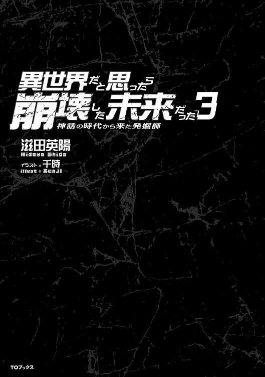

| 異世界だと思ったら崩壊した未来だった～神話の時代から来た発掘師～3 | |
| 滋田英陽 | |
| TOブックス (2016) | |
重要文化財を次々に発掘し、地位も名誉も嫁付き一戸建ても手に入れた空。欲しいもの全て手に入れた空だが、発掘のロマンを胸に、次なるお宝を求めて旅に出る。すると巨大魔獣を狩り尽くすわ、新能力に覚醒するわといつも通り天下無双の大活躍！ しかも、新発見のお宝は究極の装備と判明し、ますます熱意を燃やす！ ......が、あまりに危険な発掘環境に悪戦苦闘、さらに最強最悪の魔獣が空達の元へ迫っているのだった！ 遺跡発掘ファンタジー完結編、空の発掘とバトルの行方はいかに!?

イラスト：千時
デザイン：BEE-PEE
凶悪な異形の怪物が存在が闊歩する世界。
近づくことさえままならないその存在を人々は妖魔と呼んだ。
妖魔に怯えながらも、人々は逞しく生き続けている。
そんな人々が希望とする存在が発掘師だった。
遥か過去に栄えた文明の遺物を求め、発掘師達は今日も森の中へと分け入っていく。
発掘師を生業として選んだ少年空は、メキメキと頭角を現し、華々しい活躍と成功を修めていった。
そんな空だったが、あるとき、かつてないほどに凶悪極まりない妖魔が彼の前に立ちはだかった。
見上げるほどの体高。禍々しい〝妖気〟。そして圧倒的で絶望的な存在感。
一振りで山をも砕きそうな凶器を構え、その妖魔は襲いかかってきた。
逃げることもできたが、空は逃げなかった。いや、状況が逃げることを許さなかった。
手には頼りない武器。圧倒的な力の差。味方はただのひとりもいなかった。
どう考えても勝てるイメージが見い出せない。そんな絶望的状況に在っても、空が諦めることはなかった。
相手は絶対的強者。僅かな動きも見逃さず、避け続けることしか生き残る道はない。
避け続けていれば、いつか必ず助けがやってくる。そう信じて空は躱し続けた。飛び退り、しゃがみ込み、走り抜け、身を翻す。たったひとつの希望を糧に空は避け続けた。
しかしとうとう躱しきれない状況に追い込まれてしまう。
ほんの僅かに掠ってしまった凶器が空を吹き飛ばした。何度も何度も地面に叩きつけられ、空の体が悲鳴をあげる。
もうダメかと思ったそのとき、勝てるかもしれない起死回生の一手を閃いた。それは絶大な効果をもたらした。
状況は一変し、空の攻撃が徐々に妖魔を弱らせていく。ついには助けも現れ、空は妖魔を討ち滅ぼした。
街に凱旋した空を待っていたのは称賛と喝さい。空は英雄として持て囃され、ついには最高の栄誉と褒賞を与えられることになった。
そんな空に依頼が来た。
さあ、次の仕事だ。
〝気〟の効力を増幅することができる宝玉とよばれる石。それを探す旅に出た俺と遥は、その道すがら同行している三浦の爺さんに〝気〟を使った刀術の指導を受けることになった。
体を冷やす方法については、移動しながらいつでもできるということで、まずは刀術の基本となる〝気〟の使い方を教わることになった。
日本男児たるもの刀への憧れは強いものがあるわけで、俺もその例にもれず期待感いっぱいに胸を膨らませ、一花ちゃんにもらった刀をもって爺さんのところに行ったわけだが。
「本物を使うのはまだまだ先。今日はお前さんたちの〝気〟質を見極めさせてもらおうか。使うのはコレだ」
ということで、渡されたのは一振りの木刀だった。遥と一花ちゃんにも同じ木刀が渡されている。
そしてこの木刀、一見普通の木刀としか思えないが、きっと何かがあるに違いない。そう思わせるものを感じて爺さんに聞いてみると。
「材質は樫だから頑丈だが極々普通の木刀よ。なーんにも特別なことなどありゃあせん」
と、俺の膨れ上がった期待を木っ端みじんに打ち砕く答えが返ってきた。どうやら俺は、これから刀術を教わることに興奮し、真贋を見極める目を曇らせていたらしい。
俺としたことがこんな有り様では得るものも得られない。と、冷静さを取り戻そうと頭を冷やしていたら、そんな俺の顔を見た爺さんが「ちょいと貸してみぃ」と木刀を要求してきた。
「あ、はい」
爺さんは俺から木刀を受けとると、その辺のこぶし大の石ころを拾って放り投げた。
「これは確かに木刀だが、こんなこともできるようになるかもしれん」
そう宣って、落ちてきた石ころを音もなく一刀両断にしてしまったのだ。もちろん木刀で。
「すげぇ......」
俺は思わずそうつぶやいていた。遥も目を丸くして驚いている。一花ちゃんは満足そうにうなずいていた。
木刀で両断され、地に転がった石ころは、鋭利な切断面を天に向けて二つに分かれている。それはまるで刃物で切断したような断面だった。石を刃物で切断するなど想像しにくいことだが、この爺さんはそれを何の変哲もない木刀でやってのけた。
スゴイとしか言いようがないだろう。俺の爺さんに対する株はうなぎ登りだ。
「師匠！」
思わず俺はそう叫んで、木刀を持つ爺さんの両手を握りしめていた。これからは師匠と呼ばせてもらおう。
「自分にそっちの趣味はないぞぃ」
お茶目そうに眼をパチクリさせている爺さんが何を言いたいのかもちろん分かるし、あえて言及しないし、俺にもそんな趣味はない。が、爺さんがやって見せてくれたことは、俺が持つ二十一世紀の常識からは到底考えられない芸当だった。
木刀を振る速度があり得ないほど早かったわけではない。いや、むしろ遅いようにさえ見えた。爺さんの〝気〟が特別強いわけでもなく、むしろ俺や一花ちゃんと比べたらはるかに弱いと言っていい。それでも石ころは綺麗な断面を見せて両断されている。
この技を身につけて日本刀を振るったら、たとえカテゴリー五の妖魔だって一振りで両断できるだろう。そういえば一花ちゃんの斬撃も、ここまで見事ではないものの凄まじい切れ味だった。きっとこの爺さんに師事したからこそ身につけることができた斬撃なのだろう。
そうとなれば、ここは恥を忍ぶどころか、喜び勇んで爺さんの言うことに従おうではないか。
日本刀はまだお預け、そんなみみっちいことは気にしない気にしない。木刀で練習、ＯＫＯＫどんとコイってもんだ。
「まぁいい、今の技は〝気〟を使った刀撃の基本だ。お前さんより圧倒的に〝気〟が少ない自分がカテゴリー五の妖魔を斬ることはできんが、この基本を身につければお前さんならカテゴリー五でも一振りで両断できるだろうて」
爺さんが言ったことは今まさに俺が考えていることだった。言質はもらったというには大げさすぎるし、今の状況に合ってないかもしれないが、俺の語彙力ではそうとしか表現できないのがもどかしい。
とにかく、三浦の爺さんの言うとおりに修業を積めば、もうあんな苦しい戦いにはならないということだ。
ということで、まずは手本を見てそれを真似るという至極オーソドックスな、なんの捻りもないことから修業がはじまったのである。
「じゃぁ、まずは私の動きを真似てください」
で、そのお手本になるのが一花ちゃんの素振りであり、俺と遥は彼女の素振りをよく見て同じことを真似る。ということをただただ繰り返した。
「結構難しいな」
「うん、ツルハシとは〝気〟の使い方が違うし、慣れるしかないわ」
普通に型だけを真似ても何の意味もないことは、爺さんからくどいように仰せつかっている。視るべきは一花ちゃんの動きではなく、彼女の〝気〟の流れとその強弱であり、同じような〝気〟の流れと強さで木刀を振るうことが最初の課題だった。
他人の〝気〟の流れを視ることは、今の俺でもかなりのレベルでやれる自信がある。問題は、それと同じように自分の〝気〟を木刀に流し、一花ちゃんと同じような強弱をつけながら振るえるかどうかだった。
これが実際にやってみるとかなり難しい。というか、簡単にできることではないのだろう。遥も首をかしげながら木刀を振るっているところを見ると、その考えは間違いないようだ。
ツルハシで岩を砕いたり、敵を攻撃していた時は、ただひたすらに硬く頑丈になるよう〝気〟をコントロールしていた。しかし、一花ちゃんの素振りをよく観察すると、〝気〟の動きはそんなに単純なものではなく、しかも体から腕、そして木刀の表面へと強弱をつけながらよどみなく流れている。しかも、彼女の斬撃は目で追うのがやっとというほどのスピードなのだ。
これは一朝一夕でできる技などでは決してない。何度も何度も繰り返し練習して体で覚える必要がある技だろう。
三浦の爺さんによると、この〝気〟の操作は基本中の基本らしいので、一花ちゃんにもらった日本刀本来の切れ味を引き出すには、まだまだ根気と時間がかかりそうだ。しかしこの技を自分のものにできれば、有り余るほどの〝気〟力に頼りきった力まかせの攻撃ではなく、もっと効率の良いより確実な攻撃ができるようになるのは確実だと俺は思う。
根気よくこの修行を続け、たとえ時間がかかろうともこの技をマスターしようと心に誓ったのである。
結局この日は、当たり前ではあるが見よう見まねの段階を出ることはなかった。あまり長時間続けても意味はないということで、就寝までの約二時間、ひたすら素振りを繰り返して一日目が終了したのだった。
翌日は再び活気を取り戻した豊田鉱山の宿屋街で一泊し、三日目の朝は馬車で行けるところまで、つまり名古屋方面への道の終わりまで進んだところで馬車と別れることになった。
馬車は豊田鉱山の守備兵に託し、俺たちはいよいよ道なき森の中へと足を踏み入れたのである。予定では、このまま西へと直進し、地形が変わっていなければ伊勢湾の名古屋港あたりにつき当たったところから西北西に進路を変えて琵琶湖を目指すことになっている。
今回の宝玉採掘隊にはかつての日本地図と方位磁石があるため、万が一にも位置を見失うことはないと考えている。琵琶湖までの行程は約六十キロ、森の状況が分からないが、遅くとも一週間で踏破しなければ後の行程が苦しくなってくることは想像に難くない。
欲を言えば、石川までの山岳地帯を考えて三日で琵琶湖までたどり着きたいところだ。
森に分け入ってからの行軍は、今のところは平地？ を歩いていることもあり、所々に密集した藪が出現して邪魔をしてくれるが、順調に進んでいると言って差し支えないだろう。食料は持っていける量に限りがある。可能な限り現地調達、つまり狩りや採取をしながらの行軍となるだろう。
ただし、二十五名の団体様で行軍しているものだから、偶然獲物と出くわすような幸運には経験的にありつけない。もちろん米や干し肉は可能な限り持ってきているが、現地調達できる食料は多いに越したことはない。
そんなわけで、小隊の中から狩りの経験がある者を選抜し、斥候と狩りをかねた別働隊を先行させることになっている。これは本来小隊の役目なわけだが、ただ荷物をしょって歩くだけなのは性分に合わない。
「なぁ遥、俺たちも狩りに行かないか？」
「いいわね」
遥は乗り気なようだ。ワクワク感一杯に目を輝かせている。
「遥さんだけズルいです。私も連れて行ってください」
一花ちゃんはお嬢様というかお姫様だし、遠慮して声をかけなかったら拗ねられてしまった。凶悪な妖魔でもさして苦労せずに倒してしまう彼女の戦闘力は確かに凄いが、狩りと戦闘は別物だ。強さはさほど求められない。
「じゃぁ、獲物に気づかれないように十分注意するように」
「もちろん注意するわ」
ということで、俺たち三人も先行隊に参加させてもらうことにした。先行隊は俺たち三人と小隊の中から狩りに長けた四名の兵士計七名だ。ただし、俺たち三人は斥候としても狩人としてもあくまで素人であり、兵士四人の指示に従うということで先行隊入りを許される形になった。
「ではお三方、我々が先行しますので〝気〟をお抑えになってその後を」
四人の中でも一番の年長者、とはいっても俺の見た目で四十ほどのやせ型の男がそう言って部下だろう一人の若くて気の強そうな女性兵士と、二人の男の兵士をひきつれて先行する形になった。
俺たち三人はその後を追うように速足で続いているのだが、なるほど彼らは狩りに慣れているのだろう。森の中だというのにほとんど音をたてずに、しかもかなりのスピードでぐんぐん進んでいる。
やがて獣道に出くわすと、その脇に隠れるように身をかがめ、さっきの年長者が小声で指示を出した。
「ここからは手筈どおり単独行動だ。獲物の痕跡を見逃すな。各自の成果を期待する。正午には本隊に合流するように。お三方もできるだけ気配を殺してご自由に行動してください。では、ご武運を」
団体で行動すると、どうしても獲物にこちらの気配を察知されやすくなるし、獲物と遭遇する可能性も減ることになる。したがって狩りは単独で行うのが基本になるらしいのだが、俺たちは素人だということで三人で行動を共にすることになっている。
そんな俺たちを置き去りにして、兵士たちは背にしていた弓を手に取り、腰をかがめた姿勢で音もなく森の中に散っていった。
「さて、俺たちは俺たちにできる狩りをすることにしよう」
「で、なにかいい考えがあるの？」
そう聞いてきた遥は少し心配顔だったが、何かを期待するような雰囲気も孕んでいた。彼女は、山小屋にいたとき、結局俺がヒカル爺と狩りに行っていないことを知っているからだろう。一方の一花ちゃんが俺を見る目は、それはもう期待感いっぱいのキラキラしたものだった。その期待に応えてやろうじゃないか。そして俺たちの成果などあてにしていないだろう小隊の鼻をあかしてやろうじゃないか。
というのも、俺たちが狩りに参加すると申し出たときに、わずかに見せた小隊四人の困惑顔を見逃さなかった。あの顔は間違いなく俺たちを素人だと侮っていた。
「フフフフフ、いい考えがあるのだよ諸君──」
俺の考えはこうだ。それは、俺の有り余る〝気〟を使った生体レーダーを使って獲物を探す。そしてとっておきの必殺技で獲物を誘導し、俺たちの戦闘力をいかんなく発揮して仕留める。
確かに俺は戦い方に関しての〝気〟の使い方はまだまだヘタクソなのだろう。しかし、これでも俺はいままでいろんなことをコッソリと誰にもバレないように訓練してきた。その中でも、〝気〟の遠隔操作は得意中の得意なのだ。これを使わない手はない。
もちろん、〝気〟のレーダーを使ってしまえば、気配に敏感な獲物に気づかれてしまう恐れが無いわけではない。もしかしたら気づかれないかもしれないが、今回俺が思いついたナイスでイカした作戦ならば、たとえ獲物に気づかれたとしても大丈夫なのだ。その理由を作戦とともに一花ちゃんと遥に説明したのだが。
「スゴイです。私も〝気〟の操作については不得手ではないですけど、そんなことは考えもつきませんでした」
「そうですよね。ときどき空は何考えてるか分からないところがあるけど、その作戦なら私たちでも上手くいきそうだわ」
二人とも大絶賛してくれたことに、俺の気分はますます大盛り上がりだ。
俺たち三人は刀を抜き、万全の態勢を整えて小隊四人と被らない方向に進路を取った。もともと俺たちは狩りに参加する予定がなかったから、狩りに向いている弓や槍を持ち合わせてはいない。だから刀で仕留めるつもりなのだが、別に妖魔と戦うわけでもないし、特別強い獲物を狙うわけでもないので、不慣れな刀でも十分に獲物を狩れるはずである。
それに、もし俺と遥がしくじったとしても、一花ちゃんがいるので全く俺の作戦には問題ないのだ。
「よし、じゃあそろそろはじめるよ」
小隊の四人と別れてからだいぶ森の中を進んだ。もう十分だろうと、彼らの邪魔にならないように、俺は〝気〟のレーダーを扇型に広げていく。できるだけ薄く、できるだけ遠くまで。大猟の期待をその〝気〟に乗せて。
扇状に、常人では気づけないほどに薄く薄く拡散させた〝気〟のレーダーに反応があったのは、獲物を探しはじめて十五分ほど森を進んだころだった。今回の作戦では、獲物に歩く音や俺たちの匂いで気づかれて逃げ出される恐れがないので、かなりの速度で森の中を歩いていた。
藪があまり茂っていない森の中は歩きやすく、したがって小隊の四人と別れた位置からはすでに一キロ以上離れている。ここで大立ち回りを演じたとしても彼らに迷惑をかけることにはならないだろう。
〝気〟のレーダー網にかかった獲物らしき反応は五体。体長は一メートルから一メートル五十センチほどで、体高はさほど高くない。
「見つけた」
抜き身の刀を右手に歩を進めていた俺は、戦いやすそうなスペースまで歩いたところでそう告げて立ちどまる。一花ちゃんと遥は、声を出して獲物に逃げ出されることを恐れたのだろうか、無言で立ちどまった。彼女らも抜き身の刀をその手にしている。
「今から獲物をここまで誘導する。準備はいい？」
「ええ」
一花ちゃんが小声で答えた。
「わたしも大丈夫。ところで、獲物は何なの？」
同じく小声で問いかけてきた遥に、俺は感じ取った獲物のサイズを伝えることにした。俺たちの位置から獲物までの距離は五百メートル以上離れているし、幸いなことに、警戒する様子は伝わってくるが逃げ出すまでには至っていない。
障害物がない場所なら、薄く広げた〝気〟のレーダー網を半径一キロ程度までは張り巡らせることができるが、森の中では五百メートルが精いっぱいだった。そして、さすがにこの距離で獲物の特定までできるわけがない。
「獲物の種類までは分からないよ。けど、体長一メートルから一メートル五十センチ。体高はそんなに高くない。それが五匹」
「......たぶんイノシシか何かね──」
少し考えて小声で話しはじめた遥によれば、この地域でそのサイズだとイノシシの可能性が高いらしく、俺たち採掘隊の人数と持ち運べる量を考えれば、五頭すべてを狩るのは多すぎるらしい。
少し前に別れた小隊の四人もなにがしか狩ってくるだろうし、量を考えれば二頭か三頭狩ればそれで十分ということになった。
となれば、一花ちゃんは確実に一頭を仕留めるだろうから、俺か遥のどちらかが少なくとも一頭を仕留めればミッションコンプリートである。俺たちの実力を侮っているだろう小隊四人の顔を見るのが今から楽しみだ。
「じゃあそれで行こう」
一花ちゃんと遥が黙って肯いたことを確認し、俺はとっておきの秘策を実行することにした。標的は、時おり周囲を警戒しながらも、地面に鼻先を突っ込んで餌をあさっているイノシシらしき五頭。倒すのは二頭か三頭だが、そう強そうでもないし保険の意味も考えて五頭まとめて標的にすることにした。
標的の位置はもう掴めている。俺は〝気〟のレーダーを展開したまま、天に向けて右手を伸ばした。その右手に練りこんだ〝気〟を圧縮し、上空に放ってソフトボール大の〝気〟弾を生成する。
さらに、一発だけではなく二発、三発、四発............二十発と、多数の〝気〟弾を上空に滞空させた。それを目視することは叶わないが、〝気〟の扱いに慣れた一花ちゃんや遥には視ることができたようだ。
「うん、これだけあれば十分だろう」
俺の言葉を聞いて、一花ちゃんと遥がゴクリとツバを飲んだのが分かった。俺は彼女らの期待に応えるべく、天空に放ったすべての〝気〟弾を操作し、延々と地平線の果てまで続く森の上空を、標的であるイノシシのいる少し先、つまり俺と標的を直線で結んだ先まで移動させる。
「行っけぇー！」
イノシシの群れをわずかに外して、上空に待機させた〝気〟弾を一発炸裂させる。当然、イノシシたちは一目散に逃げはじめた。〝気〟弾は俺の方から見てイノシシの向う側の地面に着弾させたので、逃げ出したイノシシはまんまと俺たちの方に走りだした。
その群れを追うように上空の〝気〟弾を移動させる。途中、木を避けるなどして逃走方向が変わるが、そのつど方向を修正するように〝気〟弾をさく裂させ、逃走方向を俺たちに向かうように調整していく。
これが俺が考え出した秘策である。この方法なら、たとえ〝気〟のレーダーを獲物が察知して逃げだしたとしても、その位置さえ掴めていれば、獲物の誘導は可能になるはずだ。ヒカル爺から聞いた狩りの基本は、〝気〟の放出を極限まで抑えて獲物に気づかれないことだった。
しかしこの方法なら、そんなことは気にせずに狩りができるのだ。なんてことを心の中で自画自賛していたら、いよいよ獲物が近づいて来た。一花ちゃんと遥にもそれが分かったようで、二人とも今にも飛び出してくるだろうイノシシに備えて刀を構えなおした。
そして間もなく。
「来るぞッ！」
弾丸のような速度で突っ込んできた黒い影に、真っ先に反応したのは、やはりというか一花ちゃんだった。猪突してきた体長一メートル強の見事なイノシシの頭部が、一花ちゃんの一振りによって見事に切り落とされる。頭を無くしたイノシシは、そのまま何にも気づかなかったように数メートル進んでドサリと倒れ、その首からは止めどなく血があふれていた。
それに間を置くことなく、次々と飛び込んできたイノシシの一頭に狙いを定める。俺の場合、一花ちゃんみたいに頭を落とすなんて芸当はできそうもない。むしろ素手で殴り倒した方が実績もあるし確実で簡単だが、せっかく手にすることができた刀を使わないなんて勿体ない。
「ならば」
大地にどっしりと根を張るように〝気〟を流しこみ、腰を十分に落として一直線に猪突してきたイノシシの頭部めがけて渾身の突きを繰り出した。
「ハッ！」
刃部を上にして突き出した俺の刀は、突っ込んできたイノシシの眉間に寸分たがわず命中すると、反ってやや下を向いた切っ先をなぞるように標的に深く吸い込まれた。そしてイノシシの勢いを殺しながら頭部を縦に割り、背中まで達したところでようやく停止するに至ったのである。
もちろんイノシシはその一撃で絶命しており、俺が刀を抜いて立ち上がると同時にドサリと横に倒れた。
「ふうっ」
一息ついて遥を見やれば、彼女もイノシシの頭に刀を突き刺し見事に仕留めていた。運よく標的にならなかった二頭はすでに俺たちの間を駆け抜けており、すでにその姿は彼方へと消え去っている。
「よっしゃ、作戦成功だな。にしても、一花ちゃんの斬撃はスゴイな。ああも簡単に首を切り落とすなんて俺にはまだできないよ」
「うふふ、私はこれが本職ですから。そんなことより、たった一年でここまで〝気〟を扱えるようになった空様のほうが信じられませんよ。五百メートルも離れた位置の獲物の群を完璧に誘導するなんてスゴすぎます」
「そうよ。それにこんな狩り方、おじいちゃんが聞いたら卒倒するわ。ワシの二百年は何だったんじゃって」
「あはは、照れるなぁ。でも、これからどうする？」
「そうね、まだ時間はいっぱいあるし──」
獲物の処理に一番詳しい遥の提案に従い、この場で血抜きをして本隊との合流地点へと向かうことになった。
ということで、手ごろなツタをそのへんに生えている木から引っぺがし、首を切り落とした三頭のイノシシを木につるして血抜きをしたのだが、吊るしたイノシシに〝気〟を流して血を絞り出すようにしてやると、効率が良くて美味い肉に仕上がるという遥先生の指示に従ったのは、言うまでもない。
三十分ほど血抜きをしたイノシシを一人一頭ずつ背負い、俺たちは合流地点へと向かった。合流地点はあらかじめ決めてあって、一花ちゃんの持つ地図上では、名古屋港につき当たる手前、そこにバツ印が書き込んである。対して現在地は豊明市を過ぎて本隊からかなり先行した位置になる。時刻はあと一時間ほどで正午になるから、このままゆっくり歩いても間に合いそうだ。
三人とも背に百キロ近いイノシシを背負っているが、〝気〟によって強化されているだけあって、赤子でも負ぶっているかのように足取りは軽かった。足が軽いのには、小隊四人の素人には狩れないだろうという思惑を覆してやったことももちろん加算されている。
そして、森の中もずいぶんと障害物が少なくて歩きやすかったせいか、予定よりかなり早く俺たち三人は合流地点近辺へと到着した。あとは本隊が近づいてくる気配を〝気〟のレーダーで察知するだけだ。
「この辺りで本隊を待ちましょう」
足を止めた一花ちゃんがそう言ったのは、森が少し開けて昼食にはちょうどいいと思われる広場だった。森の木々が邪魔して海を見ることはできないが、なんとなく潮風が漂っているのは俺にも分かった。海が近いことは間違いないだろう。
「じゃあどうせだし本隊が来るまで俺たちでできることをしておこう」
一花ちゃんも遥も異存はないらしく、しょっていたイノシシを地に降ろした。
「私はこの辺りの草を刈りましょう」
「じゃあわたしは薪を集めてきます」
一花ちゃんが刀で草を刈りはじめたのを見て、遥は森へと薪を拾いに入っていった。じゃあ俺は何をしようかと考え、そういえば肉ばかり食っても飽きるよなと、喰える野草でもないかと再び森へと分け入った。
が、よくよく考えればこの時期は実に中途半端で、植物はもうすぐ枯れはじめるという季節であり、木の実やキノコなどの旬にはチト早い。それでも何かないかと歩いてみれば。
「あった」
見つけたのは木に絡まった細いツタ。確かこのツタは山イモ、いわゆる自然薯のツタじゃなかっただろうか。細長いハート形の葉と、ムカゴだったろうか、小さな緑茶色の実をつけている。
秋から冬にかけてが旬だったような気もするが、今の時代は〝気〟の存在でなにもかもが大きく育ちやすいと聞いている。少し早いかもしれないが掘ってみよう、と考えたところでツルハシを本隊に預けてきていることを思い出した。
今俺が持っているのは刀のみ。さすがに刀で芋掘りをするのはどうかと思う。何かいい方法はないか？ そう考えたところでハタと閃いた。
「ないなら作ればいい」
土を掘り返すだけの簡単な道具ならその辺に生えている木を削ればどうとでもなるじゃないか。
そう考えて手ごろな太さ、直径十センチ弱の木を一刀のもとに切り倒し、〝気〟を込めた刀でその木をサクサクと削って簡易スコップを作った。途中、〝気〟で木を削るというダジャレにもならないようなお粗末な語感がなぜだかツボにはまり、吹き出しそうになったのは一花ちゃんや遥には内緒だ。
そんなこんなで割と簡単に作った簡易スコップでツルの根元を掘り返していったところ、目的のブツが姿を現したのだった。
「結構太いぞコレ」
形は不恰好そうだが、十センチ×五センチほどの茶色い楕円柱が地の中へと続いている。やっぱ今の時代に二十一世紀の常識は当てはまらなかった。
俺はコレならいい食材になると喜び勇んで掘り進め、途中で勢い余ってスコップの先でイモをぶった切ってしまったが、合計で一メートル強の自然薯を収穫することに成功したのだった。
そう思って喜んでいたら、広範囲ではないが、もう無意識というレベルで張り巡らせている〝気〟のレーダーに団体さんが引っかかった。もちろん俺たちが待つ本隊だ。
迷いなくこっちに向かってきていることを考えれば、本隊も俺たちの位置を把握しているのだろう。案の定、一花ちゃんがいる広場へと戻ってみれば、さほど待つことなく森の中から団体さんが姿を現した。
「ほう！ これはまた見事な。さすがは姫殿下にございますな」
「うふふ、これは全て空様のお手柄ですよ。私は一頭仕留めただけです」
「と申されますと？」
三浦の爺さんが横たえられたイノシシ三頭と、俺が掘ってきた自然薯を見て唸っていると、一花ちゃんの自分の手柄を否定する言葉に藤崎さんが問いかけた構図なのだが。
「すべては空様が〝気〟の遠隔操作で誘い出した獲物なのです。私と遥さんはそれを仕留めただけですよ」
「なるほど、刀術に関しては初心者であれど、〝気〟の応用については空殿の右に出る者はおりますまい。いやはやこの藤崎、まっこと感服いたしました」
「そんな、大層なことじゃありませんよ」
などなど謙遜してみたものの、〝気〟の使い方をこうも潔く褒められて嬉しくないはずがなかった。そんな折、途中で別れた小隊四人が次々と狩りから戻ってきたわけだが......。
「な、なんと。このイノシシを一花様達三人が......」
言葉を無くしてしょげ返っている小隊の四人が持ち帰った獲物は、三羽のうさぎと二羽の野生化した鶏のような鳥だった。明らかに俺たちの勝利である。別に勝負をしていたわけではないが、そんな四人を見て俺はしてやったりと小鼻を膨らませたのだった。
森に入ってはじめての昼メシは、宿屋街で握ってもらったおにぎりと、短時間で調理できる味噌汁だった。味噌汁は、俺が掘りあてた自然薯入りだ。あっさりとしたシンプルな味噌汁も確かに美味いが、自分で掘った自然薯が入った味噌汁はそれ以上に格別だった。
そして昼メシもほどなく終わり、しばしのくつろぎの時間を過ごした後、採掘隊一行は行軍を開始した。ほどなくして名古屋港らしき海につき当たり、迂回するように北へと進み、そして海から別れて西に向かってしばらく歩いたところで森を抜ける。
「まいったわ、これは時間がかかりそうね」
うんざりしたような一花ちゃんの言葉にあるとおり、森を抜けた先はうっとうしいほどのカヤ、カヤ、カヤ。背丈よりも高いカヤが生い茂り、全く先を見通すことができない。
先頭の兵士が交代しながら刀でカヤを払い、道を作りながらの行軍だ。しかも足元がゆるい場所が多く、行軍速度は一気にスローダウンしてしまった。
それでも俺たち一行は着実に前進し、陽が傾いてきたころに今日の行軍は終わりを告げたのだった。全体の行程としては、森の中が歩きやすかったことと併せてほぼ予定通りの距離を稼げてはいるが、明日以降はかなりの苦戦が予想される状況だ。
宝玉採掘の旅はまだまだ初日。行軍の主力である兵士たちの士気は一部を除いていまだ高く、テキパキとカヤを払って広場を作り、俺たちが狩りで仕留めたイノシシはさっそく捌かれて夕メシの食材として一部は鍋に投入されたり、あぶり焼きにされたりしていた。
「こういった野性味あふれる食事もいいですなぁ」
「ホントに美味しいわ」
藤崎さんや一花ちゃんは骨付きカルビを手で持って豪快にかぶりついている。たとえ戦時にあっても、この二人の場合は身分の都合上、本来は天幕の中で上品な食事になるらしいのだが、今回みたいな旅はふたりとも初めてらしく、嬉しそうに肉を頬張っていた。明日からは苦戦が予想されることは確実だろうから、こうやって英気を養うのもいいのかもしれない。
食後の時間は、腹ごなしも兼ねて一花ちゃんと遥と共に俺は木刀を振るったのだが、昨日と比べて何が変わった、と、特段感じ取れる収穫はなかった。こういった訓練は地道にコツコツと繰り返すしかないのだ。たった二日で何がどうなるかなんて分かるはずないじゃないか。と、上達しない歯がゆい思いに理由をつけて、俺は納得することにした。
そして翌朝、昨晩の残り物を使った軽い朝食の後に行軍を再開したわけだが、さすがに兵士たちだけにカヤを切り払わせ続けるのも悪いし、このままでは行程に遅れが出ると考えた俺は、兵士たちのローテーションに加わることにした。
俺が動けば当然とばかりに一花ちゃんと遥も参加することになるのは自明の理である。さらにそうなれば、当然のように藤崎さんも加わることになった。ただ一人、三浦の爺さんだけは、一花ちゃんが、というか全員で「貴方は年相応に後ろで楽にしてください」と参加を認めなかったわけだが、少し寂しそうだった。
ちなみに、一花ちゃんが参加しようとしたときは、小隊長や兵士たちが散々止めてくれと進言したのだが、彼女はそれを聞き入れようとはしなかった。まぁ、仮にもというか一花ちゃんはまごうことなき一国のお姫様なのだから、小隊の面々の反応は至極尤もなことだと俺は思う。
俺たちがカヤ刈りに加わったことで、行軍のスピードは普通に野原を歩く程度にまでは回復していた。特に刀の扱いに慣れている一花ちゃんの活躍はすさまじく、もちろん藤崎さんもスゴかったが、小隊の面々が自信を無くしていたのは少々痛々しいものがあった。
「そう肩を落とすな、中尉。刀術で一花様と張り合おうと考える方がおこがましいのだ」
「ですが閣下、これでは我々小隊の立つ瀬がありません。あっ、もちろん悔しいとかそう言うのじゃないですよ。ただ情けないというかなんというか......」
「そう思うなら努力することだ。一花様に遊撃小隊の底力をお見せして差し上げろ」
「ハッ、そうするでありマス」
肩を落としていた小隊長だったが、藤崎さんの発破にそう言って敬礼すると、ローテーションで一花ちゃんが下がったときに小隊の部下たちに気合いを入れた。
「よく聞け貴様ら！ 我ら小隊が行軍の足を引っ張ってどうする。一花様にお見せするのだ。我ら小隊の底力を。一人でダメなら二人でペアを組め。ローテーションの速度を上げろ。行軍速度を落とすな」
この小隊長さん、見た感じ可愛い女性なのだが、その言動はまさに鬼軍曹を地でいっている。名前は小峰涼子さんというらしく、背は低めで髪は短くクリクリした目が可愛らしい。
小隊の兵士たちの負担を減らし、なおかつ行程に遅れを出させないためにカヤ刈りのローテーションに加わった俺だったが、結果的に彼、彼女らの負担を増やしてしまった。おかげで行程の遅れが出ることは回避できそうだが、余計なおせっかいだったかもしれないと、軽はずみな行動に出たことを少しだけ俺は反省したのだった。
しかし、存分に刀を振りつづけたおかげで少しコツを掴むような感触が得られたことは大きかったかもしれない。
そんなこんなで行程は順調に進み、昼食の後、陽が傾く少し前に俺たちは大きな川へとつき当たっていた。そう、木曾川である。
「これは予測より水量が多いですな」
藤崎さんが険しい顔でそう呟いたのだが、それには理由があった。延々と続いたカヤの茂みをようやく抜け、丸い石ころが敷しき詰つめられた河原へとたどり着いてみれば、そこには満々と水をたたえた川が流れていた。
予定ではこの木曾川を渡ったところで一泊し、琵琶湖を目指すはずだったのだが......。
「藤崎、この水量と流れの速さでは渡れませんね。困りました」
「仰るとおりにございます。一花様」
とりあえず上流に行けば歩いて渡れる浅瀬があるかもしれない。そう考えた俺は、とりあえずその考えを言ってみることにした。
「一花ちゃん。陽が暮れるまでもう少し時間があるから、歩けるだけ上流に行ってみよう」
「そうですね。今はそれしか方法がないでしょう」
俺の考えを受け入れてくれた一花ちゃんの表情が晴れることはなかった。しかし、これこそ冒険ではないかと俺は思う。目的を考えればこういった考えは不謹慎かもしれないが、なにごとも順調に進んでしまっては面白味がない。困難を克服した先にある成功こそ、俺が本能的に求めているものなのだ。
今俺たちがいるこの地は、この時代の人々からみれば前人未到の領域であることは間違いない。お宝を求めてそんな領域を冒険している。その事実だけでも俺にとっては憧れの状況であり、今まで成すことができなかった、そう、夢の実現なのだ。
この程度の困難は冒険のスパイスに過ぎない。上流に向かって河原を歩きながらそんなことを考えていた。
「空お兄ちゃん。なんだかとっても楽しそうね」
一花ちゃんが顔を近づけ、耳元でそうささやいた。
「冒険は俺の夢だったんだ。この程度のアクシデントなんて楽しいもんじゃないか」
「うふふ、やっぱり空お兄ちゃんは昔のまんまなんだね。そして私が認めたただ一人の男の人」
一花ちゃんはそう言って微笑んだ。さっきまでの沈んだ顔はもうどこかに置いてきたようだ。やっぱりこうでなくちゃ。一花ちゃんに暗い顔は似合わない。
とは和んでみたものの、状況が好転することはなく、結局この日は川を渡れそうな浅瀬を見つけることはできなかった。河原でのたき火を囲んだ夕げは、いかにもアウトドアな感じがして俺的にはウキウキ気分だったのだが、採掘隊全体で見れば、やはり沈んだ雰囲気が支配的だ。
そんな状況下にあっても、俺は一花ちゃんと遥とともに日課になりつつある刀術の修行をキッチリこなして就寝したことは言うまでもない。
そして翌日は朝から上流へと向かって採掘隊を進め、渡れそうな浅瀬を探し歩いた。
「困りましたな。一花様、この状況では一旦川を離れるしか」
「たしかにそうですが......」
一花ちゃんと藤崎さんは言葉を無くして試案にふけっている。朝から河原を進んで陽はすでに頂点に達しようとしていた。
「腹も減ったことだし、昼メシ食いながら話し合いませんか？」
という俺の提案は、もちろん満場一致で受け入れられた。俺と一花ちゃんと遥、藤崎さんと三浦の爺さんに、涼子さんを含めた六人で昼メシの準備をしている間から食べ終わった今でも話し合いは続いていた。
ちなみに、なぜここまで困窮することになったかというと。木曾川につき当たって、そこから上流に歩いてくるまでの間、渡れそうな浅瀬がなかったということが一つ。
さらに、今いるこの場所で川が大きく曲がって淵になっているため、普通に歩ける石ころの河原は終わりを告げてしまったのだ。このまま上流に進むためには藪の中を突き進んでいかなければならなくなった。ということが原因だったりする。
このまま上流に行きすぎてしまうと、石川に行くためには山岳地帯を抜けるしかない。そうなれば、運が悪ければ大きな遅れが出るだろう。そういう理由で俺たちは話し合うことになったのである。
もちろん、無理やりにでも川を渡ろうと思えば渡れないことはない。でも、そうしてしまうと食料として運んでいる米が水に濡れてしまい、ダメになってしまう可能性が高い。雨露程度ならコメが水に濡れることはないが、さすがに川に浸かってしまうと濡れてしまうのだ。
ポカポカで暖かいと言うよりは、残暑厳しい陽射しに晒され、じっとりと汗をかいている中の話し合いだったが、結局解決策が見いだせず、風の音だけが辺りを支配していた。悔しいことに、汗をかいているのは俺だけなのだが......。
「このまま話し合ってもいい案は出ないようですね。行程が遅れるのは承知の上で浅瀬が見つかるまで川沿いを進みましょう」
この中で一番身分が高い一花ちゃんがその責任感からだろう、現在取りうる最善のとは言い難いが、それでも確実に前進できる案を提示してきた。
しかしこのとき、俺は別の案を提示しようか迷っていた。要は米や干し肉などの食料を濡らさずに川を渡れればいいわけだ。川幅は五十メートル近いが、俺の有り余る〝気〟を使えば放り投げて向う岸に渡った人が受けとるという方法もある。
ただし、受け取ったときの衝撃で袋が破れて米をぶちまけてしまうかもしれないし、上手くコントロールできるとも限らない。そんな不確実な方法をとることはできないだろう。
ならば、山小屋にいたときから密かに修業を積んできたアレを使うか？ いやいや待て待てアレはまだ未完成だ。完璧にしてからどうだと言わんばかりに披露して喝さいを浴びる、という俺の比類なき計画が台無しになってしまう。
しかし、しかしだ。今はそんな意地を張っている場合だろうか......。
「食料を濡らさなきゃいいんだよな？」
ままよとばかりに発した俺の一言に、五人の視線が突き刺さった。遥と一花ちゃんの視線は期待に満ちたものであり、その他三人は訝しむようなものだったが、
「何かいい方法があるのですか？」
そう聞き返してきた一花ちゃんの表情は、特段に期待に満ちたものになっていた。ついに口に出してしまったが、ここは一花ちゃんと遥の期待に応えねばなるまい。それにだ、訝しむ三人の鼻も明かしてもやりたい。ならば。
「一花ちゃんは空飛べる？」
俺の問いかけに、一花ちゃんはキョトンとした顔になり、遥を含むその他四人は狐につままれたかのような顔になった。
クックック、狙い通りだ。人が空を飛ぶことなどできないというのが、この時代の常識だということの調べはついている。だから密かに修業を積んできたのだ。
今の俺では自由に空を滑空することはまだできていない。しかし、ある程度の重量を背負っても宙に浮いて移動することころまではできるようになっていたのだ。
「飛べるわけないです。空を二、三歩蹴ることはできますが」
「そうでしたな。空を蹴るのは一花様だけが可能とする秘技中の秘技」
一花ちゃんに心酔するような表情でそう言い切った藤崎さんに迷いはないようだった。ならば、ここはひとつ存分に驚いていただこう。俺は五人を見据えて括目せよとばかりに問いかける。
「じゃあ俺が開発した技を見てくれないか？」
予定よりずいぶん早くなってしまったし、まだ不完全ではあるが、ついに俺の秘技を披露するときがやってきた。まぁ技の不完全さは少々の味つけでごまかせばいい。
そう考えた俺は辺りに落ちている石ころの中から、直径五十センチ程度のものをヒョイと肩に担ぎ上げた。当然五人の視線が俺に痛いほどに突き刺さっている。
そして、五人の射すような視線を一身に浴びた俺は、背中から大気中に広く高く拡散させた〝気〟を、同じく大気中に存在する僅かな自然の〝気〟に絡みつかせた。そこから、自然の〝気〟を高速で手繰るように背中に引きつけ、足元から噴出させる。その操作を連続で、間髪入れずに繰り返す。すると、俺の体がゆっくりと地上から離れ、そして上空とはおこがましくも言えないが、足元が地上二メートルほどにまで上昇したのだった。
「..................」
どうだとばかりに地上を見下ろした俺に、五人は見上げるようにして目を見開き、そして顎を落として固まっていたのだった。山小屋にいたときからひっそりと訓練していた飛行術を、ついにお披露目してしまった。
本来なら完璧にして、つまり飛行する姿を披露する予定だったが、今回は緊急事態だから浮遊でも仕方がないだろう。一花ちゃんをはじめ、遥も藤崎さんも三浦の爺さんも俺を見上げたまま驚きを隠そうとしない。そしてそれは小隊の兵士たちも同じだった。皆が一様に驚愕の表情を浮かべている。
俺の飛行術はまだ未完成とはいえ、荷物を担いで宙に浮くことはできる。そしてそのまま移動することも当然可能だ。ただし、自由自在に高速で飛びまわったり、上空高くまで上ることはまだできない。
俺が開発したこの飛行術は、大気中の〝気〟と俺自身が保有する〝気〟を結び付けているわけだが、上空に上がれば上がるほど大気中の〝気〟が薄くなるから、さっきも言ったように空高く飛び上がることは無理だ。
しかも今回の場合、結構な量の食料を担いで浮かばなければならないから、浮遊高度は頑張ってもせいぜい三メートルほどだろうし、速度も駆け足程度がやっとだと思う。だから未完成なわけだが、食料を担いで川を渡ることは問題なく可能なハズだ。
直径五十センチはあろうかという石を担いで宙に浮いていた俺は、驚くみんなを他所に──内心ではサイコウに気分よく──いったん地に降りた。
「俺が食料を川の向こうまで運びます」
「............」
いまだ現実に復帰しない一花ちゃんたちに、俺は気分よく、しかし表情にそれを出すことなく問いかけた。
「どうしたんですか？」
ちょっとわざとらしかったかもしれないと、今の発言を少しだけ反省していたら。
「いつの間にこんな技を......いえっ、空を飛べるなんてスゴすぎます。しかも荷物を担いで」
「一花様の言うとおりだわ。ねえ空、いつ練習してたの？ どうやって飛んだの？ スゴイ量の〝気〟を使っていたのは分かったけど」
遥の問いかけに、一花ちゃんと藤崎さんは何度も何度もコクコクと頷いていた。どうやら皆、飛行術の原理に興味津々のようだが、三浦の爺さんだけはその表情から察するに原理を理解したようだ。
「山小屋にいたときからコッソリとね。で、師匠......は、やっぱり解かったみたいっすね」
「ホッホッホ、伊達に歳はとっとらんからな。どれ、自分が解説しようかの──」
俺は黙って頷くことで了解の意を示した。そしてやはりというか、三浦の爺さんの説明は俺が開発した飛行原理を完璧に網羅したものになっていた。
「──と、いうわけだな。〝気〟力が空殿と同等に高い姫殿下なら、訓練すれば飛べるようになれますぞ」
「ホントですか、先生！」
一花ちゃんはキラキラと瞳を輝かせて嬉しそうだ。対照的に遥は少しガッカリしているようだった。俺が持つ〝気〟の量でやっと飛ぶことができるのだから、一花ちゃんが飛べるようになるのは理解できるし、遥が飛べないのは仕方がないことなのだろう。
「それにしても、空殿は我々の想像もつかない〝気〟の使い方をなされる」
「ふむ、確かに藤崎殿の言われる通りだが、ちとアンバランスすぎるかのう。だが、刀術の修練を続けていれば、そのうちそれも解消されるかの」
「それで空殿、食料はかなりの量になりますが、全て運べるのですか？」
藤崎さんが言うとおり、二十五人の一か月分の米や干し肉は相当な量になる。少なくとも五百キロは超えるだろう。
「五回か六回往復すれば問題ありません」
百キロ程度なら担いで飛ぶことはたぶんできる。もしキツそうだったら回数を増やすだけだ。
「時間も惜しいことだし、さっそく運びますか」
ということで、涼子さんさんの号令で米や干し肉などが一か所に集められた。ニカワだろうか、水を通しにくいように樹脂のようなもので編み目を埋められた光沢のある袋に米や干し肉は詰められていた。袋ひとつ五十キロはあるだろう。
そしてその袋には、背負いやすいように肩紐がつけられているが、俺はその一つを普通に背負い、もう一つを抱きかかえるようにして空へと浮かび上がった。そうしたのは、最初は両肩に担ごうとしたのだが、いざ浮き上がってみるとどうにもバランスがとりにくいことが分かったからだ。
「じゃあ私は先に行くね」
宙に浮かぶ俺にそう言った一花ちゃんは、手にロープの一端をもって助走をつけると、川へと向かって大きく跳躍した。彼女が何をしようとしているのかというと、空を蹴って川を渡ろうとしているのであり、ロープを持っているのは、そのロープを伝って残った兵士たちが川を安全に渡るためだ。
一花ちゃんはもともと、〝気〟を使って空を蹴る技を身につけているからこそできる芸当なのだが、さすがに五十キロ近くある荷物を持って川を渡ることはできないらしい。まぁ、もしできたのなら彼女があんな深刻な顔になることはなかったわけだが。
駆けだして速度に乗り、川に向かって大きく一歩目を踏みだした一花ちゃんは、その一歩目で川の中ほどまでに到達すると、水面ギリギリで空を蹴り、次の一歩で幅五十メートルほどある川幅の八分目ほどまで到達し、最後の一歩で川を渡り切ってしまった。
その様子を見届けた俺は、川を渡り切って手を振っている一花ちゃんのもとへと、速足程度の速度でゆっくりと飛行したのだった。もう少し早く駆け足程度の速度で飛ぶこともできるが、何往復もすることを考えると、今の俺ではこれで精いっぱいなのがもどかしい。
そして俺が最初の荷物を運び終わったころには、ロープを伝って兵士たちがずぶ濡れになりながら川を渡りはじめていた。
川の流れはそれほど速くはないが、中央付近はかなり水深があって足がつかないらしく、一花ちゃんと藤崎さんが両端を持つロープを両手で掴んで流されないように腕力のみで前進している。俺はそんな兵士たちを眼下に、次々と荷物を運んだのだった。
ついに荷物も運び終わり、渡っていないのは三浦の爺さんとロープを持っていた藤崎さん、それに遥だけとなった。荷物を運び終えた俺は、その遥たち三人のもとへと戻ることにした。それはなぜか？
「あとは遥たちだけだね。俺にはまだ余力があるからおぶっていくよ。一度に三人は無理だから師匠と遥からかな」
「空殿、私は自力で渡りますゆえ」
「それじゃ、お言葉に甘えるとするかの」
そう言って迷うことなく、三浦の爺さんは俺の背中へとおぶられたわけだが、爺さんをおぶってしまった手前、遥は必然的にお姫様抱っこになるわけで。
「わ、私は......」
それを察したのか、遥はなにやらモジモジと恥ずかしがっていた。俺としては、遥をおぶって背に当たるふくらみの感触を堪能したいという煩悩がなかったわけではないが、お姫様抱っこで腕にかかるフトモモの感触を味わうのも悪くないかと思っていたりした。もしかしたらもう一方の手の平に胸のふくらみが......なんてことを期待しながらも、恥ずかしそうにしている遥をヒョイと抱きかかえる。
「は、はやく渡りなさいよ」
プイと横を向き、すこしツン気味にそう言った遥は、両腕を胸の前に抱くように引き寄せてしまったため、俺の期待は虚しくも達成されることが無かった。期待は裏切られたが、そっぽを向く遥を見て、可愛いヤツめと腕に伝わってくる彼女のぬくもりを確かめながら俺は川を渡ったのだった。
渡り切ってみれば、なぜだか一花ちゃんが悔しそうな涙目で頬を膨らませ、俺を睨んでいた。俺の腕から降りた遥は、さっきまではあんなに恥ずかしがっていたのに、少し誇らしげな顔を一花ちゃんに見せている。
これはあれだろうか、彼女もお姫様抱っこして欲しかったのだろうか。遥だけお姫様抱っこしたのを妬いているのだろうか。全く、女心は分からないもんだと、少し苦笑いして何気なく振り向いてみれば、そこには下を向いて諦めろと首を振る藤崎さんがいたのだった。
そんなこんなで何とか無事に木曾川を渡り切った俺たちは、川を離れてふたたび琵琶湖を目指し、カヤの茂る中へと踏み込むことになった。そして、何とかカヤの茂みを抜けた先の森の中で三日目の夜を過ごし、四日目の午後三時ごろにようやく琵琶湖と思われる、畔が視界に入った。
途中森の中で〝妖気〟が溢れている洞窟らしき穴に行き当たり、中から出てきた妖魔と戦うことになったが、山犬より少し小型でカテゴリー一の野犬系の妖魔が三体だけだったため、小隊の面々だけで楽に倒すことができた。もちろん洞窟には俺と一花ちゃんが大量の〝気〟を放って浄化したことは言うまでもない。
そんなことがあって視界の先に煌めく畔をとらえた俺は、そこに向かっていつの間にか走りだしていた。薄暗い森の先に見える水のきらめきが俺を誘っているかのようだった。理由は分からないが、俺は無心で走った。
もしかしたら走りだしたのには予感めいたものがあったのかもしれない。そして、畔にたどり着いた俺の視界には、満々と水をたたえる海が広がっていた。琵琶湖はそこになかったのだ。かわりに広大な海が広がっていたのである。
「ウソだろ......」
はるか先にはうっすらと対岸が見えてはいるが、左を見ても右を見ても対岸らしきものは見ることができない。俺は小さな砂浜へと駆け下り、ままよと水をすくって舐めてみれば、疑うまでもなく塩辛い海水だった。
畔から見える状況から判断すれば、日本列島は琵琶湖があった位置で分断されていたことになる。それほどに過去に起こった天変地異は強烈なものだったのだろう。本州が分断されるという、富士山がなくなっていたことなど霞むような現実を目の当たりにした俺は、眼前に広がる大海を前に立ち尽くすしかなかった。
「ねえ空、これは海なの？」
いつのまにか俺の横に立っていた遥がそう問いかけてきた。振り返ってみれば、一花ちゃんや他のみんなも海をしげしげと眺めている。彼、彼女らには日本列島が分断されていようが、それはショッキングなことではないようだ。考えてみればそれもそうかと納得するしかなかった。
「......うん、さっき確認したけど間違いなく海だよ。もともとここには琵琶湖っていう湖があったんだけど」
そう答えた俺だったが、遥の質問を反芻してみると、ある違和感を覚えた。
「なぁ遥、遥は海見たことなかった？」
「うん、今日が初めてよ。聞いたことはあったけどこんなに広いなんて......」
やっぱりだ。富士大公国は一応海に面してはいるが、まだ歴史が浅く、発掘の手は海までは伸びていないと聞いていた。一応海の幸は和国経由で入っては来るが、予想以上に高かった。
一花ちゃんはどうなんだろうか？ と俺たちのほうに歩いて来た彼女にも聞いてみることにした。
「一花ちゃんは見たことあるよね？ 海」
「はい。でも、ずっと昔のことでほとんど覚えてません」
「そうなんだ。よし、今日の行軍はここまでにしてここで一泊しよう」
「どうして？」
不思議そうに問いかけてきた一花ちゃんに、俺は満面の笑みを返す。
「新鮮な魚、食べたいよね。貝とかも獲れるかもしれないし」
そう、俺が喰いたかったのは新鮮な刺身だ。喰える海の魚ならなんでもいい。今のところ食料に余裕はあるが、海の魚の刺身なんて今後いつ喰えるか分からないのだ。
ならば、今日のこの日を逃す手はない。ワサビがないのが少し物足りないが、そんなことは些細な問題だった。
聞いてみれば、遥はもちろん若い人のほとんどは刺身を食したことがないそうである。藤崎さんや三浦の爺さん、それに一花ちゃんは和国で食したことがあるそうだが、それでも数えるほどだそうな。ということで、俺の案はあっさりと了承されることになった。
「じゃあ俺は海に入って魚を獲ってくる」
俺はさっそくその辺の木を削って簡易的なモリをつくり、白いトランクス一枚になった。遥は山小屋にいたときに俺のトランクス姿は見慣れているはずだが、一花ちゃんは違ったようで、赤くした顔を両手で覆い、それでも指の間から俺の姿をガン見していたのが新鮮だった。
彼女が小さい頃は、一緒に風呂に入って俺の素っ裸は見ているはずだが、どうやらそのことについては彼女の記憶には残っていないようだ。
そんな初々しい反応を見せる一花ちゃんはさておき、小隊の面々も俺に倣ってモリを作り、海に入ろうとしている。一花ちゃんや遥、藤崎さんに三浦の爺さんと女性兵士は海には入らないようだ。
久しく目にしていない女性の生肌を拝むことはできなかったが、当然水着など持ってきてはいないのだろうから仕方がない。
「頑張ってね、空。期待しないで待ってるわ」
「わ、私は期待していますよ。頑張ってください」
「おう、大物を仕留めてくるぜ！」
遥と一花ちゃんの声援を受けた俺は、自作のモリと紐を片手に磯の方へと走り、驚くほどきれいな海へと飛び込んだのだった。
◇◇◇
空が新鮮な刺身を食べたいがためにモリを片手に海に飛びこみ魚群を追っていたころ。
その北西に位置する山間の深い谷を越えた先に広がる大平野の中心部には、四方を堀に囲まれた、大きな石と漆喰が見事な城を中心に一つの都が栄えていた。名を福井城という、その城の一室。そこでは険しい顔をした四人の男がテーブルを囲んでいた。
「では東の谷に増援を送る余裕はないと言うのだな。木原」
「はっ、北の魔の物どもが活性化しておりますゆえ、それを防ぐだけで手いっぱいにございます。陛下」
陛下と呼ばれた男、大洗善之助は、ギリリと奥歯をかみしめる。
善之助が治める福井の国は、周囲を険しい山と海に囲まれた小さな国だった。国の北部と東部には魔の物と呼ばれる怪異、すなわち空たちが妖魔と呼ぶ存在が湧き出る巣が存在してる。
そこから定期的に湧き出してくる妖魔に対処するため、国の兵力を都の守備隊とそれぞれの巣に対する防衛線として三隊に分けていた。
例年はそれで問題なかったのだが、今年は湧き出してくる妖魔の数が多く、その対処に苦戦を強いられている状況なのだ。
例年ならば梅雨の季節までにカタがついていたが、今年に限って夏を過ぎても妖魔の勢いは衰えない。兵たちは疲弊し、じり貧に陥っていた。
「ならば仕方あるまい。東の谷には余が出向くことにする。谷の魔の物など蹴散らしてくれるわ」
「なりません陛下！ 陛下はいざというときの都の守り。それに、谷に入り込みすぎて主が出張ってきたらいかがなさいますか」
ヒョロリと背が高く、病的なまでに白い顔を振るわせて男が唾を飛ばした。善之助は一瞬考え込むそぶりを見せたが、迷いを振り切るように両の手でテーブルを叩き立ち上がる。
「ぬぅ......主が出てくれば引けばよかろう。奴の足は遅い。それまでの間に溢れた魔の物など容易く蹴散らせるわ。それに、都には寧々がおれば守りには事かかぬ」
「されど......」
善之助の勢いに押されながらも、色白の男は困惑顔で反論を試みようとしたが......。
「ええい、しつこい。文官は黙っておれ。今は国の一大事ぞ！ 木原、余とともに参れ」
「はっ」
「高木は寧々と共に都の守りを固めておけ」
「承知」
善之助は、彼の次に武の立つ高木を娘寧々の護衛として城に残し、もう一人の懐刀である木原と近衛数名をひきつれ、城を飛び出したのだった。
◇◇◇
モリを片手に飛び込んだ海中は恐ろしく澄んでいた。底が見えないほど海底は深くないが、少なくとも水深二十メートルはあるのではないだろうか。〝気〟をある程度使えるようになった今の俺では、万が一にも溺れることはないだろうが、それでも潜水に慣れているわけではない。
海底近くには岩や海藻、その間を泳ぐ大きな魚影も見えるが、そこまで潜ってモリを自在に突くことは難しそうに思えた。いや、実際に潜ろうとしてみたが、潜れることは潜れても浮こうとする体を上手く操ることができなかったのだ。
実際、俺以外に飛び込んだ兵たちも、底に潜るだけで精いっぱいのようだった。しかし、しかしである。
──見つけた！
動きの速い魚を深い海底で突くことは今の俺には難しかったが、あの獲物なら手で掴むことが出来そうだ。そう考えて一度浮上し、息を整えてから勢いよく海底まで潜る。そしてモリではなく素手で獲物を素早く掴んだ。捕まえた獲物は全長四十センチくらいある赤黒い巨大エビ。そう、イセエビだ。
背中の部分をむんずと掴んだ瞬間、巨大イセエビは勢いよく何度も尾を丸め込み、凄まじい力で手から逃れようとするが、強化された俺の握力に逆らえるはずもなかった。俺はロープでイセエビの胴と尾の境目を結んで逃げられないようにすると、岩肌に何匹もくっ付いている他のイセエビを捕獲していった。
そして、五匹ほど捕まえた後、空気を求めて陽光がキラキラと射しこんでくる海面を目指した。
と、そこで俺は絶好の獲物をまぶたに焼き付ける。距離は結構あるが、強化された俺の視力は海面下数メートルに群れる魚の群れを捕えていた。あれだけ浅い位置に群れているのなら、下からこっそりモリで突けば群れを散らすことなく魚を捕獲できるかもしれない。
俺は一旦浮上し、海底のイセエビの群れを漁にてこずっている兵士に任せることにした。捕獲したイセエビを一匹かかげて叫ぶ。
「この下に大きなエビの群れがいるぞ！」
海面に顔を出していた何人かの兵士が即座に反応し、こっちに向かって泳ぎ出す。それを見届けた俺は、振り返って魚群のおおよその位置を海面から確認する。水の中では正確な距離感が掴めないような気がしたからだ。
魚群は磯のようにゴツゴツした岩が陸地から跳びだしている先にいるようだ。それだけ確認した俺は、一旦海岸沿いに磯に近づき、大きく息を吸い込んで斜めに潜りながら魚群の下方へと移動した。
これが地上なら気配を殺して息をひそめるところだが、どのみち海中なので空気を吸い込むことはできない。だから俺は心の中で息をひそめ、肺に溜まった空気の浮力に任せてジワリと浮上していく。
右手に握りしめたモリの長さは二メートル強。腕の長さを考えれば射程は三メートルほどだ。
どうやら魚群は塩の潮流が交わるところに集まった小エビを捕食しているらしく、俺が目測で三メートルくらい下につけても逃げ出そうとしない。潮の乱れに体が流されそうになるが、体の周りに張り巡らせた〝気〟を操ってその場に根性でとどまった。その間に群れの一匹に狙いをつけることも忘れない。そして迷わずに肩を伸ばしてモリを突き上げた。
──グッ！
モリの先端は見事に標的の白い腹を捕えた。魚は暴れるように突進しようとしたが、俺の腕力に逆らえるはずもなく、群れから下方に引き離される。少しだけ海中に血が舞うが、素早く引き寄せた魚はすでに俺の顔の位置にあった。
五十センチオーバーの大物である。獲れた魚は体高があり、木の葉のような形をしていて濃いグレーのうろこに覆われている。たぶんメジナだろう。
まだ端のほうにイセエビが結び付けられているロープを、捕えた魚の口からエラへと通す。そして再びモリを構えて上を見た。
──よし、まだ散っていない。
もくろみ通りだった。できるだけ気づかれないように深い位置から群れの底を泳いでいる魚を狙い、モリで刺したら暴れられる前に素早く引き寄せる。そうすれば群れが散ることはないはずだ。その考えが見事にハマった。あとは息が続くかぎりくり返すだけだ。
結局、五匹を仕留めたところで息が続かなくなり、群れを避けるようにして海面に顔を出した。刺身で考えるならこれだけあれば十分だとも思ったが、塩焼も食いたい。そう考えてもう一度俺は海に潜ったのだった。
「遥、一花ちゃん！」
海から上がって調理とテントの準備をしていた遥たちに駆け寄った俺は、得意満面の顔で漁の成果を彼女らに見せつけた。
「スゴイ！ さすが空様」
「ホント、空は美味しい食べ物がかかると凄いんだから」
「ほう、これはまた見事なエビですな。魚も食べ甲斐がありそうだ」
「ほほほほ、これで久しぶりの刺身にありつけるのう」
結局、俺の成果はイセエビが五匹とメジナが十二匹。これだけあれば今日の夕げは豪華な海の幸を存分に味わえる。それに、仲間たちからの喝さいを受けてサイコウに気分がいい。まだ陽は高いが、さっそく調理に取りかかることにしよう。そう思って魚をロープから外していると。
「調理はワタクシたちにお任せ下さい」
そう言って三人の女性兵士が俺のところにやってきた。もちろんいつも調理を担当している兵士のほうが俺より適任のはずだ。が、しかし、俺が海に入りたがったのは新鮮な刺身が喰いたかったからだ。獲物すべてを煮物や焼き物にされたらたまったもんじゃない。
「魚の刺身が食べたいんだけど大丈夫？」
俺が心配そうにそう告げると。中年というにはまだ早い。そう思える一人の女性兵士が柔らかな、まるで聖母のような笑みを浮かべた。
「もちろん大丈夫ですよ。実はわたし、和国にいたころに食堂の娘として育ったんです。調理の手伝いもしていましたから。刺身も大丈夫ですよ。空様」
「へぇー、それは心強いな。じゃぁ調理は任せるから美味い刺身を頼むよ」
「お任せ下さい空様。薬味になりそうな食材もありますから美味しい刺身を期待してくださいね」
そんなやり取りをしている内に、海に入っていた兵士たちも続々と上陸してきた。得意そうにしている彼らの持つロープには、イセエビや大きなサザエがくくりつけられている。
新鮮な刺身に塩焼、殻ごと焼いたイセエビ、サザエのつぼ焼き。この時代に来て初めて味わう新鮮な海の幸。しかも極上この上ないラインナップに、思わずニヤけてしまう。
「嬉しそうだね」
「ん、ああ遥か。そりゃぁ嬉しいよ。これは俺にとってスゴク懐かしい味なんだ」
「そう、よかったわね。はいコレ、はやく体拭いた方が良いよ」
「ああ、ありがとう」
遥に渡された手ぬぐいで頭と全身を拭いたわけだが、乾いた手拭いだけでは体のべとつき感が取れなかった。髪の毛なんてベタベタのゴワゴワで気持ち悪い。
「ダメみたい。ベタベタが取れないよ」
髪をつまんでおどけて見せたら、遥はすこし考え込んだ。
「ちょっと待ってて」
少し失敗したような表情で、遥はそう言って走っていった。そして、間を置かずに戻ってくる。その手には樽が持たれていた。
「これで手ぬぐいを濡らせばいいんじゃない？」
遥が持ってきたものは真水が入った樽だった。川を渡ったばかりなので真水にはまだ余裕がある。
「ありがとう。大事に使わせてもらうよ」
余裕があると言っても、無駄遣いすることはできない。俺は樽から柄杓で水を掬い上げ手ぬぐいを濡らした。そして入念に体を拭いていく。もちろん髪の毛も濡らした手ぬぐいで念入りに拭いた。
「ふぅ、だいぶスッキリできたよ。ありがとう遥」
「どういたしまして」
体のベトつきもなくなったことだし、調理も女性兵士たちに任せたことだし、どうしようか？ なんてことを考えていたら、一花ちゃんと藤崎さんがテントの陰でなにやら覗き込むようにして深刻な顔をしていた。三浦の爺さんは涎を垂らして調理を眺めている。
「どうしたの、一花ちゃん」
困り顔で俺を見上げた一花ちゃんは、広げていた地図を指さす。
「予定ではこのルートを目指すのですよね？」
「そうだけど、なにか問題が？」
「ええ」
そう言って一花ちゃんが指さした先は地図ではなく、北の方角だった。指された先を見渡して彼女が何を言いたいのかを即座に理解した。
琵琶湖をかすめて福井を通り、石川を目指す予定だったが、今は海となった元琵琶湖の海岸線を北上することはどうしてもできそうにない。
「確かに、これじゃぁ通れないな」
一花ちゃんの指さす先。
そこには切り立った崖が海岸線をつくり、その東は高い山々が連なっていたのだ。この山はとてもじゃないが全員を連れては越えられそうにない。俺は広げられた地図を見ながら思案する。
〝気〟力の高いメンバーを選抜して山を越えるか。それとも北東に迂回して直接石川を目指すか。他にいい案は......。
「うーん、とりあえずここをめざしてみないか？」
俺は地図の一点を指さしてそう提案してみた。地図と現在の地形を見比べた感じでは、福井辺りが隆起してその東の方が少し沈んでいるように思えた。俺が指さした先は、かつての大野市にあたる盆地だ。
「全体的に隆起しているとすればこの盆地から福井に入れるだろ？」
「確かに空様のおっしゃるとおりですね。藤崎、少し遠回りになりますがこのルートに変更しましょう」
「そうするのが賢明なようですな」
一花ちゃんがなぞって見せた大野市までのルートに、藤崎さんはゆっくりと頷いたのだった。
そしてようやく陽がかげりはじめてきたころ、夕げの準備ができたと声がかかった。辺りには魚やエビが焼ける香ばしい匂いが漂っている。その匂いを嗅いだだけで少し落ち込んでいた気分は一気に吹き飛んでしまった。
「うわぁ、お刺身がこんなに美味しいなんて。わずかな甘みがあって歯ごたえも最高だわ。それにこの大きなエビもこの巻貝も想像を絶する美味よ」
興奮気味にまくしたてる遥を横目に、俺は久しぶりの刺身に舌鼓をうつ。しっかりとした歯ごたえの後にやってくるほんのりとした甘みが堪らない。イセエビの焼き物もサザエのつぼ焼きもサイコウだった。
一花ちゃんや藤崎さん、三浦の爺さんや兵士たちも夢中になって海の幸を味わっている。これだけ海の幸が喜ばれるならここに小さな漁村をつくるのもいいかもしれない。帰ったら陽一さんに相談してみようと、俺は心のメモ帳に書き込んでおいた。
「な、俺の言ったとおりだろ。新鮮な海の幸は美味いんだ」
少し得意顔でそう言った俺に、一花ちゃんは満面の笑みで頷いたのだった。
「ええ、こんなに美味しい料理ははじめてです。空様がこだわった理由が分かりました」
海の幸を十分に堪能した翌日、俺たちは海から離れて一路北東へと森に分け入った。俺たちのすぐ左、すなわち西側には山々が連なっている。ようするに、今俺たちは森の中を山すそに沿うように北東に移動しているのだ。
ただし、進路が山裾に近づくと、足場が急激に悪くなってきた。あまり遠回りするのも移動距離が伸びるので思案のしどころだ。
「少し予定より時間がかかりそうですな」
もうそろそろ野営場所を決めなければ、という時間帯になって、俺の横を歩く藤崎さんが不意に話しかけてきた。ゴツゴツした岩に苔がむし、うねった根が足元の自由を制限している。
「はい。これだけ歩きにくいと目的の盆地まで三、四日かかりそうですね。ところで、宝玉はどれくらい必要なんですか？」
目的地への到着が遅れると採掘の時間が削られるのは当然の理だ。運よく、到着してすぐに鉱脈が見つかればいいが、そうでなければ厳しい冬山の行軍を余儀なくされる。今は少しでも時間が惜しいのだ。そんなことを言うくらいなら海の幸にこだわっている場合ではなかったか......。
なんてこと考えたくなるが、男には引けない戦いがある。俺が何と戦っていたのかは言うつもりもないが、とにかくそういうことだ。
「そうですなぁ、最低でも二百人分でしょうか。欲をいえば四百人分手に入ると楽になるのですが」
「最低二百人分ですか......」
宝玉にどれくらいの質が求められるのか俺には分からない。くず石まで含めていいならそれほど時間はかからないだろうが、そんな都合がいいことはないだろう。ならばできるだけ急ぎたいところだが、足場と視界の悪さが、行軍が容易ではないことを物語っていた。
最悪帰りが冬になることを覚悟して、その方策を模索した方が現実的か？ などなど考えながら、しかし急げるだけ急いで森の中で歩みを進めたのだった。
福井への道が抜けていることを期待し、盆地を目指して森の中の行軍を開始して三日目の昼前、斥候を務めていた兵士が息を切らして戻ってきた。
「報告します。これより二キロほど先に森が開けた場所があり、その奥に山間の谷を発見しました。目的の盆地に続いていると思われますが、どうやらその谷の奥は〝妖気〟溜まりのようで、複数の妖魔が徘徊しておりました」
「種別とカテゴリー、数は？」
斥候の報告を受けた藤崎さんは、明らかに苛立たしげにそう問いかけた。当然だろう、ようやく歩きにくい森を抜けられると分かったばかりだったのだから。
「カテゴリー二から三の山犬が確認できただけで十三体であります」
「ふむ、その程度の妖魔だけならば問題はなかろうが、そんなことはないだろうな」
「おそらく。〝妖気〟の溜まり具合からして、谷の奥は妖魔の巣だと思われます」
「だろうな。とすればカテゴリー五クラスがいる可能性がある。はて、どうすべきか......」
そう言って考え込んだ藤崎さんの顔は、悩んでいるというよりは苦虫を噛みつぶしたような渋い感じだった。その様子を静観していた一花ちゃんが、意を決したように口を開く。
「カテゴリー五の妖魔ならばわたしと空様でなんとかできるでしょう。カテゴリー四クラスならば藤崎と先生、それ以下の小物なら遥さんと小隊長ならば問題ないでしょう」
「なりません一花様。次期国主たる一花様がそのように軽々しく危険な立ち回りをなさりたいなどと」
藤崎さんにたしなめられた一花ちゃんは、憤慨するように、そして苛立たしげに声を荒げる。
「まさか藤崎、空様おひとりにカテゴリー五の妖魔を押し付けろと言うのですか？」
一花ちゃんの剣幕に押されるように目を見開いた藤崎さんだったが、その顔からは今までの険しさが無くなり、いつもの冷静さが戻っていた。
「そうは申しておりません」
「ではどうせよと言うのですか藤崎」
一花ちゃんは困り果てたようにそう言った。
「戦うばかりが本筋ではございません。それに、カテゴリー五が一体だけとは限りませんぞ」
「......分かりました、不要な戦いはできるかぎり回避いたしましょう。しかし、いざとなれば私も前に出ますよ」
一花ちゃんの表情から察するに、まだ納得はできていないようだったが、彼女の立場がそれを許さないのは仕方がないことなのだろう。そう思って俺は一花ちゃんをフォローしておくことにした。
「じゃぁ、もしカテゴリー五が襲ってきたら俺が前に出ます。一花ちゃんは俺のフォローと全体の指揮を」
「分かりました」
俺の提案に、一花ちゃんはニコリと微笑んでくれた。
「カテゴリー五が二体以上か、カテゴリー四が対処できないほどいれば撤退ということで先に進みましょう。それでいいですよね、藤崎さん」
そしてようやく、藤崎さんの顔が柔らかいものへと変わった。
「仕方ありませんな、それでまいりましょう。カテゴリー三以下の小物は小隊の面子だけでどうとでもなるでしょうし、引き際を誤る者もおらんでしょう」
ようやく方針が決まり、俺たちは妖魔が徘徊する谷へと向かう。報告にあった通り、森が切れた先は広く開けており、犬型の妖魔が何匹も徘徊していた。その先には両側を切り立った崖に挟まれたかなり幅の広い谷が見える。
徘徊している妖魔は、谷から漂う薄い〝妖気〟の範囲からは出ようとしないようだ。かなり薄い〝妖気〟だが、それよりもはるかに薄い〝気〟のレーダーを展開している俺にはそれが分かった。
森の木々に身を隠し、息をひそめて飛びだすタイミングを涼子さんがはかっている。藤崎さんが言っていた通り、小物の相手は彼女の小隊の仕事だ。しかし小物とはいっても、相手はカテゴリー二から三に分類される妖魔だ。
一般的な兵士や、それに匹敵する戦闘力がある発掘師からすれば、命をかけて戦わねばならない脅威となる存在である。それでも、今回の遠征に選抜されている遊撃小隊の実力は、抜きん出たものがあるらしい。彼、彼女らを見守っている一花ちゃんや藤崎さんの、信頼しきった視線がそれを物語っていた。
そんなことを考えていると、草陰から様子を見ていた涼子さんの体が不意に沈みこんだ。次の瞬間、爆発的な勢いで、しかし音を発することもなく、涼子さんが弾丸のような速度で一番手前にいた山犬へと迫る。
そして圧倒的な速度で振り下ろされた刀は、見事に山犬の首へと吸い込まれ、音を立てることもなくその首を切り落としていた。他の山犬はその事実にすら気づいていないようだ。
涼子さんに呼応するように、小隊の面々もそれぞれが目標としていた山犬へと突っ込んでいく。さすがに、涼子さんのような一刀両断とまでは至らなかったが、それぞれに不意打ちには成功したようで、ほとんどの者が致命的なダメージを山犬へと与えていたのだった。
その後の連携も見事なもので、わずかに遅れて飛び出した残りの兵士は、まだダメージが浅い山犬を瞬時に見分け、まるで示し合わせていたかのように各々が動いていた。その様子を満足そうに見渡した涼子さんは、すべての山犬が倒されたのを確認して、まだ森の中にいた俺たちの方へと歩いて来た。
「露払い完了でありマス」
「見事な戦いだった。ご苦労」
と、満足そうに涼子さんをねぎらった藤崎さんは、俺たちの方に振り返った。
「それでは参りましょう」
藤崎さんのその一言で、すでに集結して整列していた小隊が二手に別れ、俺たちを守るように前衛と後衛について谷の中へと足を進めた。
谷に入ると、幅三十メートルほどの比較的平らな谷底の両側には、きり立った岩肌の崖が高く続いており、谷底には獣道というか妖魔の通る道ができ上がっていた。かなり歩きやすいし、曲がりくねってはいないので前方の視界もよい。
その道を歩き続けること一時間、ようやく前方が開けると、そこには岩がゴツゴツと飛び出した荒野が広がっていた。遠くには囲むように山が見えており、山に囲まれたその一面には草木がほとんど生えておらず、ぽつぽつと動き回るおそらくは妖魔だろうモノが視認できる。そして、いたるところから〝妖気〟が漏れ出しているのが俺には分かった。
「なるほど確かに妖魔の巣だ。これでは生物は生きていけないな」
自然に口をついた言葉だったが、他の者たちも俺同様初めて見る景色に圧倒されているようで、俺の独り言に反応はなかった。しかしそのとき、先頭を歩いていた涼子さんが振り返った。
「あちらから抜けられると思われマス。ここは一気に駆け抜けて出口を目指した方が安全だと思われマスが」
確かに彼女の言うとおり、出口らしき山の谷間が奥の方に見える。この盆地を徘徊している妖魔はまばらだし、近寄ってきた敵をいちいち相手にするよりは駆け抜けたほうが無難だろう。そんなことを考えていると。
「確かに中尉の進言は尤も。どう思われますか？」
藤崎さんが一花ちゃんにそう問いかけていた。
「無駄な戦いは避けた方が無難なのは確かです。その案で行きましょう。ただ......」
この盆地を駆け抜けることを了承した一花ちゃんだったが、三浦の爺さんに視線を投げかけて困ったように考え込んでしまった。
「師匠は俺がおぶって走りましょうか？」
一花ちゃんが何を考えているのかすぐに察しはついたので提案してみたのだが、三浦の爺さんはそれが気に入らなかったようだ。
「そこまで落ちぶれてはおらん！ これくらいの距離、貴様らの足について行くことなぞ容易いことだ」
プンプンと怒りの蒸気を上げるほどではなかったが、その憤慨した様子は、気まずくなってしまった場を和ませるに十分だった。
「分かりました。でも先生、あまり無理をしないでくださいませ。もし辛くなりましたら何時でも言ってくださいね」
一花ちゃんはそう言っているが、男が一度意地を張ったのだ。もしキツくなったとしても弱音を吐くことなどないだろう。これは注意して爺さんの様子を見ておかなければと、俺は心のメモ帳に書き込んだのだった。
涼子さんを先頭に、小隊の半分が扇状に距離を取って展開し、その後を俺たちが走りだした。後方に布陣していた残りの兵士たちは二手に別れた俺たちの横を走っている。
彼、彼女らは、実際には俺たちを守ると言うより露払いが仕事なのだが、その役割を実によく心得ているらしく、ときおり襲い来る犬型やイノシシ型の妖魔と本気で戦うようなことはせず、走る速度を殺すことなく切りつけて払いのけることに専念していた。とどめを刺そうと足を止める者など一人もいない。
そんな感じで大地に飛びだした大岩を縫うように盆地を走り抜けている最中、何度かカテゴリー四相当の虫型の妖魔や、見たこともないような巨大な犬型の妖魔が襲ってきた。
しかしそんなときは、藤崎さんが飛び出しては一刀のもとに切り伏せ、小隊の兵士たちとは次元の違う戦闘力を見せつけていた。結局、盆地を走り抜ける間、俺や一花ちゃん、遥に三浦の爺さんが刀を振るうことは一度も無かったのである。
◇◇◇
福井の国の東。
谷から湧き出てくる妖魔を防ぎとめている部隊に合流した善之助は、疲れ切った兵士たちを鼓舞するように自慢の長槍を振るっていた。彼が戦線に合流して既に四日目になっている。
「クソッ、キリがない」
カテゴリー三相当の山犬を切り伏せた善之助は、そう呟きながらも明らかに苛立っていた。谷から湧き出てくる妖魔は、カテゴリー二から四が十体前後の群れを成しているのだが、定期的に襲ってくるわけでもなく、かといって大群で押し寄せてくることもない。
だからといって放置できるレベルではなかった。報告によれば襲撃は一日に二度から四度ほどで、数日に一体程度レベル四が出現するので、前線の兵士たちに気が休まる暇はない。現に、善之助は参戦してから二度ほどカテゴリー四相当の妖魔を倒している。
カテゴリー四相当の妖魔は、基本的には百人程度の多数の兵で取り囲んで討伐する必要があり、怪我をしたり時には命を落とす兵も必ず出てくる。前線には三百程度の兵が配置されてはいるが、どの兵も一週間に一度はカテゴリー四相当の妖魔と相対していることになる。
それ以外にもカテゴリー三以下の妖魔を討伐する必要があるため、いくら善之助とその側近が加勢したとはいっても、兵たちの心労と疲労はすでに極限にまで達していた。
もしカテゴリー四以上の妖魔を通してしまうと、平民たちにそれを防ぐ術はない。妖魔が谷から出てこなくなるまで、兵たちに安らぎは訪れないのだ。
「この状況が続くのであれば、怪我をした兵や疲労度の高い兵を都の守備隊と入れ替えてはいかがでしょうか」
懐刀の木原にそう進言された善之助は、苛立ちを抑えながらもその考えが正しいことを理解していた。しかし、そうすればもし万が一妖魔を抜けさせてしまった場合、都の守りが手薄になることは明らかだった。
元来、前線で妖魔を食い止めている兵たちは力の強い者たちから選ばれている。つまり、都の守りについている兵たちは熟練度も戦闘力もどちらかと言えば低い者たちなのだ。しかし、疲弊した兵より戦えるのは当然の理だった。
「よし木原、怪我をした者、疲労が色濃い者から五十名を選んでおけ。都には強い者から百名を連れてくるように伝令を出せ」
「はっ」
木原が兵たちの詰めているテントに走り、その後都への早馬が走り去った。善之助はその早馬を見届けたのち、妖魔の血にまみれた体を拭おうとテントへ向けて歩き出した。
そんな時だった。ひとりの兵士が善之助のもとへ青ざめた顔で走り寄ってきた。物見やぐらに上がっていた見張りの兵だ。
「ほ、報告申し上げます！」
「話せ」
「主の出現を確認いたしました！」
「なっ、主が出ただと......」
このとき善之助は、この上ない絶望感と共に、あまりに慈悲のない天の采配にこれまでにない焦燥と怒りを覚えたのだった。
福井の国の東の谷から湧き出る妖魔に対応していた国主である善之助は、魔の物の主、すなわちカテゴリー五相当の妖魔の出現に事態の深刻さを痛感していた。
主の出現は、全軍の撤退を意味する。どれほど力が強かろうが、どれほどの武を誇ろうが、どれだけの名刀を携えていようが、主の前では何の役にも立たない。それが彼らの常識だった。
しかし、国主たる善之助には守らなければならない者たちがいる。田畑がある。都がある。国がある。今、善之助が取れる唯一の手段。それは力、すなわち〝気〟が最も強い自分が主をひきつけ、都から遠ざけることだ。それは、自らが囮となって妖魔の巣窟である東の谷に単身飛び込むことに他ならない。
これが何を意味するか？ 十中八九生きては帰れない死地へと飛び込むということを、もちろん善之助は理解していた。
重鎮たちには逃げればよいと軽口をたたいたが、それはこの地へと赴くための方便。主が出張ってくる確率は低い。現に、今まで源之助はこの地に三度ほど来たことがあるが、主が出たことは一度しか無かった。
それよりも、国の守りのため戦い続け、疲弊しきった兵たちに報いるために必要なことだと確固たる思いで出向いて来たのだ。
案の定兵たちは限界を迎えていた。自分が出向かなければ確実に戦線は崩壊し、妖魔の流入を許していたことは間違いないだろう。前線に駆けつけたことで、たとえ祖父と同じように命を散らすことになろうと、背に腹は代えられなかった。
かつて善之助がまだ駆け出しだったころ、彼の祖父も主の出現にその身を犠牲にして国を守った。善之助亡き後、国を任せられる力ある跡継ぎも育った。まだ若い女の身であるが、武の資質は善之助をしのぐほどだ。
孫の顔をまだ見ていないことが心残りだが、今は主の侵入を何としても防がねばならない。そう善之助が思いを固めていると、木原が必死の形相で駆け寄ってきた。
「陛下っ！」
主の出現で善之助が取るであろう行動を、木原はすでに確信していた。そして国のために、その行動を止めてはならないことを理解していた。自分が囮になりたいのはやまやまだが、己が力では主を引きつけることさえできない。
自分がいくら攻撃を仕掛けようと、主が圧倒的に力すなわち〝気〟力が上の善之助に向かっていくことは明らかだからだ。
「木原、其方は見張りを残し、残り全ての兵をまとめて即時撤退、都の守りを固めよ」
木原が覚悟していた通りの命令が、善之助によって下された。しかし、この命令だけは受け入れられなかった。
兵をまとめて撤退してしまえば、たとえ主を谷の奥に誘導できたとしても、他の妖魔が国内に流入してしまう可能性が高い。が、木原が納得できなかったことはそんなことではない。木原は善之助の前に跪き首を垂れる。
「陛下、最後までお供をする我がままをお許しください」
「ならぬ！」
「どうか、どうか最後のそのときまで陛下のおそばに」
善之助は木原の前まで一歩あゆみ寄ると、片膝を落として彼の両肩を掴んだ。
「ならぬ木原よ。分かってくれ、其方には我亡き後の国を、寧々を盛り立ててもらわねばならぬ」
「し、しかし......」
「我が意をくんで後を任せられるのは其方しかおらぬのだ」
がっしりと掴まれた両肩にかかる力と温もりに乗せて、善之助の想いと覚悟が伝わってくるように木原には感じられた。痛いほどに分かるその想いと覚悟に、木原は自分の我がままを押しとおせないと観念した。
「ならば陛下、せめて、せめてお姿が見えなくなるまで見届けさせてくださりませ」
「解かった。ただし、兵は今すぐに撤退させよ」
「はっ」
名残惜しむように駆け出した木原を見送った善之助は、ハチの巣を突いたような混乱を見せる兵たちに背を向け、ひとり戦場へと歩き出した。戦場にたどり着くと、長槍の柄をぐさりと大地に突き刺し、厳しい視線を谷へと固定したのだった。
しばしの時間、善之助には兵たちがあげる喧騒が後背から聞こえていたが、やがてそれもなくなり、戦場につかのまの静寂が訪れた。善之助が谷に飛び込まず、この戦場で主を待ち受けることには理由があった。
狭い──とはいっても幅五十メートルはある──谷に入ってしまうと、主と遭遇した時に攻撃を躱せない可能性が残る。
善之助が知っているかつての、祖父を亡き者にした主の全長は三十メートルを超えるものだ。谷ですれ違えば確実に主の間合いに飛び込んでしまうことになる。
主の攻撃は、掠っただけでも致命傷になりかねない強烈なものだ。善之助の使命は主を確実に谷の奥底に誘導すること。そのためには、自分を餌に一度主を谷から戦場である平原へと誘い出し、間合いを避けて谷の中へと走り抜けなければならない。
谷の中では主の間合いから距離を置き、しかし離れすぎることなく誘導を続けなければならない。主が善之助を見失い、再び谷を出てしまっては元も子もないからだ。
さらに、上手く主を谷の奥へと誘導できたとしても、そこは魔の物すなわち妖魔の巣窟だ。主ほどの強敵は残っていないにしても、善之助ですら一体に苦戦する敵がゴロゴロうろついていることは想像に難くない。
妖魔は敵を認識すると果てるまで確実に襲い掛かってくる。したがってそれらの敵を確実に葬り去りつつ、主との距離を保ち、谷の奥底へと誘導しなければならないのだ。
もしそれらに成功し、谷の奥底で主に自分を見失わせることができれば生還の可能性はあるだろうが、それを期待するほど善之助は愚かではなかった。この戦いで自分は確実に命を散らすことになるだろう。
だからこそ失敗するわけにはいかない。都を発つと決めたときからこうなる覚悟はすでにできていた。国主が前線に赴くということは、主をおびき出してしまうリスクを背負うことになるからだ。しかしそのリスクを冒してまで前線に赴かねばならない状況に既に陥っていた。
善之助は抗うことができない天の采配に悪態をつきつつ、しかし心を落ち着かせて主が姿を現すのを待った。そしてそれほど待つことなく、谷の出口に巨大でおぞましい姿をした主が姿を現したのだった。
◇◇◇
善之助が覚悟を決めてひとり戦場へと歩き出したころ、都で留守を守る彼の娘寧々は、駈け込んで来た伝令の兵士によって凶報を知らされていた。
「──北の前線が抜かれました」
伝令によってもたらされたこの凶報は、東の戦線に出ねばならなくなった父善之助の無事を、居ても立っても居られない状態で心待ちにしていた寧々の心を打ち砕きそうになった。
しかし、都を預かる今の自分は、いわば民や兵士そして臣下たちの屋台骨も同義。取り乱し、苛立ちをぶちまけることができる立場にはなかった。寧々は今にも城を飛び出したい気持ちを必死に抑え、しかしつとめて冷静さを装った。
「状況を詳しく報告なさい」
「はっ、北の前線を抜けた魔の物は十体、うち三体が黒き大熊にございます。現在、都の守備隊が北門前に陣を敷いて防いでおります」
「北の主が現れたのではないのですね」
「はっ、しかしこのままではいずれ北門も抜かれるかと」
北の主が出てきたのではないことが分かり、寧々は少しだけ安堵のため息をついた。
「高木、私の刀を。私が出ます」
国主である善之助が城を留守にしている今、その代行である寧々は最悪の事態を見据えていつでも出撃できる準備を整えていた。平時ならば、腰まである艶やかな自慢の黒髪を結い上げることなどしない寧々だったが、今はその髪を結い上げ、動きやすい軽甲冑を身につけている。
寧々はまだ十六歳になったばかりの若輩ではあるが、生まれ持った資質は善之助をも超え、すでに父に次ぐ国内二位の戦闘能力を身につけていた。それを知る彼女の腹心である高木は、迷うことなく、そしてうやうやしく彼女の長刀を差し出したのだった。
◇◇◇
善之助はようやく姿を現した主の全容を見て、その巨大さと妖異さに圧倒されそうになった。
かつて祖父が相手にしたときより二まわりは大きく成長し、全長で四十メートルはあろうかという長く太い巨体をうねらせ、幾十もある体の節からはそれぞれ足が飛び出している。
主の正体はどうみても超巨大なムカデだった。巨大ムカデは全身から紫がかった〝妖気〟をたれ流し、ぬめるような輝きを放つ黒い巨体の前部を浮かせ、鮮血のように赤い頭部を持ち上げて何かを探している。
その頭部が善之助の方向を向いたところでピタリと止まり、巨大な前顎をガチガチと鳴らしはじめた。ゴクリとツバを飲みこんだ善之助は、少しづつ後ずさりながら、しかしその視線は固定したまま、巨大ムカデを谷から遠ざけようと試みた。
巨大ムカデの全長と歩行速度と自分の足を考えれば、少なくとも三百メートル。確実に回り込むためには五百メートルは谷の入り口からおびき出したい。そう考えて後ずさる善之助を追うように、巨大ムカデは上体を下してうねるようにしながら器用に足を動かして谷から出てきた。
巨大ムカデと善之助との距離は二百メートル強。完全に善之助を標的に定めた巨大ムカデがその速度を上げる。善之助はそれに合わせるように後ずさりを止め、進行方向を向いて逃げるように走りだした。
少し走っては振り返り、巨大ムカデとの距離を確認する。そして三百メートルは走っただろうかという頃だった。後ろを振り返った善之助は、巨大ムカデの動きに違和感を覚えた。
理由は分からないが、巨大ムカデは突如として善之助を追うのを止めるようにその足を緩めたのだ。巨大ムカデは善之助を追うことを止めて完全に停止すると、彼などまるで眼中にないかのように体をくねらせて後ろに振り返った。
なにが起ころうとしているのか分からなかった善之助だったが、巨大ムカデのはるか向うに見えた信じられない光景に立ち尽くすことになる。
「何なのだアレは......」
善之助が見たもの。それは谷の入り口から走り出てきた人影だった。彼の視界には右手に長刀を持って走ってくる男と、それを追うように走る、同じく右手に刀を持った女。そのさらに後方から数十名の見たこともない兵装をした集団が現れたのである。
妖魔の巣窟である東の谷から人が出てきた。それだけでも信じ難いことなのだが、善之助はさらなる事実に驚嘆を禁じ得なかった。それは巨大ムカデが自分を追うのを止めて標的を切り替えたということだ。
標的を定めて追いはじめた妖魔は、よほどのことが無いかぎりその標的を変えることがない。それなのに巨大ムカデは善之助を標的から外し、谷の方へ振り返った。
それが何を意味するのか？ 答えは簡単だ。谷から走り出てきたあの男が、善之助よりはるかに強いということ。
善之助が考えたこと。すなわち標的を変えたことを裏付けるかのように、巨大ムカデは駆けてきた男に向かってその巨大な頭部を振り上げた。
その刹那、男は驚愕の跳躍を見せる。優に地上二十メートルはあろうかという巨大ムカデの頭部よりはるか上空。男が跳びあがった高さは優に五十メートルは越えていたのだ。どう考えても人間業ではない。
善之助にしても福井の国一の強者だ。助走をつけて全力で跳びあがれば、地上十メートルくらいは跳躍できる。それなのにあの男が跳躍した高さはそれをはるかに上回っていた。
いや、一旦標的を定めた巨大ムカデがそれを変えたことを考えると、それほどまでに常識外れの強者でなければ説明がつかない。
善之助がそんなことを考えているうちに、男は上空を蹴るようにして落下、というよりは落下では考えられない速度で巨大ムカデに迫り、刀を下方に突き刺した。
そしてあろうことか、巨大ムカデの頭部にその刀を深々と突き刺したのである。その瞬間、巨大ムカデの頭部がバチバチと青白い閃光に包まれた。気がつけば、男は巨大ムカデの頭部から刀を抜き去り、すでに地上へと着地していたのである。
そんな信じがたい光景を目の当たりにした善之助は、ただただ立ち尽くすことしかできなかった。
◇◇◇
妖魔の巣窟だった盆地を駆け抜け、大きくへの字に曲がったかなり長い川沿いの谷間をしばらく走ったあと、広範囲に常時展開している〝気〟のレーダーに禍々しい反応が引っかかった。
このぞっとするような二度と思い出したくない反応には覚えがある。豊田鉱山でヒドイ目にあわされたあのグロテスクなカマ野郎だ。雰囲気は少し違うが、感じる〝妖気〟の濃密さと禍々しさからして、間違いなくカテゴリー五だろう。その反応は、ゆっくりとではあるが何かを追うように移動している。〝気〟の性質から見て人だ。
「一花ちゃん、たぶんカテゴリー五の妖魔が人を追ってる。この谷間を抜けた先だ......見えた！」
谷間の出口まではそれほど距離がなく先が開けていて、その出口あたりにいる巨大な妖魔が目に入ってきた。しかもどんな妖魔なのかまで一目瞭然で、超巨大なムカデがうねうねと動いていた。並走している一花ちゃんも視認したようで、表情を引き締めた。
「助けるべきだよな」
「当然でしょう」
間髪入れずに迫ってきた一花ちゃんの答えは、微塵も迷いを感じさせないものだった。引き締まった表情からも分かるが、一花ちゃんはすでにやる気満々の戦闘モードだ。しかし、危険な仕事を一花ちゃんに任せるわけにはいかない。
打ち合わせ通り俺が奴を仕留めるか、奴の気を引きながら戦うべきだろう。幸い、今の俺にはこの刀があるし、敵の動きもトロそうだ。決して油断はしないが、あのにっくきカマ野郎と比べれば、ムカデごときノロマ野郎は俺の敵ではない。
実はムカデの足は速い。なんてヤボことを言ってはいけない。あの巨体で機敏に動けるはずがないのだ。間違いなく、ただただ巨大で、おそらく固いだけの気持ち悪いグロテスク野郎に俺が負けるはずがない。
「俺が一発かまして注意を引きつける。一花ちゃんはフォローに徹してくれ」
一花ちゃんを伺うことなく、そう言って俺は走る速度を上げた。いちいち彼女の了解を取っている暇がなかったからだ。
あっというまにムカデ野郎との距離を詰めた俺は、渾身のハイジャンプで天高く跳ね上がる。ちょっと気合を入れすぎて高く上がりすぎたが、奴の頭に狙いをつけて一花ちゃんから教えてもらった空を蹴る技で方向を調整し、思い切り加速をつけて渾身の一撃をお見舞いしてやった。
俺の刀はいとも簡単に奴の頭にグサリと突き刺さる。さすがに一撃では倒せないと考え、刀を抜いて一旦地上に飛び降りた。相当効いたのだろう、奴は体全体を使って頭を振っている。しかし予想通りその動きは緩慢だった。
ムカデ野郎は、今の一撃で完全に俺を標的に定めたらしい。体全体を使って巨大な頭部を叩きつけるように、自慢の大顎で噛みつきにきた。俺はそれをいなすようにして切りつけ、そして飛び退る。当然ツルハシと違って確実にダメージを与えることができた。
三浦の爺さんから教えてもらっている〝気〟の使い方はまだあまり上手くできないが、毎晩遥と共に一花ちゃんをお手本にして繰り返してきた素振りの効果は出ているようだ。
その後もムカデ野郎は俺をかみ殺そうと必死になって襲い掛かってくるが、そのことごとくにカウンターを当てていった。
その間に一花ちゃんが驚きの動きを見せる。完全に頭に血がのぼって俺しか見えていないムカデ野郎の後背を驚きの速さで動き回り、何十本もある足をスパスパと、それはもう小枝を切り払うかのごとくあっさりバッサリ切り落としていったのである。
あまりの切れ味のよさに、ムカデ野郎はそのことに気づきもしないようだった。ただ一心不乱に俺を攻撃してくる。しかし、足がなくなってしまえばミミズと変わらないわけで、いくら体をうねらせようが思うように俺を追うことができず、ただただのたうつことしかできない。
「空様、そろそろとどめをっ！」
そう一花ちゃんが叫んで離れたのを見計らい、俺は奴の頭上にさっきみたいに上がりすぎないようにジャンプし、頭に刀を突き刺しながら付け根の部分に跨ると、弾けろとばかりに超圧縮した〝気〟を流しこんだ。すると、みるみるうちに頭が膨張し、強烈な閃光とともに爆散したのだが、カマキリ野郎と戦ったときの教訓を俺はここで活かした。
体の周りに〝気〟の膜を張って飛散物を完全にシャットアウトだ。〝妖気〟にまみれた血肉を浴びて、二度とあんな気持ちの悪い思いをしたくない。そしてもくろみ通り、綺麗な体でとどめを刺すことに俺は成功していた。
「さすがだね空お兄ちゃん」
一花ちゃんが駆け寄って耳元でそう呟いてくれた。俺も少し調子に乗って返す。
「あのカマキリに比べたら大したことなかったよ。怖い攻撃もなかったし」
「それでもスゴイことだよ。こんなにあっさり倒しちゃうなんて」
「一花ちゃんのほうがスゴイよ。ほとんど全部の足をたったひとりで切り落としたんだ。俺には剣筋を見るのがやっとだったよ」
「えへへ、年季が違いますから」
一花ちゃんに褒められて俺も嬉しかったが、俺に褒められた彼女も嬉しそうに照れていた。しかし、遥や藤崎さんたちが駆け寄ってくると、一花ちゃんは視線を俺から彼らに移した。
彼女の視線の先には、さっきまでムカデ野郎に追われていた人が呆然と立ち尽くしている。
「襲われていたのはあの方ですよね。どういたしましょうか？」
一花ちゃんの問いかけに反応したのは藤崎さんだった。
「妖魔に追われていたとはいえ、かなり位の高い武人の様子。どこの者かも分かりませんし、まずは私が話を聞いてきましょう」
富士大公国の西にあたる福井近辺は未開の地と聞かされていた。未開ということは誰も立ち寄ったことがないということだろうが、俺はてっきり人が住んでいない土地だと思っていたのだ。藤崎さんが、俺たちから離れて追われていた人に向かって一人歩き出した。
「ねえ一花ちゃん、このあたりに人が住んでるなんて聞いてないんだけど」
「わたしも知りませんでした。けれども、ここは山を隔てた未知の土地ですから人が住んでいても不思議ではありません」
言われてみれば確かにその通りだと俺は思った。よく周りを見回してみれば、向うの方にテントらしきものと簡単なつくりのかなり長いバリケードのようなものが見える。
「おそらくここは、あの谷から出てくる妖魔を食い止めるための前線が敷かれていたのではないのでしょうか」
「なるほど......でもなんで兵士がいないんだろう？ あの人鎧着てるから軍人さんだよね」
「理由はあの方にお伺いすればすぐにわかるでしょう。わたしたちと敵対する様子はないようですし」
確かに一花ちゃんの言うとおりだ。そんなことを考えていたら、藤崎さんが戻ってきた。逃げていた人の仲間だろうか、同じような鎧を着たひとが一人彼のもとへと駆けよってきた。
「一花様、報告いたします──」
藤崎さんによれば、あの人は福井の国というこの辺り一帯を治める国主さんだそうだ。一花ちゃんの予想どおり、ここは妖魔を食い止める前線で、あのムカデ野郎が出張ってきたために兵士を撤退させた直後だったらしい。
あの人は、ムカデ野郎を引きつけて兵士を逃がしていた最中だったということだ。とりあえずは俺たちに敵対するつもりはなく、ムカデ野郎を倒してくれた礼がしたいということだった。
そんなことを藤崎さんから聞いている内に、例の二人が俺たちのところへ歩いて来た。
「此度は我が国の危機を救ってくれたこと、心より礼を申す。余は福井の国が国主、大洗善之助である」
さすがに一国の主だけあって、俺たちに恐縮しないというか、威厳がある。まぁ、俺たちも福井の国の国民じゃないので、へりくだる必要はないのだが、こんな調子で話しかけられたら思わず畏まった喋り方になりそうだ。
「私はここより山を越えた東の国、富士大公国の第一大公女、高科一花と申します。この地へは旅の途中で立ち寄ることになりました。ことわり無き訪来、無礼かとは存じますがご容赦ください」
「無礼などとんでもない。余とて其方らに命を救われた身、すぐには碌なもてなしもできぬこと許されよ。それにしても、山向うに国があったとは驚いた。さて、いろいろと話を伺いたい。狭苦しいところではあるが許されよ。木原」
「はっ」
「客人は余が案内する。その方は見張りに残しておいた兵を急ぎ早馬として伝令に出せ。退却した兵たちを引き返させよ」
「御意」
話し方は丁寧だが、物おじしないどころか、余裕しゃくしゃくの微笑を浮かべて対応する一花ちゃんは、さすが次期国主といったところだろう。根が小市民の俺も、伯爵になったことだし彼女に見習ってせめて堂々としていようとこのとき決心した。
案内されたところは多くのテントが集まる中で、ひときわ大きい一張りだった。ただ、俺たち全員が入るのも無理があるし、相手は国主だ。
案内されたテントには俺と一花ちゃん、そして藤崎さんだけが入ることになった。テントの中は、四角い大き目の木のテーブルと、椅子が十脚あるだけで、おそらく高官の休憩や打ち合わせ専用に使われるところだろうと察しがついた。俺たちは善之助さんに案内されたとおりにテーブルにつく。
「部下がおってはこのような姿、見せられぬのでな」
そう言った国主さんは、テーブルに両手ついて深々と頭を下げた。
「此度は誠に助かった。その方らがおらねば余は確実に死んでおったところだ。ぜひとも一度我が城でもてなしをさせてくれぬか」
「頭をお上げください善之助様。歓待の件は置いておくとして、私たちはどうしてもこの地を通らねばならなかったのです。私も大公女ではあれ武を志す身、人が襲われていればお助けするのは当然ではありませんか」
「かたじけない」
そう言ってようやく頭を上げた善之助さんは、俺に視線を固定すると言いづらそうに口を開く。
「高科大公女殿の武力にも感服いたしたが、其方......」
「俺は葵空といいます。空と呼んでください」
「では空殿、その......富士大公国には其方ほどに武の達者な者が他にもおられるか？」
「たぶんですけど、俺と一花ちゃん以外は......あっ」
このとき、善之助さんは目を丸くして驚いていた。それを見た一花ちゃんがすかさずフォローを入れてくれた。
「空様はわたしの婚約者なのですよ。ご自由な方ですから言葉使いは大目に見てくださいませ」
どうやら俺の言葉遣いが悪かったらしい。直そうと思えば直せるが、どうにもきまりが悪いし、変な言い方になったら嫌だからこのまま押し通すことにした。言葉遣いに関してはいずれ一花ちゃんに矯正してもらおう。
「武力に関しては、空様以外では私の両親も同程度かと、それ以外では聞き及んでおりません」
「それはまた何とも羨ましい。我が福井の国ではご覧のとおり魔の物の対処にてこずっておる有様」
「魔の物とは私たちが妖魔と呼ぶ化け物のことかと存じますが、富士大公国でも苦慮しているところは同じでございます。旅の目的もそれを克服するためなのですから」
「なんと、それはぜひその目的とやらを知りたいものだ」
「少し、相談させてくださいませ。よろしいですか？ それで、その前に一つお聞かせください」
「なんなりと」
「不躾ではございますが、御国は他国との国交はございますか？」
「この世には我が福井の国と其方らの富士大公国以外にも国があると」
「ええ、もちろんでございます」
「では、その話は後ほど」
「ええ、構いません。では」
さすがに、一花ちゃんも旅の目的が宝玉を大量に採掘することだとは答えられないようだ。相談するために俺たちが席を立とうとすると、善之助さんが気を利かせてテントを出てくれた。俺と一花ちゃんと藤崎さんで話し合った結果、俺たちの目的が宝玉採掘だということを伝えざるを得ないということになった。
石川に入るにはここから北上しなければならない。藤崎さんが聞いた話によると、ここは東の谷と呼ばれているらしい。そうなれば、地形的に考えてこの国の都は西のそう遠くないところにあるはずだ。
寄り道しても、おもてなしの件は一日程度だったらロスも少ないしなんとかなる。今後のことを考えれば、素通りするよりは理由を話して採掘に協力してもらったほうが得策だろうということで意見が一致した。
さらに、福井の国は今まで他国と付き合ったことがない。今後政治的折衝をするならば、他国との付き合いがある富士大公国が有利に事を運べるはずである。現時点での多少の不利益には目をつぶっても、さほど困ったことにはならないと考えられるのだ。
そういうことで話はまとまり、藤崎さんが善之助さんを呼んできた。俺たちはここから北にある石川まで出向き、そこで宝玉を採掘したい。そう告げたのだったが、善之助さんは困った顔で俺たちを一度見渡したのである。
「北の地は魔の物の巣窟、簡単には入り込めぬぞ。ましてや力石の採掘など......いやまて、その方らならば......」
どうやらこの国では宝玉のことを力石と呼んでいるらしい。そんなことは置いておくとして、また妖魔か......。というのが善之助さんの言葉を聞いての俺の感想だった。
妖魔戦に長けた俺たち一行ならば、妖魔の巣であろうと入り込めるだろう。が、そんな場所で採掘するのは困難を極めるだろう。
だがしかし、カテゴリー四までなら俺と一花ちゃんで簡単に蹴散らすことができる。もしカテゴリー五が出てくる可能性を考えると、俺と一花ちゃんと藤崎さん、それに涼子さんさんで調査を行い、見つけたら一旦戻って採掘係を二、三人を連れてくればいい。
俺たち四人で採掘係を守り、その間に宝玉を採掘してもらうのだ。これで行ける。と、俺の中で考えがまとまったときだった。
バサリと天幕が開けられ、一人の兵士が駈け込んで来た。どう見てもこの国の兵士だが、表情を見るに、かなりヤバげなことが起こったようだ。
「緊急であります。北の前線が抜かれました！」
のっぴきならない表情で駈け込んで来た伝令の兵士に、善之助さんはガタリと音を立てて立ち上がった。
「詳しく状況を話せ」
「はっ、北の前線を抜けた魔の物は十体、うち三体が黒き大熊にございます。現在、都の守備隊が北門前に陣を敷き、急ぎ寧々様が向かわれました」
「話は分かった。下がれ」
伝令の兵がテントを出ていくと、善之助さんがギリリと奥歯を噛みしめた。
「木原！」
善之助さんがそう叫ぶとすぐに、さっきの木原さんが入ってきた。
「直ちに出立する。馬を用意せよ」
「はっ」
木原さんが急ぎテントを出ようとすると、善之助さんがそれを呼び止めた。
「まて、退却した兵たちは戻ったか」
「騎馬隊はすでに、しかし歩兵は今しばらく」
「ならばその方はここに残れ。歩兵が戻り次第再布陣を行い、その後客人を城までお連れしろ」
「はっ」
木原さんが急ぎテントを出ると、善之助さんが奥歯を噛みしめつつも申し訳なさそうな顔で俺たちに向きなおった。
「高科大公女殿、聞いておられたであろうが余は急ぎ城に戻らねばならぬ。兵が戻り次第先の木原に案内させるゆえ、城まで参られたい」
それを聞いた一花ちゃんが一旦俺を見た。そわそわして物言いたそうな彼女が何をしたいのか俺には理解できた。俺は黙って肯く。
「善之助様、私たちもともに参り、助太刀したいと存じます。馬を三頭ほどお貸し願えませんか？ 私の兵たちはここに残しますので、布陣が終わるまでに谷より襲撃があってもなんとかしてくれるでしょう」
一花ちゃんのこの提案に、ほんの一瞬だけ躊躇しかけたように見えた善之助さんだったが、再び俺たちに頭を下げた。
「かたじけない。度重なる温情、まっこと痛み入る」
「では参りましょう。藤崎、馬を用意してもらう間、先生に状況を説明してください」
「はっ」
「あ、俺も遥に話してくるよ」
「分かりました」
少し寂しそうに返事した一花ちゃんだったが、仕方ないわね、とでも言いたげな仕草で善之助さんの後に続き、テントを後にした。俺はテントのすぐ外にいた遥を見つけると駆け寄った。
「遥、ちょっと聞いてくれるか」
「何よ空、なんかスゴク申し訳なさそうな顔してるけど」
別に後ろめたいことがあるわけではないが、なんとなく置いていくことを申し訳なく思っていたら、顔に出ていたのだろう、俺の顔を見た途端に遥の機嫌が急降下した。
慌てて言い繕う。
「実は──」
これ以上こじれると本当に遅れそうだし、遥を連れて行っても彼女が困ることになるので、できるだけ丁寧に分かりやすく状況を説明した。
「分かったわ。確かにわたしが居ても足手まといになるだけだもんね。完璧に刀術を覚えるまではガマンするわ」
「分かってくれて嬉しいよ遥、この埋め合わせは必ずするから」
ようやく笑顔を見せてくれた遥に俺がそう言ったら、今度はことさら上機嫌な顔になって抱きついて来た。余計なことを口走ったかと、後悔してももう遅いようだ。
「絶対だからね。この旅が終わったら私の言うこときいてもらうから。うふふっ」
「わかったよ遥、わかったから離してくれ。置いて行かれちゃうよ」
「調子に乗って無理しちゃダメだからね。行ってらっしゃい」
「ああ行ってくるよ。遥が来るころには終わらせておくから」
遥との話がついたあと、俺たち三人は、借りた馬に乗って善之助さんに続いた。ようやく馬に乗れるようになった程度の乗馬技術しかない俺は、落馬しないように内心ひやひやだったが、そこは持ち前の〝気〟を上手く使ってなんとか耐えた。
一時間も走らない内に〝気〟のレーダーに酷く禍々しいものが反応した。既視感がハンパないが、この禍々しさは間違いなくさっき戦ったばかりのムカデ野郎と同等。
しかも人が追われているところまで同じだった。追われているのが一人じゃないことと、方向がこちらに向かってくることを除けば、状況はさっきとほとんど変わらない。
「一花ちゃん！ この反応はカテゴリー五だ。善之助さんに知らせてくれ」
俺の横を並走していた一花ちゃんにそう告げると、彼女は即座に速度を上げて少し先を走る善之助さんに並んだ。一花ちゃんは横を向いて何かを叫んでいるが、風を切る音が邪魔してよく聞こえない。
しかし、善之助さんには上手く伝わったようで、駆け足程度の速度に変わったのだった。
「もう少し走ると妖魔が見えてきます。さっきのムカデと同じくらい強い奴です。誰かが追われていますが、上手く距離を取っているので今なら間に合います。善之助さんはあまり近づかないようにしてください」
悔しそうに奥歯を噛んだ善之助さんは、駆け足の速度を落とすことなく視線を前方に固定したまま、しばらく何も言ってくれなかった。しかし......。
「其方の言うことを信じぬではないが、この目で確認するまでは先を急がせてくれ」
彼の気持ちは良く理解できた。あの伝令の兵が言っていた寧々様という人が、善之助さんの身内か何かなのだろう。いや、そうでなくても知り合ったばかりの俺が言う、いわば凶報を簡単に信じることなどできないはずだ。
「分かりました。ですが、その目で確認されたら即座に引いてください。さすがに守りながらは戦えませんから」
「わきまえておる。皆まで言うな」
善之助さんはそう言って再び速度を上げた。俺も一花ちゃんも藤崎さんも彼に合せて速度を上げる。しかしちょっと言い過ぎたかもしれない。
けれども、無茶をされて困るのは俺の方だ。気にくわないのなら後で謝っておこう。そんなことを考えながら少し走っておぞましい妖魔と、挑発するようにして逃げている何人かの人が見えてきた。善之助さんも俺たちも馬を止める。
「寧々ぇ!! 兵どもを連れて急げぇ！！！」
馬から降りてそう叫んだ善之助さんに、追われていた一人が応える。
「父上ぇ!!」
どうやら寧々ちゃんは善之助さんの娘だったようだ。あの時の彼の反応も納得である。
「ここからは俺たちの出番です。善之助さんは娘さんを連れて距離を」
「承知した。情けないがこの状況では其方らに頼るしかない。無理をするなとも言わぬ。が、十分に気をつけられよ」
「任せてください。一花ちゃん。さっきみたいに俺が攻撃するからフォローを」
「分かりました。でも、気をつけてくださいね」
「分かってる。じゃあ行こうか」
「ええ、叩きのめして差し上げましょう」
そう言い合って顔を見合わせた俺と一花ちゃんは、妖魔の注意をいち早く引きつけるため、全速力で走りだした。
方向は妖魔に向かってやや左。数名の兵を連れて駆けてくる寧々ちゃんと思しき女の人、いや少女は、少し離れてすれ違った俺の顔を驚きの表情で見やった。
俺は寧々ちゃんを追っていた妖魔に〝気〟を孕んだ視線を固定する。胴から生えた、毛むくじゃらでずんぐりと太い八本足、気球のように膨らんだ巨大な下腹部、頭の上にちょこんと置いてあるようなバスケットボール大の二つの目、折りたたまれたような巨大な牙。
体全体を剛毛に覆われたその妖魔は、体長十五メートルはあろうかという超巨大な地蜘蛛だった。もちろんカテゴリー五の妖魔らしく、体のいたるところから紫がかった濃密な〝妖気〟をたれ流している。
目の前の妖魔が今までに俺が戦った二体のカテゴリー五と違うと感じさせたのは、その巨体に似合わぬ足の速さと敏捷性だった。標的を俺に切り替え、一合交えたときに分かったことだが、その素早い動きにヒヤリとしたことは俺の警戒心を一気に引き上げた。
敵を挟んで向かい合っている一花ちゃんに、視線で次の俺の動きを伝える。彼女も視線だけで了解の意を返してきた。
次の瞬間、クモ野郎が飛びかかってきたところを視線で示した方向に躱しながら刀を振りぬく。足を覆う剛毛に邪魔されて刃はほとんど通らないが、刀を通して〝気〟を同時にぶつけることで、鈍器で殴りつけたような感触が刀を支える両手に伝わってきた。同時に弾けるような爆発音と閃光が煌めいた。
俺が切ったというか刀で殴りつけたのはクモ野郎のぶっとい足だ。一合交えて簡単には切れそうもないと悟った俺は、打撃系ダメージを与えることでクモ野郎の注意を引きつけることに専念しようと考えた。
最初の作戦と逆になるが、俺が注意を引きつけて斬撃が鋭い一花ちゃんが足を切り落とした方がよさそうだ。
一花ちゃんは俺に呼応するように対角の足を切りつけている。その刃は、確実にクモ野郎の体表に届いていた。一花ちゃんの斬撃の痕からは、どす黒い体液が光とともに飛び散っている。
◇◇◇
善之助のもとへとたどり着いた寧々は、今しがたすれ違い、妖魔と戦いはじめた空と一花の、動きと斬撃を食い入るように見つめていた。
北の戦線が抜かれ、都の北門で抜けてきた妖魔と相対することになった寧々は、側近の高木と門を守る守備隊と力を合わせ、なんとかそれを殲滅するに至った。しかしそれも束の間、新たな妖魔の出現に前線が崩壊したとの凶報を受ける。
前線を襲撃したのは北の主と呼ばれる凶悪かつ絶望的な妖魔。一旦都に入られでもしたら、国の存亡に関わるほどの被害が出ることは必至。まさに災害級の怪物だった。
誤報であってほしい。そんな切なる願いもむなしく、報告を受けた約一時間後、北門に陣取る寧々の視界には迫り来る巨大な蜘蛛の姿が映った。この化け物を都に入れてはダメだ。なんとしても都から遠ざけなければならない。戦って自身の命を散らすことになろうとも、いや、そんな甘い考えは通じない相手だ。
最も力ある自分が囮になって北の最果て、魔の物の支配する地の奥深くまで確実に誘導し、生贄とならなければ......。
悲壮なる覚悟を決めて走りはじめた寧々は、思いもよらぬ父の声を聞いて安堵と戸惑いを覚え、そして今、北の主と互角以上に渡り合っている二人の見知らぬ武人の力量に、かつてない衝撃と驚愕を覚えた。
「父上、私は今目の前で起こっていることが信じられません......」
寧々は善之助の無事を喜ぶよりも、空と一花の戦いぶりに驚き、そして感動すら覚えていた。もちろん善之助が無事だったことは嬉しいが、東の谷に出立したと聞いた時から父との永遠の別れは覚悟していた。
国主を務めるということは、有事には何をおいても国を守る選択をしなければならない。現に寧々もその判断の上、北の主の生贄になろうと動いた。
しかし、そんな悲壮なる覚悟がいとも容易く覆される二人の鬼人のような戦いぶり、圧倒的な武力、目で追うこともできないほどの剣筋に、レベルの違いを自覚せざるを得なかった。
「それは余も同じことだ。東の谷で二人の戦いぶりを一度見たが、北の主は東の谷の主よりもはるかに強い」
「では、父上はあのお二方に......」
「うむ、命を救われた」
「............」
どう鍛錬すればあのように強くなれるのですか、という言葉を寧々は飲みこんだ。武人の力量を決める最大の要素は、その人が持つ生まれ持った資質で決まると言っていい。
すなわち空たちが言う〝気〟の総量、寧々たちに言わせれば〝力〟になるのだが、その生まれ持った資質が最終的な武力を大きく左右することを彼女は思い出したのだ。そのとき、ついに一花が一本目の足を切り落とした。
◇◇◇
一花ちゃんとの連携が上手くハマり、少しずつではあるがクモ野郎の足にダメージを蓄積させることができた。効いていないように見えた俺の攻撃も、しっかり効いていたようで、足の一本が折れかけている。そして一花ちゃんは、ついに一本の足を切り落としてしまった。
「うまいぞ一花ちゃん！ その調子で続けてくれ」
「空様の攻撃のおかげで敵の動きが鈍ってきています。一気に畳みかけます」
「了解！」
少し調子に乗って一花ちゃんに上手いぞとか言ってしまったが、やはり彼女の方が戦闘技術に関しては俺より一枚も二枚も上だった。
けれども、力技だけなら俺も負けてはいない。一花ちゃんの一言が、そう俺に思わせてくれた。確かに彼女の言う通り、クモ野郎の動きは鈍くなってきている。
が、ここでいつものように調子に乗りすぎて失敗するわけにはいかないだろう。過去の戦闘で痛い目に遭わされたおかげで、その辺の自覚は既にできている。しかしッ、クククッ、この場で自重ができるとは俺も少しは成長したもんだ。ここはひとつ、その成長ぶりとやらを一花ちゃんに見せつけてやろうか......。
いけないいけない。あやうく増長するところだった。
なんて一人芝居を心の中でするだけの余裕が俺には生まれていた。増長することなく、敵の動きと一花ちゃんの位置取りに細心の注意を払い、カウンター気味にクモ野郎の足を狙い打つ。
もう、切るなんてことは考えない。できるだけ圧縮した〝気〟を刀に乗せ、打撃武器のつもりで俺はクモ野郎の足を殴りつづけた。
それが功を奏したのかどうか俺には分からなかったが、一花ちゃんが的確に斬撃を入れつづけ、八本のうち五本を切り落としたところでクモ野郎が地に崩れ落ちた。
ここが好機だ、と、言わんばかりに俺は天高く跳びあがる。そして頂に達したところで空を蹴り、究極の加速をつけて刺突の構えで想いを乗せた奇声とともにクモ野郎の首筋に突っ込んだ。
「とどめだあぁぁぁ！ 死にやがれえぇぇぇ！」
深々と首筋に突き刺さった刀に、最高に圧縮した〝気〟を流しこむ。すると、いつものように首筋が膨れ上がり、目も開けられない閃光とともに頭部がはじけ飛んだ。
クモ野郎はといえば、しばらく残った足をばたつかせていたが、やがてその動きを止めたのだった。
ようやく戦いが終わり、頭のなくなったクモ野郎から飛び降りた俺に一花ちゃんが歩み寄ってきた。すごく満足そうな顔で近寄ってくる。そして耳元で......。
「空お兄ちゃん、スゴク良い動きだった。でも、斬らずに刀で叩き折っちゃうなんて空お兄ちゃんらしいね」
そう言ってクスリと笑った一花ちゃんは可愛かった。聞きようによっては俺が切れないことを小ばかにしているようにも受け取れるが、決してそんなことは無く、どちらかと言えば驚きと称賛が込められているようだった。
「あははは、まだ刀に慣れてないからね。俺だってそのうち斬れるようになるさ」
「確かに切ることも大事だけど、空お兄ちゃんは〝気〟を使った打撃をもっと伸ばした方が良いかもしれないよ。どうしても斬れない敵とか斬っても効かない敵には打撃が有効だもの」
「へぇー、そうなんだ。一花ちゃんが言うならそうしようかな」
やっぱり戦いに関しては一花ちゃんの方に一日の長どころか、万日の長があるようだ。実際、俺と一花ちゃんでは、この時代でそれくらいの経験差がある。
一花ちゃんでも斬れない敵なんて考えにくいが、確かに打撃力を上げておけば良いことがあるかもしれない。今の俺が彼女に勝てるとしたら素の筋力ぐらいしかないのだから。
そんなことを考えていたら、一拍どころか物凄く遅れて勝鬨が上がった。その方向に振り返ると、寧々ちゃんらしき人と一緒に逃げていた兵士さんたちからだった。その勝鬨の中、善之助さんと寧々ちゃんらしき人が歩み寄ってきた。
「一度ならず二度までも窮地を救われるとは......其方らには感謝の言葉もない。最大限のもてなしを以って遇したい。どうか我らの居城で逗留願えぬか」
善之助さんの願いに、一花ちゃんがハタと考え込んだ。俺たちにのんびりと逗留する時間はない。しかし、伝令の兵士は北の前線と言っていたはずだ。石川の地は妖魔の巣窟だとも言っていた。ならば福井の都を拠点にしてもいいかもしれない。
そんなことを考えていると、一花ちゃんにも何か考えがあるようだ。
「今日のお招きはお受けいたします。しかし、私たちも旅の途上、逗留するかどうかは、ここから北の地の状況を詳しくお聞きしてから判断させていただきたく存じます」
「なるほど其方らにも都合があろう。今宵は我が居城で旅の疲れを癒されよ」
「ありがたく存じ上げます。それから、不躾ではございますが、お風呂をご用意いただけませんか？ 戦い続きで体を清めたく存じますので」
「ははははっ、勿論用意いたそう。ゆるりと寛がれるがよい」
と、だいたいの話がついたところで、寧々ちゃんらしき少女がおずおずと前に進み出た。
「あの、父上。このお方たちをご紹介くださりませ」
「おう、そうだそうだ忘れておった。これは我が娘、寧々だ。寧々、高科一花大公女殿と、その婚約者、葵空殿だ」
善之助さんが俺のことを婚約者と言ったところで、寧々ちゃんの表情筋がピキリと引きつったような気がした。
これはもしかしてひょっとするとアレなのだろうか？ そう思って一花ちゃんを見ると、誇らしげな顔をしてるし、もう一回寧々ちゃんを見ると、彼女が一花ちゃんを見る目つきがキツくなっているような気がした。
これはアレだ。君子危うきに近寄らずというやつを徹底しなければならないだろう。そんなことを考えていたら寧々ちゃんの表情がフッと緩んだ。
「福井の国が国主善之助が娘、大洗寧々にございます。この度は命の危急と福井の国を救っていただき、心より感謝いたします。本当に有難うございます」
寧々ちゃんのお礼と挨拶を受けて一花ちゃんの表情も緩んだ。
「富士大公国第一大公女、高科一花と申します。こちらは私の婚約者、葵空様です」
それでも一花ちゃんは俺のことを婚約者だと念を押した。さっき善之助さんが俺のことは話したから、わざわざもう一回話さなくてもいいのに。けれどまぁ、彼女にも譲れないところがあるのだろう。
「紹介いただきました葵空です。空と呼んでください」
とりあえずの挨拶を終わらせた俺たち三人は、善之助さんに招かれて彼の居城に案内された。福井の国は富士大公国とは違って城壁というか、高さ三メートルくらいの木組みの壁に守られた国だった。
彼の居城は、かつての福井城後地だろうか、水をたたえた深い堀に囲まれていて、ピラミッド状というか三段の階段状に建設された三階建ての木造の城になっていた。
城の造りは質実剛健と言うか、シンプルだけどやたらと頑丈に見える構造になっていて、玄関で革製のスリッパに履き替え、中に入っても余計な飾りがなく、小市民の俺としては居心地が良い。
その後俺たちは応接室らしき部屋に通され、風呂の支度ができるまで寛ぐように言われた。部屋は廊下から一段上がった板張りの部屋で、床には円形のふかふか毛皮が敷いてある。一応座布団が脇に置いてあって、それを案内の女の人がどうぞお使い下さいと言って指示し、木製の引き戸を締めて部屋を出ていった。
一花ちゃんがガラス窓を開けて外の空気を入れる。
「規模はそんなに大きくないけど、綺麗に整備されたいい都ですね。嫌な臭いもしないし、風が気持ちいいです」
開けた窓からそよ風が入り、一花ちゃんの長い黒髪をふわりと揺らした。俺は気持ちよさそうに外を眺めている彼女の隣に立ち、外の景色を眺める。
「うん、確かに良い街だね。人も多いし活気があるみたいだ」
「これほどの都を治める善之助様は、良い国主のようですね。きっと民にも慕われているのでしょう」
陽が傾きはじめた街の大通りには人がい行き交い、通りに沿う店からは明かりが漏れはじめている。機会があればいちどは散策してみたいな。そう思わせるだけの眺めだった。
けれども、このままのんびり風呂の準備が済むまで待つのは時間の無駄だということで、今後の方針を打ち合わせることになった。いまここに地図はないが、今まで何度も地図で確認しているからおおよその位置関係は頭の中にある。一花ちゃんも藤崎さんもそれは同じだった。
「──では、北の地が妖魔の巣窟だと仮定しても、そこを抜けて山に入ったほうが格段に早いということですね。でも、山にはまず妖魔が出ませんよ」
「確かに一花ちゃんが言う通りずっと山の中を行けば妖魔には出会わないだろうけど、道もなくて木が生い茂った山の中を何十キロも歩くより、たとえ妖魔がウヨウヨ居ようとも平地を突っ切ったほうが早いと俺は思うよ」
「そうですな、空殿の仰る通り、平地を抜けるほうが合理的ではありましょう。一旦山に入ればまず妖魔は出ませんからな」
「分かりました。小隊を連れていてもあの盆地と谷を怪我なく抜けられたことですし、その案で行きましょう」
ようやく方針が決まったところで、風呂の準備ができたと使いの人が来た。俺、一花ちゃん、藤崎さんの順番で風呂をいただいたのだが、風呂に入りたいと一花ちゃんが言い出したことだからお先にどうぞと一番風呂を進めたら、一番風呂は俺じゃないとダメらしい。どうしても譲れないことらしいから素直に従うことにした。
風呂は総ヒノキ風呂みたいな木製の豪華な造りで、同時に十人は浸かれそうな大きさだった。ゆったりと浸かってのんびりしたいが、順番がつかえているからカラスの行水を決め込むことにした。
風呂から上がってサッパリした顔で一花ちゃんに順番を伝え、そしてちょうど藤崎さんが上がってきたところで、遥と三浦の爺さんが案内されてきた。
「ちょうどよかった。今お風呂をいただいてたところだよ」
「よかった。とりあず無事だったみたいね。またカテゴリー五が出たって聞いたときは嫌な予感しかしなかったんだから。でも、こんなところまで来てお風呂に入れるなんてツイて来たのかしら」
「いや、そうでもないよ」
俺たち三人の顔を見てホッと安堵の表情を浮かべた遥だったが、俺の不用意な一言で不安顔にさせてしまった。せめて風呂を上がってから言えばよかったかと、少し後悔したが、言ってしまったものは仕方がない。
どのみち行程を決める打ち合わせで北に妖魔の巣窟があることは伝えることになるので、今のうちから知っておいた方が心の準備ができていいかもしれない。
「何かあったの？」
「後で話すからとりあえず風呂入ってくれば？」
「そうさせてもらうわ」
その後、遥、三浦の爺さんの順で風呂に行くことになった。涼子さんたち小隊の面々は福井の国軍の詰所に案内されているらしい。兵士は兵士同志で交流するとのことだった。
善之助さんたちから受けることになったもてなしは、少し遅くなるが三浦の爺さんが風呂から上がってきてからということになった。それまでまだ時間があったので、もてなしの前に決めておこうと一花ちゃんに声をかけた。
「一花ちゃんちょっといいかな。さっきの話の続きをしたいんだけど。藤崎さんもいいですよね？」
「もちろんです、時間は限られていますもの」
「勿論構いませんぞ」
二人の快諾を得て話の続きをすることになった。
で、その結果なのだが、今日妖魔の巣窟を走り抜け、さらに明日また妖魔の巣窟を抜けるというのはさすがにキツ過ぎるだろう、ということで、小隊の面子を休ませるために明日一日休日にして都でゆっくりしようということになった。野営とは違って獣や妖魔の襲撃を考えることなく、心身ともに休めるチャンスはもうないだろう。
仮に明日出発するとすれば、小隊の兵士たちは今夜の歓待で酒を飲むこともできない。心行くまで飲んで溜まった鬱憤を晴らすもよし。日がな一日惰眠をむさぼるもよし。都を散策するもよしだ。
「では、今のうちに兵たちに伝えてまいります」
そう言って藤崎さんが部屋を出ていくと同時に、遥がさっぱりした表情で風呂から上がってきた。
「はぁ、いいお湯だったわ。三浦先生、お待たせしました」
「よっこらせっ、と。ひとっ風呂浴びてくるか」
年より臭く堂に入った動作で立ち上がった三浦の爺さんが、機嫌良さそうに部屋を出ていった。あの顔からすると、ここで風呂に入れることが心底嬉しいのは間違いない。まぁ、こんな旅というかもうほとんど冒険を続けていたら誰だってそうなるわな。
「で、話を聞きたいんだけど」
と、遥が聞いてきたので、明日一日ゆっくり休んで出発するということと、北の地が妖魔の巣窟で、強行突破して目的地に向かうということを話した。すると、遥の表情が、悲しげなものへと変わってしまった。
「わたし、足手まといだよね。無理言ってついて来るんじゃなかったかな......」
どうやら遥は、自分が戦力になっていないことを気に病んでいるようだ。刀を持ったとはいえ、今の彼女ではカテゴリー三の妖魔までしか相手にできない。
今日経験して分かったことだが、妖魔の巣窟にはカテゴリー四が結構うろついている。あのときはほとんど藤崎さんと三浦の爺さんが一撃で切り殺すとまではいかないものの、追ってこられなくなる程度のダメージを与えていた。
三浦の爺さんのまったく年相応ではない戦闘力にはおったまげたが、それは置いておくとしても、カテゴリー三以下の妖魔は小隊の面々が対処してしまうので、遥の出番は全くと言っていいほどなかった。
よくよく考えてみれば、戦闘に参加していないのは遥ただ一人なわけで、彼女はただ守られているだけの存在になってしまっていることを、気にしているのだろうと俺は思った。
けれども、俺はそれでいいと思っている。わざわざ危険な立ち回りをする必要はないし、遥の本分は発掘師だ。今回の旅に限れば、決して戦闘要員として来てもらっているわけではない。
「なぁ遥、俺は遥に妖魔と戦ってもらいたいとは思っていない。遥の本分は発掘師だろ？」
「うん......」
「それが分かってるならいいさ。遥の仕事は採掘現場に到着してからだよ。そこからが発掘師の仕事だ。なにしろ鉱脈の中に眠る宝玉を〝気〟で探り当てなきゃならないんだから、そんなこと発掘に慣れた俺と遥にしかできないだろ？」
「ええ、確かに空の言うとおりね。わたし、余計なことを考えてたみたい。なんか吹っ切れたわ、アリガトね空」
「別にいいさ、遥が元気になってくれただけで俺は嬉しいよ」
最初のうち、俺たち二人を心配そうに見ていた一花ちゃんだったが、話しが終わってみればその視線は柔らかなものへと変わっていた。
しかし一拍おいて、なぜだか小さな溜息をつき、アンニュイな表情になってしまった。俺何か失敗したかなぁ。と、思って聞いてみたら......。
「どうした？ 一花ちゃん」
「......遥さんが、少しだけ羨ましいと思っただけです」
焼きもちだった。あちらを立てればこちらが立たず。女心は難しいです、師匠。
そんなことを心の中の師匠に嘆いていたらいつの間にか時間が過ぎ、もてなしの用意ができたと案内の人が来た。いつの間にか風呂から上がっていた三浦の爺さんは、至福の表情で寛いでいる。
俺たちは部屋から一段降りてスリッパで廊下に出ると、案内されるがままに二階に上がり、床は板張りで座布団引きだが、料亭の宴会場のようなかなり広い部屋に通された。
部屋にはコの字状に豪華な料理が載った一人用の膳が並べられている。壁際に正座して控えている配膳をするのだろう使用人らしき人たちが、和装ではなくて洋装なのが違和感ありまくりだ。
俺と一花ちゃんの二人が上座へと案内され、部屋の奥側に上座側から藤崎さん、三浦の爺さん、遥の並びで案内されていく。藤崎さんが気を利かせて遥と席を交代してくれた。
座布団に座って待っていると、間を置くことなく善之助さんと寧々ちゃん、そしてもう一人女の人が現れ、廊下側の席に上座側から善之助さん、女の人、寧々さんの順で座っていった。
あの女の人はたぶん善之助さんの奥さんだろう。寧々ちゃんは長い黒髪を下して雰囲気が変わっていた。薄らと化粧もしているようだ。
なんてことを観察している内に、木原と呼ばれていた人ともう一人男の人が廊下側の末席に加わった。使用人の人たちがササッとコの字型の中へと移動し、盃に酒を注いでいく。盃を持った善之助さんがおもむろに立ち上がった。
「救世の客人に感謝を」
そう言って善之助さんが盃を一気にあおり、奥さんらしき人と寧々ちゃんが続くように、そして上品な仕草で盃に口をつけた。それを見た俺たちも杯を手に取る。
一花ちゃんはおしとやかに、遥と藤崎さんは一気に盃をあおり、三浦の爺さんはちびちびと酒を味わっていた。俺はどうしたかというと、一応は盃に口をつけてみた。しかし酒など飲んだことがない俺は、その味を受け付けることができなかった。昔嗅いだことがあるから分かるが、この匂いはたぶん日本酒だろう。一応、少しだけ口に含んだ分は飲み干したが、まだ盃に残っている酒を飲み干そうとは思えなかった。
遥や一花ちゃんはお代わりを注がれ、美味しそうに飲んでいるから、酒としては良いものなのだろうが、俺にはまだこれの何が美味いのか理解できない。
「空殿の口にここの酒は合わなかったか？ ならば代わりを」
「いえ、俺は酒自体あまり好きではないんです。どうぞお構いなく」
「そうであったか。残念だが仕方なかろう」
俺が酒を飲まないと言ったからだろうか、それまで美味しそうに飲んでいた一花ちゃんと遥がピキリと固まってピタリと飲むのを止めた。それを見て藤崎さんまで盃を仰ぐ手を止めている。どうにも俺は、こうやって気を遣われることが苦手だ。みんなには気にせずに楽しんでほしい。
原因が俺にあるから何とかしないと、と、思っていたら、三浦の爺さんだけは、気にせず美味そうにちびちびやってくれているからありがたかった。
「申し訳ありません。一花ちゃんたちは気にしないで飲んでいいから。ほら、遥も藤崎さんも」
俺の一言で藤崎さんは再び盃を煽りはじめたが、一花ちゃんと遥は二度と杯を手にしなかった。いや、そこまで気にすることないのに、とも思ったが、たぶん今後も俺は酒を飲まないだろう。二人とも俺の屋敷に住むことになるのだから、というかもう住んでいるから、これでよかったのかもしれない。
そんなことより、俺は目の前に鎮座している骨付きの肉の塊に目を奪われていた。今日は碌に食っていないし、立ち上る香ばしい匂いが俺の手を自然にその肉に向かわせていた。
迷うことなくガブリとかぶりつくと、薄い塩味に香辛料が効いた極上の味で、肉らしいしっかりとした噛みごたえも申し分ない。特に香辛料の辛味が通り過ぎたあとに、口の中いっぱいに広がる極上の旨みがなんとも素晴らしい。俺は夢中になってその肉にかぶりつき、その味と噛みごたえを堪能していた。
「どうやら料理の方はお気に召されたようで何より。調理人も喜ぶだろう」
そんなことを嬉しそうに善之助さんは言っていたが、どうやら俺が酒を飲まなかったことを気にでもしていたのだろう。
「この肉は何の肉ですか？ 香辛料が効いていてメチャクチャ美味いです」
「ハハハッ、これは十分に熟成させた猪肉。今年の初頭に仕留められたものだ」
半年以上の熟成だったとは、なるほどこの旨みも納得できる。その旨みをスパイスが引き立てるものだから、これほど美味に感じるのだろう。
味の決め手はこのスパイスと熟成か......。
なんてことを考えていたら、一花ちゃんも遥も目を丸くしてこの肉を味わっていた。彼女たちが料理を楽しんでくれて、俺はやっと気が休まる思いがした。美味そうに肉を食う俺たちを見て善之助さんたちも嬉しそうだ。
その後も、噛めばトロけるような肉の煮物やダシの効いた吸い物、シャキシャキと歯ごたえのある葉野菜のお浸しとかその他もろもろを大変美味しくいただくことができた。食文化に関しては富士大公国より福井の国の方が豊かなのかもしれない。
旅が終わったあとにでも、一花ちゃんにこの国との交易を進言しようか？ いやいや、そのためにはあの盆地の妖魔を何とかしなくちゃ......。まてよ、あの盆地の妖魔を全部かたせば......。なんてことを考えている内に食事が一段落し、お互いの紹介になった。
善之助さんの隣に座っている女の人はやはり奥さんらしく、初音さんというらしい。初音さんは、物腰が柔らかそうな女性で、寧々ちゃんの姉と紹介されたとしても少しの違和感なく受け入れられそうな美人さんだった。顔立ちは寧々ちゃんそっくりで、どちらかといえば寧々ちゃんの方がキリリと引き締まりぎみだ。
そして木原さんと、もう一人高木さんという今は寧々ちゃんの護衛をおもにやっていて、善之助さんの側近だそうだ。この時代の人なので歳はさっぱり想像できないが、善之助さんと変わらぬ若さで、筋骨バリバリそうな体格からみても、生粋の武人なのだろう。
その後俺たちの紹介も終わり、皆の箸が止まったところで一花ちゃんが切り出した。
「あの、善之助様。この場をお借りして私たちの予定をお話ししたいのですが」
「勿論構わぬ」
そう言った善之助さんがパンパンと二回手を叩いた。すると、使用人の人たちがいそいそと膳を下げはじめた。それが終わるのを待って一花ちゃんが口を開く。
「ではまずはじめに、このような宴にお招きいただきましたこと、心よりお礼申し上げます。そして本題ですが、私たちの旅疲れも溜まっております。ですので、明日一日だけ滞在を許されたく存じます」
「では明後日にはここを発たれると」
「そのように存じております。私たちの旅程にも余裕がありませんので」
「致し方ない。余としてはもう少しゆるりとしていってほしいのであるが、無理を言っては迷惑であろうからな」
善之助さんがものすごく残念そうにそう言ったのだが、寧々ちゃんもかなり露骨に落ち込んでいた。俺の本心を言うと寧々ちゃんとももう少しお近づきになりたいのだが、そうなってしまうと、君子が危うきにお近づきになりそうなのがゆゆしき問題だ。
「在り難く存じ上げます」
「それで、力石を探しておると聞いたが、どこにあるのか分かっておられるか？」
藤崎さんがさっと地図を取り出し、皆の取り囲む中央に置くと、全員が座布団を引き寄せてそれに近づいた。
「おおよそこの辺りになると聞いております」
「ふむ、平地を通るならば魔の物の巣の奥深くまで入り込まねばならぬな。まさか其方ら」
「ええ、この順路で向かう予定です」
一花ちゃんが地図上予定コースをなぞると、善之助さんがうなり声を上げ、寧々ちゃんをはじめ福井の国側の人は目を丸くしていた。なぜだか初音さんだけは笑顔で、興味深そうに俺たちを見ていた。
「そんなっ、危険すぎます！ 高科様と空様お二人だけなら難しくはないのでしょうが、あの大人数で魔の物の巣を抜けるなど......」
寧々ちゃんが興奮気味に心配してくれたように、危険なことには変わりはないが、それを含めて考えた末のルートだ。俺たちに考えを曲げる予定はない。と、そんなことを思っていると......。
「うむ、確かに危険だが、よくよく思い返せば空殿たちは東の谷を抜けて我が国へ来訪したのだ。余らが考えるより危険ではないのかもしれぬ」
「えっ!? まさか、それは本当なのですか？ 父上」
「余がこの目で確認しておる」
「............」
心配そうな顔色から驚愕のそれへと色調を変えた寧々ちゃんは、しばし熟考するように愛らしい瞳を閉じていたが、突如カッと目を見開いた。
「高科様、空様、わたくしも連れて行ってください」
突然の爆弾発言に善之助さんをはじめ、俺たち含めて皆が目を見開いた。しかし、初音さんだけはすぐに柔和な表情にもどった。
「まあ、寧々は空様のことを......」
そしてすぐさま、嬉しそうな顔でさらなる爆弾を投下してくれやがった。寧々ちゃんは顔面を紅潮させてアワアワとたじろいでいる。
一花ちゃんの表情が冷笑へと移ろい、遥は不気味な笑みを浮かべた。君子は危うきに近づかないように心がけていたのに、危うきの方から飛び込んできやがった。
ここはひとつアレだ。君子は危うきに近づかれて逃げられないのだから、亀のように丸くなって耐え忍ぶしかない。
だからもう俺からは何もしゃべらない。危うさが去るまで一言だって話してやるもんか。そんなことをオロオロしながら考えていたら......。
「こらこら、初音は話をややこしくするな。寧々は国を想ってそう言ったのであろう？」
「えっ!? そ、そうですわ。当然ではありませんか父上。力石は福井の国にとっても重要な物資ですもの」
この動揺ぶりといい、どう見ても白々しい言い訳にしか聞こえないが、確かに今の季節まで妖魔に苦労しているのなら、宝玉は喉から手が出るほどほしいアイテムなのだろう。
強力な妖魔から助けた相手だとはいえ、じゅうぶんに世話になっているのだから、俺たちだけで独占するのは気が引ける気がしてきた。
「そうですね......妖魔の襲撃には手を焼いておられるようですし。すこし私たちだけで相談させてくださいませ。明日一日は滞在させていただけるようですから、結果は昼食の折にでも」
「余は構わぬが、寧々はそれで良いか？」
「もちろんですわ」
どうやら一花ちゃんも俺と同じように考えていたらしい。そのことに少しホッとした俺は、今がチャンスだとばかりに、完全に話題を別のことに振り向けようと画策する。
せっかく立ちどまってくれた危うさには、彼方へと旅立ってもらいたい。そのためにも何かいい話題はないか、超高速で考えを巡らせた結果、メシを食っている最中に疑問に思ったことがとっさに口をついた。
「あの、さっきいただいたご馳走はビックリするほど美味しかったんですが、福井の国には魚料理はないんですか？」
「ふむ、空殿は魚料理が所望であったか。だがすまぬ、出し渋ったわけではないが、魚は希少で貴重な食材でな。在庫を切らしておるのだ。余もしばらく口にしておらぬ」
「えっ？ 福井の国には海があるじゃないですか」
「海には降りられぬのだ──」
俺がつい口にしてしまった疑問には木原さんが答えてくれた。
彼の話によると、確かに福井の国は海に面しているが、その海岸線は切り立った崖であり、海に出て漁をすることができないらしい。そういえば、琵琶湖があった日本海側の海岸沿いは、切り立った崖だったなと今更ながら思い出した。あの崖が福井の国までずっと続いているということだろう。
これはますます福井の国との交易を考えた方が良さそうだ。元琵琶湖の海岸まで豊田鉱山から道を整備し、海岸に漁村をつくり、盆地の妖魔を何とかしてここまでの道を切り開く。そうすれば、富士大公国も福井の国も新鮮な海の幸に有りつけるようになる。
ついでに名古屋あたりを中継基地として開発すれば鉱山だって見つかるはずだ。資金面の問題は残るが、帰ってから陽一さんに相談しよう。そうしよう。
なんてことを考えていたら宴はお開きになった。今日は長距離を走ったり戦闘三昧だったりしたから俺も疲れているし、仲間たちも疲れているのは間違いないだろう。
あてがわれた部屋は、気を利かせてくれたのか俺と一花ちゃんと遥の三人が同室だったのだが、布団に座って話しているうちに、ムフフなイベントなど起こる気配もなく三人とも速攻で深い眠りに落ちてしまった。
俺はまだ一花ちゃんとも遥とも同じ寝室で枕を並べたことがなかったというのに、なんて勿体ないことをしたんだ。というのが、チュンチュンとスズメがさえずる声が聞こえるなかで目覚めて、意識が覚醒したあとの俺の心を支配していた。
しばらくそのまま布団の中で身悶えるように悔しがったあと、美味しい朝食をご馳走になった。
そのあと、昨日の話、寧々ちゃんの申し出をどうするか話し合った。結果、三浦の爺さんがコッソリ〝気〟を探っていたらしく、彼女の、というかあの宴の席にいた人たちの戦闘能力は申し分なく、寧々ちゃんとその護衛の二人までは同行させてもよいということになった。
あのおっとりした顔で爆弾発言をカマしてくれた初音さんまでが、戦闘能力に問題なしという爺さんの見立てには驚いたが、よくよく考えてみれば、富士大公国と同じで〝気〟が強くなければ国主の奥さんにはなれないのだろう。
昼食をいただいたときに同行ＯＫという話し合いの結果を寧々ちゃんに告げたら、それはもう喜んでいた。あんまり喜びすぎて、一花ちゃんと遥に白い目で見られていたが、嫌な予感がしたので俺は君子危うきに近寄らずを徹底し、その日はバレないようにコッソリと彼女たちから距離を取り、日がな一日、都の散策をして時間を潰した。
翌日の早朝。陽が昇る前、俺たちは準備を万端に整えて都の北門に集合したのだった。
「じゃあみんな、出発と行きましょうか」
陽が昇る前の朝まづめ、善意で食料を補てんしてもらい、準備万端で都の北門に集合した俺たちは、善之助さんが用意してくれた馬にまたがり、一路北の前線へと向かった。
寧々ちゃんは髪を上げて革製の軽鎧と薙刀のような武器を背にしている。彼女の護衛には高木さんという武人がつき、こちらも革製の軽鎧に槍を装備していた。二人とも背中にはザックを背負っているが、食料は俺たちが運ぶことにしたのでパンパンではない。
あのザックにザックザクの宝玉を詰められれば喜ぶだろうな。なんていう犬も食わないだろう、しょうもないダジャレがとっさに頭をよぎり、ツボにハマって噴き出しそうになった俺は、この時代に来て娯楽から遠ざかりすぎて、笑いの感覚がおかしくなってしまったのかもしれない。
誰に対してとは言わないが、決してオヤジ臭くなったわけではないことを、今一度強調しておくことにする。
都を出発して一時間ほど北に馬を走らせると、東西に長いバリケードと、テントの群れが見えてきた。陽はすでに昇り、東の山から射す陽射しが眩しい。
「どうどう、馬で行けるのはここまで。ここから先はいつ魔の物が出てもおかしくない」
わざわざ見送りのためにここまで同行してくれた善之助さんが、手綱を引いて馬を止め、俺たちを見渡しながらそう言った。俺たちは馬を降り、そのまま前線の兵に引き取ってもらう。
「空殿、寧々のことくれぐれも頼みますぞ」
「父上！ わたくしが無理を言って同行させてもらうのです。空様に余計な役目を押しつけないでくださいませ。だいたい父上はいつもいつも──」
親心からだろうが、ついつい口をついてしまった善之助さんの言葉に、寧々ちゃんは呆れたと言わんばかりの表情でたしなめはじめた。善之助さんは、しまったと口をつぐんだが、俺はべつに彼の娘を想う言動は不自然ではないと思った。
生まれた国と時代の違いで常識に乖離があるのかもしれないが、そこまでムキにならなくてもいいとも思った。いまだにグチグチとお説教が続いていて、大きな体を小さくしている善之助さんが可哀そうになってきた。
「まぁまぁ、そのへんにして。せっかく見送りに来てくれたんだから」
エキサイトしていた寧々ちゃんは、ハッと気がついたように口に手をあて、俺の方に振り返った。
「も、申し訳ありません。つい、いつもの調子で......」
恥ずかしそうに謝った寧々ちゃんだったが、状況から察するに、常日頃から彼は娘にお小言をもらっているようだ。なるほどこれは、微笑ましい親子の日常風景なわけだ。
「じゃあそろそろ出発しましょう。二時間から三時間走りっぱなしになると思うので、そのつもりでいてください」
一旦走りはじめたら、よほどのことが無いかぎり止まることはできない。立ちどまってしまえば、俺たちの〝気〟をめがけて、妖魔が押し寄せてくることになるからだ。俺は全員に目配せして皆が頷いたのを確認し、北へ向かって走りはじめた。
一時間半ほど北に走ったころ、東側の山が迫り前方が急激に狭くなった。西側には日本海だろう水平線が見えている。
と、言ってしまえばここまでラクに走破できたと勘違いされる諸氏も多いと思われるが、実際は障害物がない平原を走ってきたわけではない。ゴツゴツした大岩とか、飛び出たコンクリの塊とか、むき出しになって朽ちかけた鉄筋とか、物陰から飛び出してくる妖魔とか、底が見えないような地割れとか、まあいろいろあって楽なことは無かった。一昨日走り抜けた盆地の方がまだ幾分走りやすかったくらいだ。
山と海に挟まれて狭くなったところを通り抜けると、そこからは一路山沿いを東に向かって走る。はずだったが、山沿いは草がボウボウに生えていてとてもじゃないが走れそうになかった。
どうやら、妖魔によって踏み荒らされて草が生えないところじゃないと走りにくいらしい。
「もう少し北に向かいましょう！」
そう俺は叫んだ。皆は右手に見える背の高い草原を見て、一も二もなく頷いてくれた。このあたりは、妖魔に踏み荒らされている範囲が狭く、通り道になっているようだった。
その後十数分北に走ったところで突然視界が開けた。たぶんこの平地が北の妖魔の本居地なのだろうが、うろついている妖魔の数はそれほど多くはなかった。けれども、走りやすいかといえばそういうこともなく、あいもかわらずの悪路だった。
俺たちは当然そこで進路を東に変え、石川東部の山岳地帯を目指した。さっきまで走っていた狭い道もそうだったが、基本的には草むらの中から妖魔が飛び出してくることは無い。
仮に隠れていても俺のレーダー網にかかるので、草むら側は安全になる。今現在は俺たちの右側が安全地帯になり、ほぼ左側だけに注意を向ければ済むので、行軍は思ったよりもかなり楽になっている。それでも......。
「はぁっ！」
俺の左を少し離れて並走していた寧々ちゃんが、小隊の合間を縫って飛び込んできた犬型の妖魔を自慢のなぎなたで払い飛ばした。というか両断した。
北の地に入ってからもう数度目になる彼女の斬撃だったが、なるほど国主の娘というだけの強さがある。一花ちゃんの斬撃スピードにははるかに及ばないが、それでもカテゴリー三程度までの妖魔なら安心して見ていられると俺は思った。
「寧々ちゃんも結構強いね」
「まあ、空様ったら、それは女の子にいう褒め言葉ではありませんよ。でも、嬉しいですわ」
「ああ、ゴメンゴメン。寧々ちゃんが男っぽいとか勇ましいとかそんなことを思ったわけじゃないんだ。寧々ちゃんはじゅうぶん女の子らしいよ」
「まあ、嬉しいですわ。それにしても、わたくしが驚いたのは三浦様ですわ。あれだけお歳を召されていらっしゃるのに、戦いながらこれだけ走って、息を乱されないなんて......」
そう言って寧々ちゃんは、少し後方を元気に走っている三浦の爺さんを見やった。
「あの人のことを気にしたら負けだよ。あの一花ちゃんの師匠だし、俺も最近弟子入りしたんだ」
「すごい方だったのですね。一花様も空様もわたくしより遥か高みにいらっしゃるのに、そのおふた方が師事されるなんて。わたくしも機会があれば手ほどきを受けたいものですわ」
「うーん、ヒマな時にでも頼んでみようか？」
「まぁ、ぜひお願いしたいですわ」
なんてことを寧々ちゃんと話していたら、俺の右前方を走っている一花ちゃんが振り向いて冷ややかな視線を送ってきた。危ない危ない、気が緩んで危うきに近づいていた。
ヤバイと思って俺がそっと視線を落としたら、一花ちゃんはクスッと笑って、しょうがない人だね、とでも言いたそうな顔をしていた。どうやら許してくれたようだ。
そんなささやかなコミュニケーションがあったりしながら、俺たちは妖魔の巣を無事に突破することができた。よくよく考えてみると、秋も本番になりつつある今の季節は、夜の気温が下がって妖魔の活動も大人しくなってきているのかもしれない。
走りはじめて三時間強、ようやく妖魔の巣を抜け、それほど茂ってはいない藪を突破し、森に駈け込んだところで俺たちは走るのを止めることができた。
予定より少し時間はかかったが、許容範囲だと俺は思う。現に、俺たち主要メンバーは一人も息を切らしていない。小隊の兵たちがすこし辛そうに座り込んだり、両ひざに手をついて肩を上下させているが、ここで一休みしていけば問題ないだろう。
少し気がかりだったのが、涼子さんが息を切らして辛そうにしている小隊の面々を見て、これは良い訓練になりマスと、小隊の彼、彼女らからしてみれば、勘弁してくれと言いたくなるようなことを、喜色を浮かべながら口にしたことだ。
以前この涼子さんから感じた危機感というか、あまりか関わらないほうが良さそうだという直感は、もしかしたら彼女がＳである証かもしれない。俺は以前ドＳのモーホーにヒドイ目に遭わされた記憶がよみがえって背筋が凍る思いがした。
もしかしたら俺は、Ｓの人からしてみれば、いぢめたくなるＭ男に見えるのかもしれない。
あの涼子さんに関わって、変な性癖に目覚めないようにしなければ。でも、綺麗な女の人にいぢめられたら気持ちいいのかな......。
なんていう他の人には話せない恥ずかしい妄想をしていたら、小隊の兵たちの息が整っていたようだ。さいわい、妄想してるときの顔を一花ちゃんたちには見られていないはずなので、俺は表情筋をキリリと引き締めて口を開いた。
「そろそろ出発しましょう。陣形は以前森を歩いた時と同じでお願いします。寧々ちゃんと高木さんは山歩きになれていないだろうから、俺の後ろについてきてください。それから、ここからは本格的な宝玉探索になります。打ち合わせの時に話しましたが、尾根の下の崖になっているところをめざし、崖の下を縫うようにして奥へと進んでいきます。探すのは石英という透明の石ですが白みがかっている場合が多いです。よく崖の下に落ちていますから見つけたら報告してください」
「先頭は私にお任せ下さい。宝玉を見つけて見せマス」
涼子さんの気合いがハンパない。妖魔から国を守るために一番苦労しているのが、彼女と遊撃小隊の面々らしいので、宝玉をもっとも欲しているのも彼女らだ。それは間違いないはずなのだが、彼女の気合いは別のところからきているような気がしてならない。
遊撃小隊が使う武器を宝玉で強化し、なにやらよからぬことを、主に小隊の兵たちが苦労するようなことを画策しているのだろうか。それとも武器ではなく、防具を強化して体術の強化でも図るつもりなのだろうか。いずれにしろ、俺は彼女の部下である遊撃小隊の面々に心の中で合掌しておいた。
そんなこんなで捜索を開始して俺たちは、途中食事休憩を挟んで一日目の探索を終えたわけだが、まだ山岳地帯の浅いところだけあって、目的のものを発見するには至らなかった。
野営できそうな、とは言っても斜面なのだが、場所を見つけてテントを設営し、夕メシを喰ったら獣除けの〝気〟を放出して一日目の夜は就寝になった。さすがにあれだけ走ってそのまま山歩きをしたのだから、木刀を使った〝気〟の稽古は中止になった。
そして二日目、三日目、四日目と探索を徐々に山岳地帯の奥へ、つまり東へと進めていったわけだが、いまだに宝玉の発見には至っていない。この広い山の中を、登ったり下りたりしながら崖を見つけては沿うように探索し、北へ南へと移動しながらジグザグと少しずつ東に移動してきた。
もちろん途中何回か石英の鉱脈は発見したのだが、見つかるのは全て、ただの水晶ばかりだった。いちおう、透明度の高い水晶は飾りや指輪などに使う宝石として扱われるので、質の良いものだけを確保している。
木刀を使った〝気〟の稽古は二日目から再開し、寧々ちゃんとその護衛の高木さんも加わることになった。ただし、ふたりとも長物というか、なぎなたと槍が主装備なので、木刀ではなくそのままなぎなたと槍を使って稽古に参加している。
「三浦老師の仰る通りになぎなたを振るうと、なんだか見違えたように切れ味が上がる気がいたしますわ」
「確かに寧々様の仰るとおりに御座いますな。この高木、この歳になって成長を実感出来るとは......」
「ほっほっほっ、おふた方ともずいぶん無駄があったでのう。それを矯正しただけよ」
なんだかふたりとも、三浦の爺さんを見る目がずいぶんと変わったようだ。こんなことを言ったら爺さんに怒られそうだが、最初はふたりとも爺さんのことを、ただの元気がいい刀術の達人だとでも思っていたのだろう。
しかし、三浦の爺さんが教える〝気〟の使い方というか考え方は、福井の国には無かった理屈のようで、しかもその理屈を分かりやすく教えるものだから、ふたりは今や尊敬の眼差して爺さんを崇拝するように見ている。
宝玉探索の方に話を戻すと、あの盆地から今いる石川の山岳地帯まで、馬や走りで来たこともあって、当初の予定よりずいぶん日程が短縮できている。今が九月の終わりなので、十月の終盤まで探索できるとすれば、まだ一か月弱の余裕があることが救いだろう。
「ねえ空、もしこのまま見つからなかったらどうするの？」
稽古が終わって、まだまだ日程的には余裕があるなんてことを考えながら体を休めていたら、遥が心配そうな顔で問いかけてきた。
「空様が仰った予定ですとまだまだ日程には余裕がありますから、まだ心配するのは早いですよ。それに、空様のお顔にはまったく焦りが見えません」
一花ちゃんは俺が余裕をカマしていることを見抜いているようだ。実際、この山岳地帯のどこかに宝玉が眠っていることは確定しているのだ。
いくら天変地異があったと言っても、消えてなくなるなんてありはしないのだから。もしかしたら遥はこの前の一件というか、自分が役に立っていないことを、いまだに引きずっているのかもしれない。
「一花ちゃんの言う通りだよ遥。この山のどこかに宝玉が眠っていることははるか昔にこの目で確認しているんだ。ただ正確な場所が分からなくなっているだけだから心配する必要はないよ。大丈夫、手がかりを見つけたら遥には大活躍してもらう予定だから」
「そう......空がそこまで言うならきっと大丈夫ね」
そう言って遥は笑顔を見せてくれた。しかし、心の底から笑っているようには思えなかった。彼女の笑顔にまだ何か引っかかるようなものを感じるのだ。このまま引きずるのもなんとなくよくない気がする。早いとこ目的のものを見つけて彼女にはじゅうぶんに活躍してもらう必要があるだろう。
山に入って五日目も発見には至らず、六日目、七日目、八日目と探索を続けた九日目、ついに俺の眼が紫色に光る小さな結晶を、崖の下に溜まった石くずの中に捕えた。
その結晶は、崖の下に傾斜するようにして溜まった小山の中に薄紫色の光を放っている。ずいぶん遠くからだったが、俺の超強化された眼が捕えたそれは間違いなく紫水晶だ。
「見つけたぁ！」
そう叫んで俺は走りだしていた。それはもうすべてをぶっちぎってダッシュした。そして石くずの手前で急ブレーキ。もう俺の目にはその石しか見えていない。
全体的に白みがかっているが、その結晶の頂点付近が薄い紫色に染まっている。質のいい紫水晶ではないし、色のついている部分も少ない。しかし、この崖の中に鉱脈があることは確かだ。しかも、小石がたまった中にはいくつもの紫色の輝きが見えていた。
「ついに発見されたのですね」
俺のすぐ後ろから覗き込むようにして一花ちゃんが顔を出した。遥も寧々ちゃんも他のみんなも俺の周りに集まってきた。俺は振り向いて一花ちゃんに紫水晶を手渡す。
一花ちゃんは、手にとったその石をまじまじと見つめている。俺は小石の山からべつの紫水晶を手にとって皆に見せる。
「これは価値がないくず石だけどね。でも、この崖の中に鉱脈がある。〝気〟を使って探れば質の良い宝玉が見つかるはずだ」
ゴクリと生唾を飲みこんだ皆をよそ目に、俺は手にしていた紫水晶のくず石をポイと投げ捨て、崖に視線を集中した。
「ああっ、なんと勿体ないことを」
それは藤崎さんの声だった。藤崎さんは森の中に消えた紫水晶から視線を俺に戻すと、信じられないものでも見たかのように目を丸くしている。
「えっ？ だってあんなくず石じゃ役に立たないでしょう」
「とんでもない！ あの質の宝玉でも、一般兵の武器には十分すぎる強化になりますぞ。そもそも一花様や空殿がお持ちの──」
完全に認識が違っていたらしい。藤崎さんによれば、かつて俺が一花ちゃんにプレゼントした結晶は、超高品質なものであり、〝気〟の増幅力が強すぎて一般兵には手に余るシロモノだったらしい。あの品質の宝玉を使いこなすためには、遥クラスの〝気〟力が必要なのだそうだ。あの涼子さんでも手に余るシロモノらしい。
かといってあの品質の宝玉を一般兵が使えないかといえばそれも違って、二ミリ程度の小粒に分けて使えばいいそうだ。
ただし、そんな勿体ないことはよほどのことが無いかぎりしないらしい。よくよく考えれば当然で、そんなことをするくらいなら〝気〟力千越えの高官に使わせた方がよっぽど戦力の向上につながるということだった。
「──でありますから、貴重な宝玉をあのように」
「藤崎！」
長々とお説教じみた講釈を垂れていた藤崎さんを一花ちゃんが一喝した。その一喝にビクッと反応した藤崎さんは、肩をすぼめてやらかしちまったことを自覚したように口を開いた。
「も、申し訳ありません。ついつい熱くなって、空殿にはとんだご迷惑を」
「そんなに恐縮しなくてもいいですよ。それに、俺も宝玉の価値がよく分かりました。この目の前にある小石の山をまずは分別しましょう。藤崎さんは指揮をお願いします。寧々ちゃんと高木さんは分別に参加してもらって、福井の国の取り分を確保してください」
そう話した俺は、一花ちゃんと遥を少し離れたところまで引っ張った。チラッと小石の小山を見ると、藤崎さんが指示を出し、小隊の兵士が大き目のスコップを使って小石を分別しやすいように分けていた。俺はそれを尻目に一花ちゃんと遥に方針を伝える。
「まず一花ちゃん」
「はい」
一花ちゃんは真剣なまなざしで俺を見つめてきた。
「一花ちゃんは宝玉が見つかったあたりの崖の上を調べてほしいんだ。どこかに宝玉の層が露出しているはずだから、それを見つけてほしい。見つかったらそこを掘り進めて」
「分かりました」
と、胸の前で握り拳を作った一花ちゃんは、さっそく藤崎さんに何やら指示を出している。
「そして遥は俺と発掘師としての仕事だ」
「はい。ようやくわたしの出番なわけね」
そう答えた遥は、少しホッとしたように、しかし嬉しそうにやる気を出したようだ。
「そういうこと。この崖の奥にもしかしたらずっと品質が良い宝玉が眠っているかもしれない。だから〝気〟を使ってその反応を探してほしい」
「わかったわ」
「俺が崖の左側を見るから、遥は右側を頼む」
「了解」
やる気をみなぎらせた遥が、ツルハシを右手に崖の右側へ走っていった。それを見届けた俺は、崖の左側へゆっくりと歩を進めた。焦る必要はない。もう一つ目の鉱脈を見つけたのだから。
なんて余裕をかましていたら、分別をはじめた兵たちから歓声が上がりはじめた。俺は崖に右手を当てて〝気〟を送り込みながらも聞き耳をたててみると、どうやら見つけた数を競い合っているようだ。ときおり寧々ちゃんの、ありましたぁ、という可愛い声が聞こえてくる。
そして俺の方はといえば、苦戦していた。この崖自体に結構な密度で質の悪い紫水晶がまぎれている。俺としては強い反応を探しているのだが、質の悪い紫水晶が邪魔して効率的に探れなかった。
もういっそこの崖全体を打ち砕いてしまおうかとも考えたが、結構高い崖で、上の方が崩れて大変なことになりそうだ。ので、自粛する方向で地道に探していると。
「空様！ ここに宝玉が密集しています」
という一花ちゃんの声が聞こえてきた。彼女は〝気〟を使って、器用に垂直の崖にへばりつき、地上五メートルくらいのところで俺の方を見ている。どうやら確認してほしいのだろう。
そう考えた俺は、彼女と同じ方法で崖をよじ登って一花ちゃんのすぐ横まで移動した。
「たしかにこの層が崩れ落ちたのが下に溜まったみたいだね」
一花ちゃんが見つけた場所には、質は悪いが大量の紫水晶が詰まった大きな晶洞が潰れたような、幅十センチほどの層が横方向に二メートル強露出していた。下を見ると、もうほとんど崩れ落ちた小石は持ち去られている。
「この層を掘り出せばかなりの数が確保できそうだね」
「ええ、でもどうやって掘り出すのですか。上が崩れてきそうで危ないです」
たしかに一花ちゃんが心配するとおり、やみくもにツルハシを振るえば、高さ二十メートルはありそうな崖が崩落しそうな気がする。
崖の上側を全部崩すのはあまりにも大変そうだし、時間もかかるだろう。採掘期間にはまだ十分余裕があるから最悪はそれでもいいが、積極的にやりたいとは思えない。ならばどうするか。と、考え込んでいたら......。
「あった！ あったわ空」
三十メートル近く右に移動していた遥からも発見の報告があった。彼女は高品質の反応を探っていたはずなので、期待できそうだ。
「一花ちゃん、簡単には掘り出せそうもないし、遥も見つけたみたいだし、どうするか一度皆で打ち合わせしようか」
「......そうですね。このままここで考えても答えが出そうにありませんから」
意見が一致したので、俺は遥のところまで行って彼女が見つけた反応を確かめた。反応は十メートルほど奥に入り込んだところにあって、なるほど強力な〝気〟の増幅反応がある。高さはほぼ俺の頭の位置だった。
「でかした遥。これで旅の目的は達成できそうだ」
俺は満面の笑顔で遥を労わる。嬉しそう、というよりはホッと安心したような感じを受ける笑顔を見せた遥に、一花ちゃんが見つけた潰れた晶洞の状況を説明し、掘り出し方の打ち合わせをすることを告げた。でもその前に......。
「──で、遥の意見を聞きたいんだ。今から見せるからプロとしての見解がほしい」
そう言って遥をひょいとお姫様抱っこし、未完成の飛行術で件の物とその周囲をじっくりと見てもらった。
「だいたい分かったからもういいわ。視線が痛いからそろそろ降ろして」
頬を染めたまま居心地が悪そうにしている遥を降ろし、少し機嫌が悪そうな一花ちゃんと、あわわわと、動揺しているというか、見てはいけないものを見てしまったというか、でも少し羨ましそうにしているというか、嬉し恥ずかしそうに俺と遥を見ている寧々ちゃんと、その他主要メンバーで採掘方法を打ち合わせた。
余談だが、高木さんは俺が遥を抱えて浮遊したことに大層驚いていたが、寧々ちゃんはそれよりもお姫様抱っこに興味津々だった。
で、話し合いの結果、ほとんどが遥の提案というか、ベテラン特級発掘師の提案に意見する者など現れなかった。
小隊を二手に分け、崖の中腹にある紫水晶のところまで足場を組み、ツルハシではなくスコップで丁寧にその上方を抉っていくことになった。足場にはスコップで崖を掘る係と、万一落石があったとき、それに対処する係を配置し、一花ちゃんがその指揮を執る。
遥が見つけた質の高い紫水晶の採掘は難易度が高いらしく、きわめてもろい地層を掘り進めるにあたって、崩落防止の木枠を設置しつつ慎重に掘り進めることになった。当然その指揮は遥が執る。
今日はさしあたって足場や木枠をつくるための木材の伐採と、それを切りそろえたりする作業をすることになったが、人数がいるおかげで、日が傾く前に作業を終えることができたのは幸いだった。
「みんなお疲れ！ 今日はここまでにして明日のために英気を養おう」
俺一人だけ流していた、作業をやり終えた感いっぱいの爽やかな汗をぬぐいつつ、そう宣言したら、小隊の兵士たちから歓声が上がった。
なかなか見つからずに苦労はしたが、探索期間の期日にまだだいぶ余裕がある段階で、目標数をはるかに上回る成果を手にできるめどが立った。後は事故が起こらないよう、慎重に採掘作業を終わらせるだけだ。
ということで、お祝いと慰労の意味をこめて宴を開くことになった。持参した食料も帰りの行程を楽にする意味もあって、大盤振る舞いの食い放題に近い状態だ。というか俺には必要ないシロモノだが、酒を持ってきていないので、せめて腹いっぱい喰ってもらおうと思った。
俺はその宴で一花ちゃんの機嫌を直すのに必死で、ろくにメシがのどを通らなかったわけだが。
とまぁ、そんな宴が終わり、寧々ちゃんたちと稽古をした翌朝から採掘作業がはじまったわけだが、足場を組みたてる班は、富士大公国一のアイドル的存在である一花ちゃんが直接指揮しているとあって、兵士たちの張りきりようがものスゴく、一糸乱れぬ連携と相まって、瞬く間に足場が組み立てられていった。
一花ちゃんの前で涼子さんが班分けを発表したとき、感極まった一人の兵士が涙を流しながらビシッと敬礼して「か、感激でありマス。ワタクシィ、全身全霊、命をなげうってでも使命を全うするでありマス」と、所信表明していた。
彼が何に命をなげうとうとしているのか俺には分からないが、頑張るのならそれでいいかと流しておくことにした。
基本、小隊の兵士たちは規律ある行動を取らされており、用もなく俺や一花ちゃんに近づくことがない。俺たちに直接声をかけられることもなく、基本的に藤崎さんか涼子さんが命令するので、一花ちゃんに直接指揮、つまり命令されることが嬉しいようだ。
一方、遥が指揮する穴掘り隊は、というか俺もこっちに参加しているわけだが、穴を掘るのは慣れている遥と俺なわけで、兵士たちは崩落防止の木枠をその後から施工するだけの楽な仕事なせいか、士気が落ちるということは無く、逆に楽な仕事を割り振られて恐縮されてしまった。
ただし、予想していたとおり地盤が恐ろしくもろく、少し掘り進んでは木枠で補強せねばならず、たかだか十メートルちょっと掘るのに昼過ぎまでかかってしまった。
一花ちゃんたちの班は、ことさら順調に採掘が進んだようで、昼メシ明けには紫水晶の分別に取りかかっていた。一花ちゃんの報告によると、その数は前日の分と合わせて千をはるかに超える勢いだといい、寧々ちゃんたちにかなりの数を分けても余裕で目標達成できるそうだ。分別作業に加わっていた寧々ちゃんも、満足そうについてきて良かったと喜んでいた。
そしていよいよ俺的には大本命の採掘作業が大詰めにさしかかってきた。
「もうすぐ出るぞ」
「ええ、すぐそこに在るのが私にもよく分かるわ。しかもこの反応、とんでもなくスゴそうなんだけど」
「そうだな。よし、ここからは慎重に行こう。おーい、木枠の施工を頼む。これが最後になりそうだから、ギリギリのところまでやってくれ。今までよりも頑丈に頼む」
「ハッ、分かりましたでありマス！」
悲しい現実だが、俺が直接兵士に声をかけても感極まる者はいなかった。まぁそれはいいとして、一旦穴の外に出た俺と遥は、外で待っていた一花ちゃんにもうすぐ採掘作業が終わることを報告した。
「では、いよいよですね。成果は今のままでも十分な戦力の底上げになりますが、質の良い宝玉が増えれば、高級武官たちの戦力レベルがグンと上がります。私やお父様が戦場に出る機会も減って空様と共に過ごせる時間が増えます」
と、上機嫌な一花ちゃんに遥を交え、旅に出てから今日までの思い出話に花を咲かせていると、穴の中から兵士が駆け出してきた。
「木枠の施工、完了でありマス！」
いよいよ最後の木枠の施工が終わり、俺と遥は決して深くはない穴の最深部へと足を運んだ。興味があるのか、いや、無いはずはないだろう一花ちゃんと寧々ちゃんも俺たちの後ろに続いている。
「崩れると危ないから一花ちゃんと寧々ちゃんは少し下がって」
〝気〟の感覚で彼女らが近づきすぎていると感じた俺は、振り返ることなくそう言ってスコップを構えた。実際は穴が崩れないように、かなりしっかりした木枠で支えているので、危険なことは無いと分かっているが、前方の土砂が崩れおち、彼女たちを汚すかもしれないと思ったからだ。
「はい」
返事をした一花ちゃんの〝気〟が離れたことを感じとった俺は、遥とともに慎重に採掘を進めていった。
できるだけソフトに、反応の上側の土砂を取りのぞいていく。〝気〟を通わせてお宝の位置を常に把握しながら作業を進めていたのだが、そのあまりの強烈な反応に、いやがおうでも期待が膨らんでいった。そしてさほど時間がかかることもなく、目的のブツが姿を現した。
振り返ってみると、すこし離れた位置から首を伸ばして様子を伺っていた一花ちゃんと寧々ちゃんの固唾をのむような表情が、不思議がるようなものへと変化する。
「それが宝玉なのですか？」
「そうだよ、品質はたぶん極上で数も多い」
見えはしないが、頭上に疑問符を浮かべて問いかけてきた一花ちゃんに、俺は自信満々で興奮気味に答えていた。
彼女がなぜ不思議がっているのかには察しがついている。それは、姿を現したブツが高さ一メートル程度の、いびつな雪だるまのような形をした、ただの丸みを帯びた岩石にしか見えないからだ。
俺にはこれが何なのか分かっている。そしておそらく遥にもこの岩石の正体が分かっているはずだ。
「とりあえず表に出すから、みんなは穴から出てくれないか？」
一花ちゃんと寧々ちゃんの疑問を解かぬまま、俺は出現したブツを抱くようにヒョイと持ち上げると、ニヤけようとする表情筋を引きしめ、彼女たちの後に続いて穴を出た。
俺はそのまま分別作業が終わった広場──とは言っても広くはない──までそれを運び、寝かせるようにして地面に置く。みんなが注目しているのが、向けられた視線からひしひしと伝わってくる。
「じゃあ、今からコイツを割るんで少し下がってくれないか」
俺を取り囲むようにして集まっていた仲間たちが一歩だけ退いた。視線はブツに集中しているのがよく分かる。誰もがそれほど下がらなかったのは、よほどこの岩に興味があるからだろう。というか、興味がないほうがおかしい。
かくいう俺も、どれほどの上物が拝めるのか、ワクワクが止まらなかった。いくつもの生唾を飲み込む音を聞きながら、片手に持ったツルハシの尖った方で、コツン、コツンと縦に割るように等間隔で何か所も叩いていく。響いてくる音は岩の見た目よりもかなり低く、そして籠っている。
俺が何をしているのかといえば、綺麗に縦割りするために、雪だるま状の岩の中心線を、縦に数か所叩いて亀裂というかヒビを入れたのだ。もちろん〝気〟を使って中に影響が出ないように細心の注意を払っている。
そしていよいよ緊張の瞬間。岩の中央を狙ってさっきより少し高く振り上げたツルハシを、万感の思いを込めて振り下ろした。とはいっても力はほとんど入れていないし、岩はまだ割れていない。
ズコッっと岩にめり込んだツルハシを少しだけ横に倒す。その瞬間、雪だるま状の岩は中央を境にパカリと御開帳し、その内臓物を白日の下にさらけ出した。
シンと静まり返った現場に野鳥の声と息を飲む音だけが響く。そしてその静寂が破られた。ひとりの兵士が雄たけびを上げたのを皮切りに、次々と絶叫とも取れる歓声があがる。
そんななか、よほど嬉しかったのだろう、遥は感極まったかのように涙を流していた。遥の背中を、同じく目じりに涙を溜めた一花ちゃんがポンっと押す。遥はそのままの勢いで、駆け寄るように俺の胸に顔をうずめ、しばらくの間嗚咽を漏らしていた。一花ちゃんはその様子を、優しげな瞳で見守っている。
ようやく遥が落ち着きをとり戻し、俺の胸から離れたところで、彼女とともにふたつに割れた岩の中身をもういちど覗き込む。
それは見事な晶洞だった。
いびつな雪だるま状の岩の内部は綺麗な空洞になっており、その内面にびっしりと紫色の結晶が林立し、キラキラと陽光を反射している。結晶の純度は恐ろしいほどに高く、綺麗にカットすれば二十一世紀においてもじゅうぶんに売り物になるほどの逸品だった。
「私、このように宝玉が石の中に集まってできるものだとは知りませんでした。あまりにも神秘的で、あまりにも綺麗で......」
「わたしもずいぶん発掘師をやってるけど、自然にできた宝玉というものを今回はじめて見たわ。一花様が発見なさった宝玉は崖から見えてたから、こうして地中に埋まってるのかって、そんなに驚かなかったけど......宝玉がこうやってできるなんて考えもしなかった。でも、こうやって見てると、取り出してしまうのがもったいないって思うわ」
「遥さんっ！ よく見つけてくださいました。これだけ上質のものがあれば、上級武官たちの戦力が飛躍的に上がります。ものすごいお手柄ですよ」
「一花様そんな......たまたまわたしが探したところに在っただけです。わたしがいなくても空ならきっと見つけていました。空がいなかったら、この場所も見つからなかったわけですし。スゴいのは空です。わたしではありません。質の良い宝玉を見つけることができたのはスゴク嬉しいですけど」
確かに遥が言おうとすることは間違っていない。けれども、正解でもない。そんなことを言ってしまえば、パーティーを組む意味はないし、今回にしたってこんな大人数で旅をする必要はなかった。
遥がこんな卑屈めいた言い方をしてしまったのは、戦闘で出番がなかったことを気に病んでのことなのだろう。ここ数日、彼女が情緒不安定になっていたのは確かだ。ここはひとつ俺がなんとかすべきなのだろう。
「遥、確かに俺が場所を知ってなけりゃここに来ることはなかった。だけどな、俺ひとりじゃここまで来ることは難しかったし、逆に俺が来なくても探し方や場所を教えれば、遥は見つけることができたんじゃないかな。自分がなしたことにもっと自信をもっていいと俺は思うよ」
俺が言いたいことがよく理解できないのだろうか、遥はキョトンとしている。彼女にこのまえみたいな悲壮感が感じられないことには安心したが、どうにも俺はこういった説明が苦手なようだ。どう説明しようか。と、迷っていたら......。
「空様は人それぞれに役割があって、不必要な人はここにはいないと仰りたいのですよ。遥さんも空様も藤崎も三浦先生も寧々さんたちも小隊の者たちも、そして私も、ここにいる全員がいたからこそ期日内に採掘することができたのです。遥さんがいなかったら掘り出すのにもっと時間がかかっていたことは確実ですし、怪我人が出たかもしれません。それに、この宝玉を貴女が見つけたことは覆しようのない事実ですよ。遥さんはもっと誇ってもいいのです」
「そんな......でも、そう言ってくださってありがとうございます」
そう言って遥が吹っ切れたような笑顔を見せてくれたことに、ようやく俺は安堵することができた。
その後ふたりは抱き合って感動の涙を流してるし、寧々ちゃんもつられてウルウルしているしで、皆で大仕事を成し遂げた達成感もあるのだろうが、あたりは暖かで満ちたりた空気に包まれていた。
あの幼かった一花ちゃんもずいぶん大人になったもんだ、なんてことをしみじみ考えてしまったが、俺の倍近い人生経験が彼女をそう見せているのだろうと納得することもできた。
というか、もう俺の方が彼女より子供なのは間違いないのだから、それは当然のことなのだろう。
そんなことを感慨深げに考えていたら、皆が見守る中、涙を拭った遥が意を決したように俺のところまで近づいてきた。
「今、空に言っておきたいことがあるの」
そう言って急に真剣な顔になった遥は、俺が返事をするより早く口を開いた。
「ありがとう空。わたし、もっと自分に自信をもつようにする。そしてもうひとつ」
そう言って俺の胸に飛び込んできた遥は、まだ潤んだ目で俺を見上げるようにして、予想だにしなかった大胆な行動に出た。
「好きっ！ わたしは空のことが大好きでたまらない......だからお願いします。わたしをずっと側にいさせてください。わたしを置いて遠くにいかないでください」
俺は不意の告白に焦りに焦った。周りを見る目が泳いでいるのが自分でもよく分かる。
そんな俺を見て一花ちゃんは袖を噛み、口をへの字にして悔しそうで羨ましそうな涙目になってるし、寧々ちゃんはアワアワと怪しい動きをしてるし、ヤジを飛ばす不届き者はいないが、他のみんなは暖かい目で俺たちふたりを見ている。
もちろん、こんな可愛い彼女にこんな告白をされたら嬉しいに決まっている。いや、嬉しいどころの話じゃぁない。天にも昇るような夢心地だ。
けれども、心の準備ができていなかった。それでも、ここで彼女の気持ちに応えられなかったら男じゃないだろう。そう意を決し、俺は遥を見つめ直した。
「うん。俺も遥が好きだ。遥の想いに応えられるように頑張る」
俺を見上げる遥の瞳がふたたび潤み、涙がこぼれた。もちろん彼女が悲しい顔をしているわけではない。安堵と嬉しさが伝わってくるような笑顔だった。
そんな遥を俺は自然に抱きしめていた。どれだけの間そうしていたのかは覚えていない。ただ、遥の早くなった鼓動がおさまるまで、俺は彼女を離さなかった。
俺的には、旅の目的を果たすことができて十分に満足できる結果だったが、最後は遥にすべてをかっさらわれてしまった。この、嬉し恥ずかしくて感動する出来事で、彼女の想いを彼女自身から聞けたことは、宝玉を得るという旅の目的を果たしたことよりも大きかったと思っている。
さらに、これぞトレジャーハントのだいご味という実感も味わうことができた。
冒険ありぃの、戦闘ありぃの、とんでもないお宝見つけぇのと言うことなしだ。冒険活劇にありがちなピンチの連続ということはなかったが、そのほうがありがたいに決まっているし、第一あれほどの危機に陥ったら普通は死んでいると思う。
なんてことを考えたことがあったなと、この時代に来る前に興奮しながら見た映画を思い出し、遥の大胆な告白イベントの興奮がおさまりつつあることを実感できた。そうとなればもうこんな山奥に用はない。
「よしっ、目的も果たせたことだし、そろそろ帰ろうか」
帰り支度も終わり、俺たちは帰路へと就いたのだった。
十月に入った今となっては、気温も高くないし、鉱脈を探しながらの移動ではないから、三日とかからず福井の城までたどりつくことができた。予定より早く目的を達成できたため、福井の城には三日ほど滞在することになった。もちろん、持ち帰った宝玉の分配もしてきたのだが......。
『これほどまでに上質な力石は見たことがない。それをこれだけ譲ってくれるというのか......実に、実に在り難い申し出だが受け取るわけにはいかぬ。余らはそれだけのことを成してはおらぬ』
といって善之助さんはなかなか受け取ってくれなかった。最初は俺たちにこれ以上借りをつくることを拒んでいるのかとも思ったが、よくよく話を聞いてみれば、どうやらそんな政治的な思惑が絡んでのことではなく、純粋に彼の言葉の通りだったようだ。
一国の主としてもう少しずる賢いというか、したたかになったほうがいいのでは？ なんてことを考えもしたが、最終的には一花ちゃんが富士大公国と福井の国の友好の証しとして受け取ってくれとしつこくお願いした結果、ようやく納得してくれたのだった。
彼らに渡した宝玉の数は、採掘したうちの二割ほどだったのだが、俺たちの取り分にしてみても有り余ると言っていいほどの量だったので、二国間の友好とこれからの政治的駆け引きの材料にもなる。
というのが俺たちの判断だった。が、俺たちだけに下心が有るように感じて、いや実際にあるわけだが、少しだけ申し訳ない気分にさせられてしまった。
そんなこんなで難しい話も終わって、俺たちは福井の国での余暇を短くはあったが満喫することになった。俺たちが山奥に入っている間に妖魔の出現がおさまったらしく、前線の兵士はその大半が都に戻っているらしい。
印象に残っている出来事といえば、俺たちの代表と福井の国の代表が相撲勝負をすることになったことだ。俺たちの代表は、藤崎さんが半ば強引に一花ちゃんに押しつけられ、その相手は善之助さんになった。
城の敷地内にある屋根つき土俵で大勢が見守るなか、上半身裸になった藤崎さんと善之助さんが七番勝負を繰り広げたわけだが、これが実にいい勝負で、白熱した展開の連続だった。
結果的には四勝三敗で藤崎さんが勝利したのだが、勝負が終わった後のふたりが土俵上でガッチリと握手を交わしたときには、観客から盛大な拍手と歓声が沸き起こっていた。
「いやぁ参った。今までは負け無しだったのだがな」
「いい勝負でした。私も本気で相撲を取ったのは久しぶりです」
勝負が終わって土俵を降りた藤崎さんに、福井の国の若い女の人たちが群がって揉みくちゃにされていたのだが、群がられた本人は、どうしたらいいのかわからない感じで困惑気味に照れていた。
いつもは真面目でクールな藤崎さんの新たな一面が見れたような気がして、少し得した気分だ。
俺の横で観戦していた一花ちゃんによれば、今まで藤崎さんには浮ついた話も噂もなく、女性とは無縁な生活を送っているらしい。彼の名誉のために言っておくが、藤崎さんがモテないということではなく、本人にその気がないということらしい。
実際、藤崎さんには一花ちゃんに匹敵するくらいの縁談が持ち込まれているそうだ。しかし、彼はそのすべてを断ってきたらしい。一花ちゃんは、大公国と比べて福井の国の女性は積極的だとも言っていた。もしかしたら、藤崎さんの最初の奥さんは福井の国の人になるのかもしれない。
と、そんなことがあって俺たちは福井の国を後にしたわけだが、その際に寧々ちゃんが大公国に一緒に行きたいと、わがままを言って善之助さんを困らせていた。見かねたというより、たぶん彼女に同行してほしくなかったのだろう一花ちゃんが、二、三年後には何らかの形で交流をすることになるだろうから、その時まで待つようにと、なだめていたというよりはクギを刺してどうにかその場はおさまった。
そして俺たちは、福井の国を盛大な見送りのなか出発し、八日後には大量の成果を持ち帰ることに成功していた。一ケ月強の旅だったが、内容が濃かったせいもあって、出迎えてくれた仲間や知人たちの顔が、妙に懐かしく感じられたのだった。
宝玉採掘の長い旅がおわり、ひと月半ぶりに我が家へと帰り着いた。しばらくは陽一さんたちへの報告や、紫水晶とその報酬の分配、留守にしていた間にたまった主に経費関係の書類の処理などに時間を取られる毎日になった。
正直なことを言えば、屋敷を維持するだけで書類仕事をする羽目になるとは思ってもみなかった。まったく柄じゃないが、執事みたいな人を雇ったほうがいいのかもしれない。
そう考えられるのも、紫水晶を国に収めた報酬が、予測をはるかに超えた額だった。という事情があったりするからだ。まだ全額もらったわけではないが、俺と一花ちゃんと遥の報酬を合わせると、四千万円を超える査定になったのだ。
彼女ら二人には自分の報酬は自分で使ってくれと何度も言ったのだが、どうせ同じ屋敷に住むのだし、行動も共にするのだからまとめて管理してほしいと結託されてしまった。
一花ちゃんによれば、藤崎さんや三浦の爺さん、それに小隊の面々は、国から給料をもらっている身なので、別途手当がついただけだったらしい。が、その手当は通常の月給の何倍にもなる金額だったらしく、不平を漏らす者は一人もいなかったそうだ。
そして、紫水晶はその全部を国に渡したわけではなく、高品質のものの一部を俺がもらうことになった。というのも、高品質の紫水晶はそれを使いこなせる人間に渡るよりかなり多い量が入手できたからだ。せっかくだから、俺はもらった紫水晶を使って何かを作ろうかと考えている。
そんなことをしている内に十月も後半にさしかかり、朝晩の冷え込みも厳しさを増してきた。そんなとある日の早朝。
「そろそろ切り上げようか」
「わたしはもう少し続けるわ。これからも空について行きたいからね。こうでもしないと、わたしは強くなれないから」
「あんまり根をつめすぎるなよ」
「分かってる」
ともに朝稽古に励んでいる一花ちゃんや鈴音ちゃんは、とっくに上がって体を清めに行ったというのに、旅を終えて以来、遥は刀術と体さばきの稽古に余念がない。理由は彼女が口にした通りだが、こうもあっけらかんと本音を言ってくれるのは実に遥らしく、俺としてもありがたかった。陰にこもって溜めこむよりは、こうして発散してくれた方が何倍もいい。
既に日課となった裏庭での朝稽古は、朝食前の軽い運動というより、本格的な修業と言っても差しつかえないほどにハードなものになっていた。俺もその内容に付き合っているから分かることだが、遥の〝気〟力では限界ギリギリのメニューになっている。旅に出る前の彼女だったら不可能といえる動きをすでにこなしはじめていた。
というのも、もらい受けた紫水晶を一花ちゃんに紹介してもらった武具職人に頼んで、靴だとか腕輪や刀、そして練習用の木刀にまで取りつけてもらったわけだが、今の遥はそれをフル装備して稽古に励んでいる。
つまり、〝気〟の増幅作用をすでに使いこなしはじめている、ということだ。当然斬撃の強さも飛躍的に増してきているが、それよりも、体さばきやそのスピードに磨きがかかっていた。
遥の場合、〝気〟力が俺や一花ちゃんと比べて一桁少ないこともあって──とはいっても、大公国では上位数十人に入っている──、斬ることよりも攻撃を受けないことに重点を置いたメニューをこなしている。
三浦の爺さんも言っていたが、俺や一花ちゃんと行動を共にしたいのならば、遥の役目は陽動や雑魚を確実に葬り去ることであり、火力のメインとなることではない。彼女もそれは十分に理解しているようで、口癖のように俺や一花ちゃんの邪魔にならないように、そしてきちんと自分の役目が果たせるようになりたいと言っている。
「じゃあ俺は先に上がるから、あまり根つめるなよ」
「うん、わたしももう少ししたら上がるから」
先に稽古を切り上げ、喉が渇いたので台所に顔を出す。
「水を一杯もらえる？」
「かしこまりました」
天音さんに水をもらいゴクゴクと喉を鳴らせば、染みわたるような感覚が火照った体を冷却していく。その心地よさにしばらく身をまかせ、フウっと息をついて肩にかけていたタオルで顔を拭いた。
「先にお食事になさいますか？」
朝食の準備をしていた天音さんにそう声をかけられた。
「ああ、お願いしようかな。一花ちゃんはもう済んだの？」
「はい、一花様はすでにお出かけになられました」
いつもは先に風呂場に行ってスッキリするのだが、昨日あまり夕メシを食べなかったせいもあって腹が減っていたし、遥に付き合っていたから遅くなったようだ。と、そんなことを考えていたら台所に鈴音ちゃんが現れた。
「あ、そっか。鈴音ちゃんはここで朝ごはん食べてたんだ」
「稽古上がったんですね。そうですよ。いつもここの賄いを頂かせてもらってます。でも、こんなところに顔を出すなんて珍しいですね」
「うん、ちょっと水を飲もうと思って。鈴音ちゃんはもう汗流したんだ」
鈴音ちゃんは普段母の天音さんと離れで生活していることもあって、風呂は離れのものを使っている。食事は母と一緒に台所で済ませているそうだ。
「たまには一緒に朝メシでもどう？」
「え？ そんな......悪いですよ」
「あら、せっかく空様が誘ってくださっているのだからお受けしなさい。鈴音」
結局、母である天音さんに言いくるめられた形で鈴音ちゃんと共に朝メシを頂くことになったわけだが、少し含みがあるような笑みを見せた天音さんに朝メシをふたり分用意してもらい、別段事件など起こることもなくササッと腹に流しこんだ。味噌汁と漬物とご飯だけのシンプルなメニューだったが、朝から凝った食事を食べようとは思わない。
「さて、ひとっ風呂浴びてくるか」
◇◇◇
空に遅れることしばらくして朝稽古を終えた遥は、汗ばんだ体を清めようと風呂場へと足を運んだ。
「朝のお努め、お疲れ様に御座います。お湯をお持ちいたしましょうか？」
たまたま脱衣所を清掃していた天音は、そう言って立ち上がる。
「わたしはいいわ。美幸さん、いつもの着替えをお願いします」
「かしこまりました」
「今日はお疲れのようですが、お体をお拭きしましょうか？」
「大丈夫です。自分で拭きますから」
「かしこまりました」
遥はいつものように笑顔で、天音と美雪を脱衣所から追い出した。それがたとえ同性であっても、他人の前で全裸になって、まじまじと裸体を見られながら体を拭かれるのは、遥にとって恥ずかしいことだった。
空が彼女らの世話を受けて体を拭いてもらっていることは、遥も知っていて良い気はしないが、それを止めさせるようなことは、貴族になった彼の心証を悪くしかねないと諦めている。
それよりも、いつかは自分が正式な空の妻となって抱かれることを想像し、彼女ら使用人とは置かれた立場が違うのだということを心の拠り所にしていることを、遥は悟っていた。
そう考えてしまう自分を卑しく思うが、遥にとって、たとえ正妻でなくとも、空の妻になれることのほうが嬉しかった。
脱衣所で綿の稽古着を脱ぎ捨てた遥は、風呂場に入ると、均整がとれて引き締まってはいるが、女らしさを全く失わない瑞々しいその裸体に、手桶にくみとった冷水を頭からバサリとかけた。
限界ギリギリの稽古で火照った体からサッと熱が引く感覚に、フウっと一息ついた遥は、しばらくその心地よさに浸っていた。
◇◇◇
腹八分目で風呂場に足を運び、脱衣所の引き戸を勢いよく開けると、そこには一糸まとわぬ姿の遥が白いタオルで体を拭いているところだった。と、冷静に語ってはみたが、俺の眼は小ぶりだが形がいい双丘に釘付けになり、息が止まるかのような一拍の時間の後、ゴクリと唾を飲みこんだ。
みるみる自分の顔の温度が上がっていくのが分かるし、心拍数もうなぎ登りでどうしていいか分からない。一方、体を隠すことも忘れてその肌がみるみる桜色に変色し、その顔は湯気が上がりそうなほどに赤くなった。
「みっ、見たわね」
「ゴメン！」
悲鳴を上げることはなかったが、遥はタオルで胸を隠してしゃがみ込む。俺は勢いよく回れ右して引き戸に手をかけた。
「べ、別に怒っているわけではないわ」
「いや、確認すべきだったよ。本当にゴメン」
「そんなに謝らなくても、空にだったらその......」
最後のほうは消え入りそうなくらいに小さな声でよく分からなかったが、この家に来てというかこの時代に来てはじめてのエロ嬉しいイベントが起こって、少し得した気分になったのは、遥にも一花ちゃんにも内緒だ。
そんなことがあって、一旦部屋に引き上げて気持ちを落ち着かせた後再び風呂に戻ると、使用人の娘ふたりが待ち構えていた。いつもとは違う含み笑顔と言ったらいいのだろうか、おそらくさっきのイベントを感づかれたのだろうけど、とにかくそのふたりは、手慣れた手つきで俺の簡素な綿の練習着をはぎ取っていった。
俺は彼女らになされるがままに素っ裸にさせられ、あらかじめ用意されていた、お湯で湿らせた温かいタオルで、体の隅々まで丁寧に拭かれていった。
最後に頭にお湯をかけられてから、乾いたタオルでゴシゴシと髪を拭かれ、ササッと服を着せられて風呂場を後にした。そういえば、今日は天音さんじゃなくてはじめて見る娘がいた。初々しく顔を赤らめていて可愛かったな......。
なんてことをサラッと白状してしまったが、ほぼ毎日行われるこの恒例行事に俺が慣れることはあるのだろうか。
彼女らの年齢は、鈴音ちゃんの母、白井天音さんが五十一歳だということは聞いているが、肌は瑞々しいし、どう見ても二十歳くらいにしか見えない。他の二人にしたって、どう見ても二十歳前の外見だ。しかも天音さんは鈴音ちゃんにそっくりで、萌え可愛いのなんの。
そんな彼女に、一番恥ずかしいところをゴシゴシと、しかし丁寧に拭かれる俺の気持ちがお分りだろうか。
しかも彼女らの着用する衣装は、濡れてもいいように白くて薄い綿の浴衣のような湯着とでもいうのだろうか、とにかく濡れてしまえば透けてしまうような代物なので、いや、実際に飛び散ったお湯に濡れて体に貼りつき、胸の頂きがうっすらと透けて見えているものだから、俺のエロ中枢を刺激しまくって、表情を繕いながらの血流操作には恐ろしい難易度を要求されるのだ。
顔から火が出るような、そして天にも昇るような嬉し恥ずかしいこの儀式は、もはや達人の域まで到達したと自負している血流操作なくして乗り越えることなどできはしない。
もしこの時代に来る前の俺がこんなことをされたら、一分も持たずに昇天していたことは間違いないだろう。
そして彼女らとムフフな過ちを起こしていた自信もある。しかし、俺には一花ちゃんと遥という想いを寄せてくれる見目麗しい相手がいるのだ。二人を裏切ることはできないし、いや、彼女らに認めてもらえばそうではないが、いや、ぜひ認めてほしいものだが、どう考えてもそれは無理な話だろう。
基本的に家の中のことは、筆頭使用人の天音さんにすべてを任せてある。とくに貴族のしきたりや生活においては、伯爵家出身である彼女の言いなりに近い状況だ。
別に彼女たちのことを煩わしく思っているわけではないが、風呂に入ったときに体を洗ってもらうことを一花ちゃんは当然と考えているようだったから、俺もそれに従うことにした。
さすがに、メシを食ったり、用を足した後の処理は自分でしているが、服を着替えさせてもらったり、体を洗ってもらったりすることは彼女らにまかせている。
正直なところを白状すると、彼女らに服を脱がされて素っ裸を至近で見られたり、大事なところを直に洗ってもらったりすることが、勿論表には一切出さないが、これほどまでに気持ちよく、興奮するものだとは思っていなかった。
別に露出狂の自負があるわけではないし、自分が変態だとは思っていないが、異性に大事なところを見られたり触られたりするのは、たとえムフフなことをしようとしているときでなくとも、本能的に嬉しいことだったりするのだろうか。そうでないのだとすれば、俺はそういった特殊な性癖のもち主なのかもしれない。
とまぁ、そんなことを考えながら俺は家着として愛用しているじんべえに手をかけた。
◇◇◇
葵家の大きな調理場は、朝の役目を終えて静けさをとり戻していた。空の住まいであるこの屋敷は、格調高い純日本風の平屋であり、その部屋数は多い。しかしながら、住人が空と一花ちゃんと遥の三人しかいないため、使用人の数は筆頭の天音を含めて五人しかいなかった。
料理を担当する若い夫婦と、その他一切を取り仕切る三人の若い女たちだ。若いとは言っても天音はすでに五十一歳であり、鈴音という十九になる娘がいるのだが、この時代の五十代は、まだまだ結婚適齢期にあたる年齢だった。
朝のひと仕事を終えた天音は、調理場の隣にある畳敷きの使用人控部屋で、遅い賄いを食しながら、英気を養うべく使用人たちとひと時のおしゃべりを楽しんでいた。彼女たちは、午前十時ごろから空たちの夕食が終わるまでの間、少しの昼休憩を挟んで、きわめて多忙な時間を過ごすことになる。
衣装はすでに、使用人用の藍色の和服に着替えてあり、戦闘態勢は整っていた。この食事後の数十分が、彼女たちが一日を働ききる活力にもなっている。
「──それでそれで菜月ちゃん。はじめてのお勤めはどうだった？」
期待に満ちた目で天音に問いかけられた菜月は、何かを思い出したかのように顔を赤らめ、うつむき気味に口を開いた。
「そ、その......言わなきゃダメですか？」
黒髪を後ろでまとめ上げ、おさげを揺らして言いにくそうに恥じらっている菜月は、こう見えても貴族家の子女であり、その出自にふさわしい教養や所作を身につけている。
そんな彼女がこうもためらっているのは、それなりの理由があった。天音が言った「はじめてのお勤め」すなわち、空の体を清めた感想を問われ、羞恥に身悶えているのだ。
「ええ、言ってちょうだい。これはとても大切なことよ」
それは天音にとって色々な意味で大切なことだった。恥じらう乙女を愛でるというＳ気を孕んだ意味も含まれているが、もっと大事なことは、まだ若い男性貴族の屋敷に、うら若き乙女の身で奉公する覚悟と意義を理解しているのかを問いかけるものだった。
ようするに、空に気に入られ、あわよくば子種を授けてもらい、強き子をなすことが彼女らの役回りでもあるのだ。
したがって葵家の使用人を雇うにあたっては、その意味を理解している一花の命によって身元調査が行われているし、国主たる陽一とその妻である希美花も協力を惜しまなかった。
理由は国のために優秀な人材を増やすことであり、つまり彼女ら三人は、国主に認められた妾候補でもあるのだ。この事実は同居している遥も知るところであり、それが彼女の焦りを生む一因にもなっている。
「そ、そのっ......殿方のあの部分を見るのは初めてだったから......」
ゆで上がったタコのように赤面し、恥ずかしさに身じろぎしている菜月に、天音は興味津々の表情で追撃する。菜月と同年代で、もう一人の使用人である美雪も、ワクワクした気持ちを抑えきれないような表情で、言いよどむ彼女を注視していた。
「で、貴女はそれを見てどう思ったの？」
菜月は意を決したかのように両目をぎゅっと閉じ、口を開いた。
「そのっ......思っていたよりずっと小っちゃかったです！」
空にとっては不名誉極まりない菜月の感想だったが、これでようやく本題に入ることができると天音は満面の笑みを浮かべた。
「まあ......でもね菜月ちゃん。いざというときは何倍もおっきくなって、それでね、大きさだけで──」
天音は自らの経験談を交え、美雪と結託するかのように、菜月の教育を兼ねた、この場に記すにはふさわしくない淫猥なる会話に興じるのだった。
◇◇◇
年の瀬も押しに押し迫った十二月三十一日。
高科大公宮に隣接する大会議場では、もうすぐ年も暮れようとしている時間にもかかわらず、厳しい表情の者たちが激論をくり広げていた。会議場の前方には、大公高科陽一をはじめとした国の重鎮が居並び、椅子に腰をおろしている。
その脇に演壇が設けられ一人の男が会議の進行を務めていた。半円の階段状に設けられた席には、百名近いスーツ姿の男女が、居並ぶ重鎮たちを見下ろすように座っている。
「議長！」
集団の中から、一人の男が甲高い大声を張り上げた。
「御堂虎次郎君」
議長から発言を許された御堂虎次郎が立ち上がり、中央の演台へと向かって階段を下りていく。
陽一をはじめとする重鎮たちとその後方に掲げられている、富士の絵があしらわれた国旗に一礼した虎次郎のその表情は、ゆるぎない自信に満ち溢れている。演台に立った虎次郎が会場全体を見わたし、そして声高に弁舌をふるいはじめた。
「この天恵ともいえる機会を逃すべきではない！ 妖魔に怯え、守勢にまわり、鈍足で臆病な亀のように守りを固めるだけでいいのか？ 否！ そんな消極的で臆病な考えは捨て去るべきである。我々は崇高なる考えのもとに範を示さねばならない。一花様がもたらしたもうたこの好機を活かさずして、何が大公国の選ばれし臣民たり得るか！ この好機を活かし、比類なき戦略をもって積極的に、そして雷光のごとく攻め、忌まわしき妖魔どもを殲滅せしめようぞ──」
長く、そして自己陶酔にみちた挨拶に絡め、虎次郎は妖魔への攻勢を声高に訴えた。陽一はその欺瞞に満ちた訴えに、忌々しそうなため息を漏らす。それはまた、彼に近しい一部の重鎮たちも同じだった。
本来この最高評議会の議題は、空たちがもたらした名古屋方面及び福井の国の情報と、そこから導き出された法案を審議し、決定するはずだった。しかしその審議は、虎次郎を旗頭とする貴族家および旧貴族家の子息たちからなる派閥によって、紛糾することになった。彼らが議員立法にあたる法案を提出したからだ。
虎次郎らの一派がその法案で何を求めているのか？ 表面上は妖魔を撃ち滅ぼし、大公国に安寧をもたらす大義を掲げてはいた。が、それは欺瞞に満ちた大義であり、本心は自らの出世欲を満たすための方便であることが、陽一には容易に透けて見えた。
虎次郎を旗頭とする派閥は、富士大公国最高評議会議員の過半を占めるにはもちろん至っていないが、彼に賛同する別派閥の評議員も多い。
国民の意思を最大限尊重したいと考え、陽一は絶対君主制を廃止し、この評議会を大公国における意思決定の場に制定した経緯があった。
したがって、この評議会で決定したことを覆すことは、国主である陽一にも容易にはできない。
評議会を制定した折、かつてのアメリカ大統領のような拒否権の設定をしなかったことが失策だったと、今の陽一には悔いることしかできなかった。
紛糾していた評議会は、虎次郎派とそれに賛同する評議員により、大公国北西部の富士山跡地に巣食う妖魔討伐作戦という、陽一からしてみれば無理がある法案を可決するかたちで閉幕することになった。
陽一が提出していた『名古屋方面開発および福井の国との国交樹立に関する法律』も可決を見たが、その施行を前に、『大公国北西地域妖魔討伐作戦』が、来春早々に決行されることになった。
◇◇◇
年が明けた快晴の一月一日、御堂家では新年を祝賀するパーティーが開かれていた。
百畳はあろうかという洋風の応接間に、紋付き袴やモーニングで正装した老若男女が集まっている。
「虎徹様がお隠れあそばした折には、どうなるものかと心配存じ上げましたが、虎次郎殿が起たれたとあっては御堂家も安泰ですなぁ」
「父の遺志を継いだまでのこと。大層なことではありません」
「ははっ、ご謙遜なされるな。春の大事を成されれば爵位復位も疑いないでしょう。その暁はよしなに」
御堂家寄りの有力者と派閥に属する五十人弱が招かれたこのパーティーは、貴族家の子息や旧貴族家の親交を深めるという目的で開かれていた。したがって参加者に現役貴族は含まれていない。
御堂虎次郎は伯爵だった父虎徹を亡くして以来、貴族家嫡男としての威がなくなり、その求心力を低下させつつあった。しかしすでに、貴族家嫡男としての威を利用し、評議員として国政を左右できるだけの力は蓄えていた。
この力を利用して、なんとしても爵位を勝ち取らなければならない。それが今の虎次郎を突き動かす原動力になっていた。
和国の時代から続く名門御堂家の跡取りとして、次期国主たる高科一花の夫となり、彼女をじっくりと篭絡し、いずれは彼女に成り代わって大公となる。それが虎次郎が描いた彼の将来設計だった。
しかし一花が空と婚約したことでそのもくろみは崩れ去り、そして父の死によって貴族家の嫡男という立ち位置まで失うことになった。
そんな状況に追い込まれた、いや、追い込まれたと思っているのは彼だけなのだが、とにかく、虎次郎は焦っていた。
そこに飛び込んできたのが、空たちが持ち帰った宝玉の情報だった。自分を差し置いて一花と婚約し、強力な妖魔を倒したことで爵位を得た空のことを忌々しく思い、そして殺意さえ抱いた虎次郎だったが、これを利用しない手はないと考えた。
大量の宝玉を持ち帰ったのは、葵空などというどこの馬の骨とも知れぬ下民ではなく、高科一花の手柄だと自分に言い聞かせてプライドに折り合いをつた。
いまでも下民と見下している空については、いつかその出自に相応しい惨めな屈辱を味あわせればいいと、虎次郎は思うことにした。父の威を借りられなくなった今、政治家としてコツコツと実績を重ねるだけでは爵位が遠い。いくら旧貴族家の当主になったとはいえ、法的には平民であり、虎次郎にはそれがゆるせなかった。
早急に実績を上げねばならない。予備役としてだが、大公国軍への入隊は賛同する者たちとともに済ませた。空とかいう下民は強力な妖魔を倒して爵位を得たというではないか。
ならば、貴族の血を引く高貴なる自分に同じことができないわけがない。いや、高科一花がもたらした大量の宝玉がある今、一派をひきつれて偉大なる戦功を挙げれば、あの忌々しい下民を、そして父をも超える地位に就けることは間違いない。
自分の血筋を信じて疑わない虎次郎は、追い込まれ、そして自分勝手に思い込んだ結果、もはや妄想と現実の区別がつかなくなりつつあった。
◇◇◇
「最高評議会で決まったという、ふざけた作戦の詳細はどうなっているのですか？ 意味がある作戦なのですか？」
葵邸から離れ、年明け早々から軍本部の会議室に大公国騎士たちと籠ることになった一花は、直接表情に出すことはないが、いらだちが言葉の端々に表れていた。せっかく空とゆっくり過ごせると楽しみにしていた正月休みを、不意に呼び出された軍議でつぶされることになったのだ。
普段から軍務で忙しく、空とともに寛げる時間が少ない一花にとって、この呼び出しはふたりの貴重な時間を邪魔するものでしかなかった。
「──妖魔の数を十分に減らすことができれば、春以降の襲撃も減って意味のある作戦になるんですがねぇ......」
ひょうひょうとした態度で、そう言って沈黙した中年男に、一花はあきれ顔で問いなおす。
「北川参謀長、一般論は良いから貴方の率直な意見が聞きたいわ」
北川は富士大公国騎士の末席に名を連ねる男爵級の騎士だが、参謀として一花の信を得ていた。こと軍事に関しては、師匠の三浦や側近の藤崎よりも、一花はこの不遜な態度をとるやせ細った中年男の知識と直感を信頼している。
「無謀ですなぁ。あそこの妖魔をちょっとやそっと減らした程度で何が変わるのかと」
「貴方がそう思うのなら私の考えはひとつです。この作戦は形だけ実行することにしましょう。妖魔どもをできるだけ刺激しないように、はぐれた何匹か倒してそれで終わりです」
「そうですなぁ、お嬢がそれでいいならボクに異論はないかな」
「藤崎、貴方はどう考えますか？」
さも当然と言わんばかりに藤崎は答える。
「一花様がお望みのとおりに」
藤崎の答えに満足した一花が、集った騎士たち全員を見渡した。
「他の者たちもそれでいいですね？」
なかば投げやりな一花の問いかけに、集った騎士たちは一様に頷いていた。ここで余計なことを口にして彼女の機嫌を損ねたくない、ということも勿論あるが、騎士たちの思いは一花とほとんど変わらなかった。
つまり、彼、彼女らも、くだらない作戦のためにせっかくの休みを邪魔されたという思いがあるし、この作戦に特別な意義を見出すことがなかったということだ。
「では北川参謀長、委細は貴方に任せることにします。面倒でしょうが、できるだけ犠牲が出ないように詰めておいてください」
「はぁー、了解しました。虎次郎一派以外には犠牲が出ないように考えますか......」
「それで構いません。解散」
年が明けた朝一番。
顔を洗おうと洗面所に行ったら、一花ちゃんとばったり顔を合わすことになった。
「明けましておめでとうございます。本年もよろしくお願いしますね、空お兄ちゃん」
「あ、おはよう、そして明けましておめでとうございます。一花ちゃん」
遥は新年の準備があるからと、昨日の朝から実家に帰っている。鴻ノ江食堂には明後日の夕方にお邪魔して一泊することになっているから、その準備なのだそうだ。「俺を迎える準備なんていらないよ」と言ったのだが、お貴族様を迎えるのに今まで通りじゃだめだと言って、彼女の父幸作さんから絶対に帰ってこいと呼び出しを喰らったらしい。
一花ちゃんは帰らなくていいのか？ と聞いてみれば、せっかく空お兄ちゃんとゆっくりできるのに、そんな勿体ないことはできないと、はにかんでいた。そんな彼女と新年のあいさつを交わしている最中に、使用人から彼女に一通の封筒が手渡された。
一花ちゃんはその書面に目を通し、不機嫌極まりない顔でクシャリと握りつぶすと、無理やり造ったような笑顔で「申し訳ありません。用事ができました」と言って出かけてしまった。
おそらく軍か何かから呼び出しがかかったのだろう。こんな時期に呼び出しとは、何か良くないことでもあったのだろうか。いずれにせよ、国の要職に就いていると、プライベートなんてあったもんじゃないなぁと、しみじみ俺は思った。
「旦那様、朝食の準備ができました」
一花ちゃんが外出してからしばらくして、天音さんが声をかけてきた。この家で暮らしはじめてまだ一年も経っていないが、旦那様なんて呼ばれると、なんだか俺も一人前になったような錯覚に陥ってしまう。
そりゃぁ、うら若き──見た目だけだが、と思ってしまうこの感覚を早いとこなんとかしなければならないとは考えている──乙女にこんな呼び方をされると、勘違いしてしまうのも無理のないことだろう。
「ありがとう、すぐに行くよ」
朝食は俺の好みもあるが、純和風の献立になっている。アジの開きに味噌汁とお新香、それから白いご飯だ。
富士大公国ではアジの開きは貴重品で、和国からの輸入に頼っているわけだが、資金的に余裕ができた今となっては、大量に買いこんでほぼ毎朝食卓に上がっている。
旧琵琶湖沿岸に漁村を造れば、アジの開きも気軽に買えるようになるかなぁ。
なんてことを考えつつ朝食を堪能していたら、俺の正面に少し離れて正座している天音さんが目に入った。
「あれ？ 今日は天音さん一人ですか？」
「美幸と菜月は、新年の挨拶のため一時的に実家に帰省しております。夕方には戻ってきますよ。どちらか一人、いや、二人同時でも構いませんが、ご所望でしたらすぐにでも使いを出しますが......なんでしたら、わたくしがお相手差し上げても」
俺は咀嚼していた米粒を盛大に吐き出した。そして急激に顔の温度が上がっていくのが自覚できた。
突然妙に色っぽい声になって、こんなことを言われたら、誰だってこうなるだろう。
しかも、天音お姉さんにすべて任せなさいと言わんばかりの雰囲気は、もうどうにでもしてくださいと、すべてをゆだねて誘惑に負けそうになる。もし俺に一花ちゃんや遥がいなかったら、お願いしまーす、と、彼女に抱きついていたことは間違いない。
それとも、貴族というのはこんな誘いに対しても何食わぬ顔で応じるのだろうか？ 押し倒して欲望をむき出しにするのだろうか？ 彼女の表情からするに、俺をからかっているのか本気なのかどうにもわからない。人生経験の差は俺とは雲泥だった。
何にしても、今この場で欲情を爆発させたら一花ちゃんに申し訳なさすぎる。その思いがあったおかげで、俺のわずかに残った理性をなんとかつなぎとめることができた。
「天音さん、冗談はよしてください。それより、一人で今日は大丈夫ですか？」
「あら、本気でしたのに残念ですわ......旦那様は理性的でいらっしゃるのですね。ご立派です。ですが、一花様や遥様がお子を授かった暁には、わたくしたちにもおすそ分け下さるというのが貴族の務めなのですよ。あ、そうそう、年末に隅々まで大掃除いたしましたから心配ご無用ですよ。今日は一花様と遥様がおられない分ヒマなくらいです」
すっと表情を戻し、その顔に笑みを湛えた天音さんは、何ごともなかったかのように今日はヒマだということを教えてくれた。
どうにも天音さんは、本気で誘っているのか冗談でからかっているのか掴みかねる。が、いずれは彼女らと酒池肉林に溺れることができるかもしれないと考えると、頬の肉が緩むのを抑え込むのに一苦労だった。
ということはさておいて、天音さんと話したことで、彼女ら三人が激務をこなしているということを思い出した。
貴族のアッチ関係のエロい話を、根掘り葉掘りプレイ内容まで含めて聞いてみたいという思いも確かにある。が、今は時期が悪い。話題を変える意味でも、ここはあの件について聞いておかねばなるまい。
「そうだったんですか。ところで、執事みたいな人を雇いたいんですけど、迷惑じゃありませんか？」
「まぁ！ 嬉しゅうございます旦那様。最近はわたくしたち三人だけでは掃除や洗濯だけで手いっぱいになっておりましたから」
「賛成してくれてよかった。近いうちに必ず雇います」
こんなことがあった一月一日の夕方、しんしんと雪が降る中を、一花ちゃんが疲れ切った表情で帰宅してきた。彼女は俺の顔を確認した途端に笑顔を取り戻す。
「お帰り」
「ただいま、空お兄ちゃん」
「だいぶ疲れてるみたいだね。今から夕食だけど一緒にどう？」
「ええ、もちろんご一緒させてもらうわ」
一花ちゃんは嬉しそうにそう言った後、一旦自室に戻った。
いつも食事をしている居間に行くと、ふたりの使用人が食事の準備を進めているところだった。給仕の仕事は、少し前に戻ってきた新人さんが務めてくれている。たしか菜月さんといったはずだが、少し顔を紅潮させて俺と視線を合わせないようにしていた。何かあったのだろうか？ もうひとりの美幸さんはいつもと変わらず手際よく動いている。
「さっき一花ちゃんが帰ってきたから彼女の分もお願いできるかな」
「か、かしこまりました」
突然声をかけられたからだろうか、菜月さんが少し噛みながらさらに顔を赤くしている。
「い、一花様のご夕食はあの......空様と同じでも」
「うん構わないよ」
菜月さんを見ているとなんか初々しくて可愛らしい。クールビューティーな美幸さんと比べて菜月さんは見ていてほっこりするというか心休まるというか妙な安心感がある。
なんてことは置いておいて、部屋着に着替えてきた一花ちゃんとふたりで夕食をとりながら、今日あったことを聞いてみたら、三月のはじめに妖魔への攻勢をかけることになったらしい。一花ちゃんによれば、妖魔への攻勢作戦は俺たちが持ち帰った紫水晶に端を発しているらしく、軍部主導で決まった作戦ではないとのことだった。
朝早くから会議に呼び出され、この作戦を知った彼女は、部下たちに指示を出したあと大公宮に足を運んで、陽一さんにクレームを入れるついでに事の経緯を聞き出していた。優先順位が逆のような気もするが、ぷんすかと怒りながら話していた一花ちゃんにとって、この作戦がいかに得るものがない無駄なものであるということは十分に理解できた。
「──ということですから、今回は軍に所属していない人に召集はかけません」
「なら俺と遥は出なくてもいいんだ」
「ええ、もちろんです」
一花ちゃんによると、今回の作戦は国会にあたる最高評議会で決まったらしく、軍部にはその拒否権がないらしい。ここ富士大公国において、分権はきちんとなされているというわけだ。
しかし当然ながら、具体的な作戦詳細に関しては軍部に決定権があり、一花ちゃんはその作戦内容を当初の無謀なものから無理のない作戦へと変更を指示してきたらしい。詳細は部下に任せたから大丈夫だと言っていたが、それでも彼女の不満はその話しぶりからありありと見てとることができた。
一花ちゃんは俺と遥がこの作戦に駆り出されることはないと言っている。しかしと、俺は考えてしまう。
「どうしようかな......」
作戦は二か月後。一花ちゃんにとってこれは仕事だから仕方がないことかもしれないが、俺はどうにも納得がいかなかった。
春に富士山跡地から湧き出してくる妖魔の数は、その規模からして、事前にちょっとやそっと減らしたところで変わることはないと思う。
以前に陽一さんも、富士山跡地に巣食う妖魔の規模が尋常な数ではないということを話していた。
俺は軍事の専門でも妖魔について詳しいわけでもないが、今回の作戦を決行する意味が分からない。分からないなら......。
「でもどうしてこんな作戦、評議会で決まったのかな」
「政治家が考えていることなんて私にはわからないわ。でも、ろくな考えじゃないことだけは確かね」
「そうなんだ」
とは言ってみたものの、やっぱり納得がいかない。おそらく、政治家の勝手な都合で決められた無謀な作戦命令だということは一花ちゃんの証言から理解できた。が、そんな作戦に彼女が従わらなければいけないことは、それがたとえ仕事だとはいえ、同情を禁じ得ない。
しかも、強い一花ちゃんと比べて命を落とす危険が高い一般兵にしてみれば、冗談はよしてくれよと言いたくなるだろう。
一花ちゃんがもし赤の他人ならばこんな心境にはならないだろうが、彼女は婚約者であり、すでに同居している家族同然の間柄なのだ。そんな彼女が置かれた境遇、というほどのことではないかもしれないが、とにかく、そんな場所に彼女一人を行かせるなんて忍びない。というか、そんなことをしてしまえば男がすたる。
「わかった。俺、その作戦に参加するよ」
俺の意思表明に、一花ちゃんは信じられないという感じで目を丸くする。しかしその顔には、喜びの色が浮かんでいた。
「そんな......嬉しいけど、私たちに気を遣わなくてもいいんだよ」
「俺たちが持ち帰った紫水晶が発端なんだろ。だとしたら、責任を感じてるわけじゃないけど、けじめはつけておきたいんだ。それに、少しくらいはまともな作戦に変わるんだろ？」
「それはそうだけど......無駄足だよ」
「無駄足でもいいさ。一花ちゃんと一緒にいられれば」
「......ありがとう」
とまあこんなことが年始早々にあって、予定通りに遥と一花ちゃんの実家に挨拶を済ませた。どちらの家にも一泊ずつしたのだが、遥の家族からいつ式を挙げるのかと、執拗に問い詰められた。
遥の父幸作さんからは、早く孫の顔を見せてくれと泣きつかれもしたが、彼女とはまだ婚約すら結んだ記憶がない。
もしかしたら俺がそう思っているだけで、会話の中で婚約が成立していたのだろうか。まあ、遥の気持ちは聞いているし、俺もその気でいるから形式的な婚約は必要ないのかもしれない。
ただ、この時代にあるのかどうかわからないが、結納みたいな習慣については調べておく必要がありそうだ。
逆に一花ちゃんとの挙式については、彼女が次期国主だということもあって、すべてを国に任せることになっている。
そしてその挙式の時期なのだが、来年の春ということが既に決まっていた。このことは、一花ちゃんの実家に年始のあいさつをかねて泊りに行った際に聞かされたことだが、貴族の結婚の場合、婚約をして通常一年間くらいの準備期間が必要になるらしい。
どうしてそんなに準備に時間がかかるのか理由は分からないが、そういうもんだと別段気にはならなかった。
そして一花ちゃんの実家では、正月ということもあるのだろうが、彼女の弟、太陽君七つにも会うことができた。太陽君は教育が行き届いているのだろうか、まさにお坊ちゃまという感じで、その幼い顔立ちは、かつての一花ちゃんを思い出させるものがあった。
さらに、希美花さんのお腹が大きくなっていることにもびっくりさせられた。予定日は、ちょうどあの妖魔討伐作戦が決行されるころらしい。
それはそうと、一花ちゃんには十七になる妹と、十四の弟、そして十二の妹がいるとは聞いていたが、今は和国の学校に留学しているということだった。
年に一度お盆のころに帰省しているらしいが、二、三年に一度、用事のついでに陽一さんや希美花さんが会いに行くこともあると言っていた。十八になって成人したら大公国に帰ってくるらしいが、それまでは親元を離れて和国で生活しなければならないそうだ。
というのも、国主の継承権をもつ子供は、親から甘やかされないように親元を離れて育てることが和国のしきたりらしく、陽一さんと希美花さんはそれに倣って子供を和国のとある学校に預けているらしい。和国のその学校に入学できるのが十歳からで、その年になったら太陽君も留学することになるということだった。
大公国にも当然学校はあるが、貴族が入れるような寮が整備されているわけではなく、教師の質も経験も優っている和国の学校に留学させたと希美花さんは言っていた。一花ちゃんもその学校の卒業生らしい。どうやら希美花さんはかなりの教育ママのようだ。
さらに、陽一さんの第二夫人と第三夫人とその子供たちも紹介されたのだが、人数が多くて全員を覚えることができなかった。彼女らの子供には国主の継承権がないそうで、将来国の要人となるための教育がなされているそうだ。
そしてもちろん、陽一さんの第二夫人と第三夫人は、男だったら誰もがうらやむような美人さんだった。とは正直な感想だったが、それよりも俺が気になったのは、よくぞこれだけの子供を作ったということだ。
今は留学している、希美花さんとの間にできた子供も含めて指折り数えてみたら、なんと陽一さんには十二人の子供がいたのだ。しかも、下はまだ一歳らしいし、希美花さんも身ごもっているということだから、これからもたぶん増え続けていくのだと俺は考えている。
もし俺に一花ちゃんや遥みたいな可愛い相手がいなかったら、嫉妬の炎を燃え上がらせていたのは間違いない。というか、よくよく考えてみれば、陽一さんにこれだけの子供がいて、今なお増え続けているということは、そうなるだけのことを彼がしているということになる。
心の中での話だが、この絶倫野郎、という称賛を陽一さんに送ることにした。そしてこうも思った。俺も今からカネを貯め、そして体力をつけ、来年春に解禁される桃色に彩られた夢の時間を存分に満喫するための準備をはじめなければ、と。
そんなこんなで有意義な誓いをたてた正月が終わり、一花ちゃんと遥との仲も深めることができた二か月が過ぎていった。
明日は妖魔討伐作戦の決行日であり、あと二時間ほどで就寝時間だが、俺がその二か月で何をしていたのかを伝えておかねばなるまい。
まず、正月休みが明けてから急に貴族との人付き合いで忙しくなってきた。それから執事さんも雇った。
どんな人かといえば、陽一さんに紹介された高見さんという見た目五十歳くらいの、落ち着いた感じのある人だった。高見さんと使用人の人たちとの関係も良好で、とくに天音さんには喜ばれた。
さらに時間の合間を見て、俺はもう一つの行動をとっていた。その行動とは、もちろん夜の性活を有意義に過ごすための特訓のことではない。
いや、その特訓は毎晩欠かさずに続けているのだがそれは置いておくとして、中途半端な習得に終わっていた飛行術の特訓をしていたのだ。
というのも、正月の挨拶まわりが終わった直後に訪れたヒマな一日、疲れを癒すために、部屋でひとりボーっといろいろな妄想をしていたら、カッコよく飛ぶための方策に思い当たったのが切っ掛けだった。その元になったのが〝気〟を使って夜の性活を豊かにする妄想だったので、閃いたという言葉は使わないでおく。
そしてその元になった妄想というのが、女の人が気持ちよくなると言われている秘孔をいかに〝気〟を使って刺激するためにはどうしたらいいか？ というものだったので、一花ちゃんや遥に秘孔術、いや、飛行術を披露した時に恥ずかしい思いをしないように、良い言いわけを考えておく必要がある。
もちろん、一花ちゃんや遥に試してみようと思っている究極の秘孔術も、何種類か完成の域に到達しているし、今後もその開発を止めるつもりはない。
自分でも何を言いたいのか分からなくなってきたが、とにかく今言えることは、夜の性活を有意義で充実したものにするためには、日夜努力することを怠るわけにはいかないということだ。
もちろん彼女らを気持ちよくすることだけを考えているわけではなくて、俺自身がそうなることも併せて、秘孔術の特訓をしていることは言うまでもないが、究極的には肉体のかかわりをもたなくても、遠隔操作で俺と彼女らが同時に満たされる技術を開発していこうと考えている。これは秘孔術という画期的な技術を考え、密かに命名した俺がなさなければならない崇高なる使命なのだ。
というか、俺はさっきから何を力説しているのだろうか。何か重要なことを伝えようとしていたことは間違いないが、それが何なのか思い出せなくなってしまった。
こうなったらもうやけくそだ。もとい、明日の作戦決行を前に、今俺にできる最善なことをしておこうじゃないか。
なんてことを悶々と考えていたら、睡魔が襲ってきて布団にもぐりこんだ。というかここ最近の就寝前はいつもこんな感じなので、一花ちゃんと遥との新婚性活が待ち遠しくて仕方がない。
どうしても我慢できなくなったら、使用人さんたちと間違いを起こす前に、まずは一花に打ち明けて婚前交渉を頼んでみようか......。いや、いっそのこと押し倒して欲情をぶつけてみるのも......。
と、そこまでは記憶に残っていたが、いつの間にか眠ってしまったようで、翌朝天音さんに起こされて、俺は妖魔討伐作戦決行の朝を迎えたのだった。
三月一日の朝、俺は一花ちゃんを迎えにきた馬車で軍本部へと向かった。ついて来るだろうと思っていた遥も、もちろん一緒だ。一花ちゃんが憂鬱そうな雰囲気を少しだが漂わせているのに対し、遥は特訓の成果を見せると張りきっていた。
軍本部に到着し、馬車を降りた俺たちを出迎えてくれた藤崎さんに先導される形で奥へと向かう。大きな建物の脇を通り、演習場だろうか、建物の裏手に見えてきた広大な広場には、ざっと見ただけで万は超えるだろう軍人さんたちが一部のみだれなく整列していた。
いや、右奥の方に見える数百人の一団だけが、軍服の色というか華やかさが違うし姿勢もだらしなく見える。
「あれは？」
「作戦の首謀者たちよ。予備役だけど自主参戦するらしいわ」
忌々しそうにそう言って、華やかな軍服の一団をちらりと一瞥した一花ちゃんは、用意された演台へと向かって歩を進めた。その演台の下というか横には将校らしき人たちが十人ほど並んでおり、俺と遥は藤崎さんに案内されてその末席へと加わった。
演台に上がった一花ちゃんと、その前にずらりと整列している軍人さんたちをちらりと横目で見ると、高校に通っていたころの、校庭での全体朝礼を思い出してしまう。俺が通っていた高校は、全校生徒五百人くらいだったから、その規模は全く違うが。
「わが大公国の誇りある兵士たちよ、明日の早朝より我々は忌まわしき妖魔どもへと攻勢をかける。民を害し、安寧な生活を脅かす妖魔どもに遠慮はいらない──」
演説をはじめた一花ちゃんは、さっきまでのイラついた雰囲気を完全に振りはらい、キリリと引き締まった表情で兵士たちの士気を煽っている。
ここまで来る途中の馬車の中で話していたことだが、兵士たちの生存率を上げるためにも、彼、彼女らの士気をくじくような振る舞いは避けるようにということだった。一花ちゃんはそれを実践しているようだ。
兵士たちに見せる彼女の表情、そして台詞回しまで、俺が知る一花ちゃんとはかけ離れたものだった。
宝玉採取の旅で兵士に接していた時でさえ、こんなに凛々しく、雄弁な彼女を見ることはなかった。旅に同行した兵士たちが精鋭だったからということだろうか。それとも、別に理由があったのだろうか。俺には分からなかったが、このときの一花ちゃんには、たぐい稀なるカリスマがあった。
そしてそれは、兵士たちが彼女を見上げる表情が証明していた。陶酔といったら言い過ぎだろうか、一花ちゃんの言葉に聞き入っている兵士たちの表情からは、ある種信仰にも似たものを感じることができた。
演説を終え、演台から降りたた一花ちゃんとともに、俺たちは出陣していく兵士たちを見送った。何せ兵士たちの数が数だ、三十分以上も延々と続く隊列を敬礼で見送る一花ちゃんたちに俺も倣ったのだが、しまいには上げた右腕が重くてしょうがなかった。
それでも兵士たちにだらけた姿は見せられないから、凛々しく敬礼を続ける一花ちゃんを見習って、俺も表情を崩さずに最後まで兵士たちを見送った。
兵士たちの隊列が途切れたあと、俺たちも戦場へ向けて出発することになっている。が、兵士たちは徒歩で戦場まで向かうため、俺たちが軍本部を出発したのは昼過ぎのことだった。
そして俺たちが乗る馬車が到着した時、戦場を見下ろす丘には無数の大きなテントが設営されており、今日はここで一泊して明日の朝それほど早くない時間に作戦が決行されるということだった。
「鵜ノ木凛だ、よろしく頼む」
「空といいます。こちらこそよろしく」
戦場に到着して、一花ちゃんに紹介されたのは鵜ノ木凛さんという見た目二十五歳くらいの凛々しい将校さんだった。
というのも、一花ちゃんは全体の指揮を執るため作戦時に俺の相手をすることができない。そこで、軍の中に入って戦ったことがない俺と遥に、いろいろなことを教えてくれるために彼女が選ばれたらしい。
凛さんは俺よりも少しだけ背が高く、見惚れるようなモデル体型の美人さんで、茶色がかった短めの髪に白い鉢巻がよく似合っていた。しかも胸が大きく、ついついその軍服を破らんばかりの膨らみに視線が固定されてしまいそうになるが、そのつど一花ちゃんが氷のような笑顔のまま肘で突いて俺をたしなめた。
ついつい豊満な胸に目が行ってしまうのは男の性なのだから、一花ちゃんにも分かってほしいものだが、それは無理な注文なのだろう。
なんてことは置いておいて、凛さんから受けた説明では今回の作戦で俺たちの出番はない可能性が高いということだった。というのも、今回の作戦ではあまり深くまで妖魔が徘徊する領域に入らないことがすでに決まっているかららしい。
俺は一花ちゃんから聞いてある程度は予想していたことだったが、作戦の内容を知らされていなかった遥は、出番がないだろうと聞いて少し残念そうにしていた。もし俺たちに出番があるとすれば、兵士たちだけではさばききれない数の妖魔が押し寄せたときか、カテゴリー四以上の妖魔が出現したときだということだった。
「──ということだから、空殿と遥殿は私の合図があるまでは後方にて兵士たちを見守ってほしい」
「分かりました。それで、今日は自由にしてもいいんですか？」
「ああ構わん。だが、一般兵たちはどうしても貴族に対して身構えることがあるやもしれん。そうなってもどうか気を悪くしないでほしい。彼らに悪気はないのだから」
「ええ、気に留めておきます」
とは言ってみたものの、身分制度に慣れていない俺にとって、少し寂しい凛さんの忠告だった。こんな気持ちは、俺が生まれた時代だったら、大企業の役員さんクラスが平社員に対して接するときに近いのだろうか。
「では、決行の時まで自由に過ごされよ。これから私は部下たちとの打ち合わせがあるが、用があるときは遠慮なく申し出てくれ」
「そうさせてもらいます」
俺たちに説明を終えて去っていく凛さんの後ろ姿は、凛々しいというか勇ましいというか、頼りになるお姉さんといった感じだった。凛さんみたいな人にリードされてＤＴを卒業するのも悪くないかな。
なんてことを妄想していたら、顔に出てしまっていたのだろう、一花ちゃんと遥にほっぺと脇を同時につねられてしまった。
明日の朝までは自由時間になったわけだが、まだ夕方までは時間があるというこの状況でやることが無くなってしまった。すでに昨日のうちに、部下たちへの指示を出し終えている一花ちゃんは俺の傍から離れる気はないようだ。
やることもないし、何かすることがないなと考えていたら、そういえば一花ちゃんと妖魔のこととか軍のとる戦術とか、そういうことについて話をしたことがないな、ということを思い出した。
「ところで一花ちゃん、富士山跡地の妖魔って何千年もずっと湧き続けてるの？」
「言い伝えではそういわれてるけど、記録が残ってないからわからないわ」
「そうなんだ。規模はどんな感じなの？」
「知られている範囲だと、妖魔の密度は東京都心と同じくらいらしいよ。ただし、妖魔の強さでいったら都心の方が上らしいわ。私は都心に行ったことがないけど、お父様がそう言っていたから」
「陽一さんは東京に行ったことあるんだ」
「ええ、和国にいた発掘師時代のころに何回か行ってたみたい。私は小さかったから覚えてないけど」
陽一さんは発掘師時代に一財産築いたと言っていたけれど、東京に行って荒稼ぎしたのだろうか。今後のことを考えるとカネはいくらでも必要になるから、今度詳しく聞いてみようと思うが、東京に行けるのはいつになるかまだ分からない。それはそうと。
「東京の妖魔が強いって一花ちゃんは言ったけど、具体的には？」
「お父様の話だと、実態をもたない〝妖気〟だけの妖魔と、妖魔化した人が多いらしいわ──」
一花ちゃんは少し言いにくそうに話してくれた。
彼女は小さいときに一度〝妖気〟に侵されて死にかけたということだったから、それを思い出したのだろうか。
〝妖気〟に侵されて死んだ人は放っておくと妖魔化するらしいから間違いないと思うが、一花ちゃんを東京に連れて行こうとは考えない方がいいだろう。
強さに関しては、東京にはカテゴリー四以上の妖魔が多いそうで、広範な〝妖気〟溜まりが点在しているらしい。そして、特に地下がヤバいことになっていてできるだけ地上を進んだ方がいいそうだ。
ただし、お宝は地下に眠っている場合がほとんどだから、あらかじめ目標地点を決めて潜った方が良いと思った。面倒でも地上から〝気〟溜まりを探っていくしかないだろう。
注意が必要なのは妖魔化した人間らしく、カテゴリー一から五まで幅広く存在しているということだった。強さを見分けるには、内包している〝妖気〟から判断するしかないということだ。
パッと見ではわからないから、遭遇した場合は慎重な行動が求められるらしい。そして、実態をもたない〝妖気〟だけの妖魔は、〝気〟力千以上の発掘師や軍人ならば脅威ではないということだった。その理由は、〝妖気〟だけの妖魔には物理的攻撃手段がないかららしい。
つまり、〝気〟力千四百を超える遥なら大丈夫だということだ。それを聞いた遥は、ほっとしたように胸をなで下ろすしぐさをしていたので、俺が都心に行くと言ったらついて来る気なのだろう。
肝心の富士山跡地の妖魔に関しては、中心部まで潜入した人間がいないので正確なことは分からないが、湧き出してくる妖魔はカテゴリー二までが大半を占めるらしく、カテゴリー三以上の妖魔を見ることは稀だと言っていた。
ただし、去年の春はカテゴリー三と四の妖魔が多かったらしく、気を抜くことはできないとも言っていた。
今回の作戦では、まだ活動期に入っていない妖魔をあまり刺激したくないというのが一花ちゃんの本心であり、誘い出す妖魔は低ランクを狙い打つそうだ。そしてその仕事にはこの前の旅に同行した小隊の兵士たちがあたるそうだが、彼、彼女らは斥候としての任務のスペシャリストらしく、不意打ちをされないかぎりはキッチリとした仕事をこなしてくれるだろうとも一花ちゃんは言っていた。
ただし、それでも富士山跡地の妖魔活動域に侵入することは、何が起こるか分からない危険性を孕んでいるらしく、一花ちゃんはそのことをしきりに気にしていた。ならば。
「そういうことだったんだ。それなら俺が偵察に行こうか？」
一花ちゃんにとって俺の提案は意外なものだったのだろう、キョトンとしてしばらく固まってしまった。遥も目を丸くして驚いている。
「危険すぎるわ。空様の〝気〟の量と強さは妖魔を刺激しすぎる恐れが......」
一花ちゃんの言いたいことは尤もな話だが、俺にはとっておきの秘策があった。彼女は俺の心配をしているわけではなく、大量の妖魔が誘い出されることを心配しているということも分かった。
しかし、確かに俺一人で偵察に行くには問題もあった。その問題は一花ちゃんが心配していることとは違う話だが、やはり専門家の力を借りる必要があるだろう。
「わかった、それなら一花ちゃんも同行してもらうことにしよう」
「えっ？ そんなことをしたら余計に......」
「大丈夫だよ。一花ちゃんは〝気〟の流出を抑えてくれるだけでいい。俺に任せてくれ。それから遥、さすがに二人抱えて飛ぶことはできないから」
俺の発言に今度は一花ちゃんが目を丸くした。遥も驚いてはいるようだったが、薄々感づいていたのか、それほどではなかった。
「わかったわ。空の言うとおり大人しくしてるね。悔しいけどわたしじゃ偵察はできないから。けど、浮くだけじゃなくて本当に飛べるようになったんだね」
なんだか最近、遥の言動がしおらしくというか、女らしくなったように感じるが、それを差し置いても少し寂しそうに見えるのは、やはり行動を共にしたいという本心が滲み出しているのだろう。
「本当に飛べるようになったの？ 浮くだけじゃなくて」
そう言って一花ちゃんは目を丸くしたが、まともに飛行できるようになったのは、人には言いにくい妄想から〝気〟で翼を形成することを思いつき、密かに特訓した成果だった。
「ああ、二人には内緒で特訓してたんだけど一花ちゃん一人くらいなら抱えても問題なく飛べると思うよ」
「おめでとう！ 私も訓練してるけど、ようやく浮かぶことができるようになった程度だから、やっぱり空様は凄いです」
こうも面とむかって凄いと言われると、かなり照れくさいことは確かだが、一花ちゃんほどの美少女に両手を握られて喜んでもらえたのは嬉しかった。遥も嬉しそうに俺のことを見てくれているから、あまり心配はしないで良さそうだ。
「じゃあ行こうか」
そう言ってヒョイと一花ちゃんをお姫様抱っこしたら、両手を口に当てて赤面されてしまった。しかしその顔には喜びが溢れ出ていて、しまいにはウルウルとした瞳で俺を見つめるもんだから、照れくさくて俺まで顔の温度が上がった様な気になった。
一花ちゃんを抱えた俺は、地上十メートルくらいまでそのまま浮上すると、背中から〝気〟の翼を出して、大きな円を描くように空高く舞い上がった。
地上には、目を見開いてポカンと口を開け、俺たち二人を見上げている大勢の兵士たちの姿が見える。俺は彼、彼女らを眼下に、富士山跡地へと飛び立った。
一花ちゃんを抱きかかえ、空高く舞い上がった俺は、かつて富士山があった上空を目指した。かねてから特訓してきたこの飛行術が、〝気〟の翼を形成することで遂に完成を見た。もちろん翼の制御は難しいが、そこは特訓で何とかなった。
〝気〟の翼を使って飛行するときは、かつての浮遊術の数分の一の〝気〟の消費でこと足りるのだ。
翼を形作る際に全〝気〟力の三分の一ほどを犠牲にしてしまうが、一旦翼を形成してしまえば、それ以上の消費がないから浮遊術の何倍もの時間を飛ぶことができる。まだ長時間飛行は試したことがないから絶対にとは言いきれないが、燃費についてはいずれ試してみようとは考えている。
はじめて人を抱えて飛行していることもあって、速度はかなり抑えめにしていたのだが、しばらくすると眼下に見える景色が一変した。ずっと続いているように思えた草原から、荒涼とした岩と枯草の大地へと変貌を遂げ、しまいには枯草すら姿を見せなくなった。代わりに妖魔が点在しているが、よくよく観察すると、円弧状に連なった丘を越えたあたりから景色が黒に近い灰色へと急変している。なんだろうと思い、高度を上げてみたらその原因が分かった。
「クレーター......だよな」
飛び立ってからずっと、俺の顔をうっとりと見つめていた一花ちゃんがようやく視線を外してくれた。こうまでも見つめられ続けると、嬉しい反面かなり照れ臭かったので、少しだけホッとしているが、今はそれどころじゃない。
「......そうみたいね。それに、〝妖気〟と妖魔がものすごいわ」
一花ちゃんが言ったとおり、眼下数百メートルの地上には直径五キロ強はあろうかという巨大なクレータと、その内側では、ゴツゴツと冷え固まった溶岩らしき岩の間のいたるところから〝妖気〟が漏れ出していた。
そしてその周囲には、おびただしい数の妖魔が確認できるが、中心部に近づくにつれ、その密度は高くなっているようだった。おそらく、地下には高濃度の〝妖気〟だまりがあるのだろうが、これだけの数の妖魔がいて、高濃度の〝妖気〟がそこら中からあふれ出しているとなると、とてもじゃないが地上から中心部へと侵攻することは難しいと思えた。
「無駄かもしれないけど、このまま中心部まで飛ぼうと思う。いい？」
「ええ、今後のためにも見ておきたいわ」
一花ちゃんの同意を得た俺は、地上五百メートルほどの高度を保ったまま、傾きかけた太陽を横手に中心部を目指した。
中心部と思わしき所までは、時間にすれば十数分の飛行だったが、いざその上空まで到達してみれば、地上に見えるそこはまさに地獄絵図だった。
「............」
その光景を見た俺も一花ちゃんも、息を飲むことしかできない。固まった溶岩から顔を出した漆黒の巨岩。その巨岩からにじみ出る禍々しい〝妖気〟。そしてその巨岩の周囲にうごめくおぞましい何か。
五百メートルの上空からでもはっきりと視認できるウネウネとうごめく巨体。その巨体はワームと言ったらいいのだろうか、山ヒルのようにも見えるが、漆黒の巨岩に吸い付くように十数匹が集まっている。
「あれって妖魔だよな」
「間違いないと思うけど......あんな妖魔は軍の記録にもないわ」
「あれって俺が今まで戦ってきたカテゴリー五よりもはるかに強そうなんだけど。それにあの黒い大岩はなんなのかな」
「............」
一花ちゃんは何も答えなかった。いや、答えられなかったのだと俺は思う。ぬめるような黒く長い巨体をうねらせている不気味な妖魔からは、今までに感じたことがないような濃縮された〝妖気〟を感じることができた。
まるで〝妖気〟の結晶のような黒い巨岩に吸い付き、にじみ出す〝妖気〟を直接その体内に溜め込んでいるようにも思えるが、巨岩にしろ妖魔にしろ、決して近づいてはいけないとだけは確信できた。
あれは俺のような素人が関わって良いものじゃない。あの不気味な巨岩が移動することはないだろうが、あの妖魔をうかつに刺激してもしものことがあったら、皆を守りきる自信が俺にはない。というか、俺や一花ちゃんだってどうなるか分からない。
「戻ろうか、一花ちゃん」
「ええ、早急に対策を考えないと」
「作戦はどうなるのかな」
「少なくとも、クレーター内部への侵入は中止にするしかないでしょうね」
俺と一花ちゃんが陣に戻ったときにはすでに陽が沈みかけていた。上空から舞い降りた俺と一花ちゃんを、遥と数名の将校たちが出迎えてくれた。が、驚き、称賛の声を上げてくれた将校たちも、一花ちゃんの厳しい顔を目の当たりにして表情を引き締める。
「皆に相談したいことがあります。早急に将校会議の準備を。騎士階級の者には全員招集をかけてください」
「ハッ」
一花ちゃんの命令にいち早く反応した藤崎さんが走り去った。集まっていた他の将校たちも、それぞれの隊へと散っていった。大公国軍の将校たちが集まる軍議に、部外者である俺と遥が参加することはできない。
悲しそうにそう告げた一花ちゃんは、案内役の兵士をひとり残し、名残惜しそうに大きめの天幕の中へと消えていった。
「食事の準備ができております」
一花ちゃんたちが入っていった天幕から少し離れたところに用意された、おそらく幹部専用の食事スペースに俺と遥は案内された。屋根だけが張られたテント中に設置された簡素な長いテーブルに、出来たての食事が二人分すでに用意されている。
「冷めないうちにお召し上がりください」
「ありがとう。私的な話をするから外してくれないかな」
「はっ、了解いたしました」
案内役の兵士は、外してくれたとはいっても少し離れたところで背を向けている。一花ちゃんに案内役を命じられ、たいそう感激していたようだったから、役目を忠実に守って俺たちの視界から彼が消えることはなかった。
しかしながら、今から話す内容を彼に聞かれてしまうのはマズいだろう。そう考えて、夕食をとりながら、俺は遥に事のあらましを小声で説明した。
「──とまあこんな感じだったんだ」
「それで一花様があれほど厳しい顔に......作戦はどうなるのかな」
「うーん、正確なことは分からないけど、やるにしても派手なものにはならないんじゃないかなぁ」
「わたしたちの出番はなさそうだね」
「うん、よほどのことが無いかぎり無いと思う」
ここに来る前までは訓練の成果を試したいような口ぶりの遥だったが、俺の話を聞いたあとでは、出番がないだろうことに安堵しているような感じだった。食事を終えた俺と遥は、その後しばらく雑談しながら一花ちゃんを待っていたが、彼女が食事に現れることはなかった。
それどころか、将校たちの姿を見かけることもなかった。たぶん方針が決まらなくて会議が長引いているのだろう。結局、一花ちゃんの姿を見たのは翌朝になってからだった。残念なことに、俺は一花ちゃんや遥とは別のテントで寝ることになったのだが、大公国軍の作戦時なのだからそれも仕方がないことなのだろう。どんよりと曇った空が、俺の残念な気持ちを代弁しているようでもあった。
「おはようございます」
「おはよう空」
「おはよう一花ちゃん、遥」
作戦決行日の早朝、俺の前に遥とともに現れた一花ちゃんは、睡眠はとれたようでさわやかな笑顔だった。いつもより少しだけ引き締まった顔をしているが、昨日のような厳しさはすでになくなっている。
「方針はきまった？」
「ええ、中止にするかしないかで揉めたけど、決行することになったわ──」
一花ちゃんに詳しい話を聞いたところ、作戦を完全に中止にしてしまうことは軍の力だけでは難しいということだった。俺にはよく分からない理屈だが、一度正式に決定した作戦を敵が強いからというだけで中止にしてしまうと、兵士たちの士気に悪影響が出るのだそうだ。
作戦が終了した後も戦線を維持しなければならない大公国軍にとって、兵士の士気低下が起こると、後々マズいことになるらしい。さらに、最高評議会に対しての大公国軍の立場が弱くなるとも一花ちゃんは言っていた。軍には軍の事情というものがあるのだろう。
富士山跡地のおぞましい状況については、将校以外の兵士たちには伏せられることが決まったらしく、その理由を聞いてみれば、大公国で暮らしている国民に余計な不安を与えないようにするためということだった。
人の口に戸はたてられないというが、良くない噂ほど早く広まって国民の不安を煽ることを危惧してのことらしい。ただし、国の首脳部には昨晩の時点で事の詳細が報告されており、早急に今後の方針というか対策を講ずるべきだということも併せて進言されたそうだ。
もちろん、当初の作戦案にも大幅な変更が加えられたということだった。昨日偵察して分かったことだが、クレーターの外部にも数は少ないが妖魔が徘徊しており、その中から弱そうな個体だけを選んで誘い出すらしい。
今俺たちがいる前線からクレーターの外縁までは、七、八キロの距離があるが、主戦場となる前線の位置を一キロほど前進させて妖魔の巣へ侵攻したという既成事実をつくり、最高評議会への体面を保つことになったらしい。
政治的なことは俺には分からないが、軍には軍のプライドというか立ち位置というか、そういった面倒なことも考えないといけないそうだ。
一花ちゃんからそんな話を聞いたあと、作戦は予定通りに、そして静かに決行の時を迎えた。二万を超える兵士たちが扇状に広がり、包囲網を狭めるかのごとく長い前線を富士山跡地に向けて前進させていく。
とはいっても、その前進も予定どおり一キロ弱で停止したわけだが、前線のほぼ中央後方にいる俺たちに、その全容を視認することはできない。作戦では前線の兵士たちが停止したのち、あの涼子さんが率いる遊撃小隊の面々が弱い妖魔を誘い出すべく動き出すことになっている。
「あの小隊長さんにはすべてを話したの？」
「ええ、彼女にだけは伝えました。ですから無謀に奥深くまで侵入することはないでしょう」
俺たちの前方百メートルほどに展開する前線の兵士たちのさらに向うに、遊撃小隊の誘い出し役がいるはずだ。俺は妖魔に余計な刺激を与えないように、いつもより薄く〝気〟のレーダーを広げて彼、彼女らの動きを追ってみることにした。
もちろん妖魔の位置も把握すべく察知には細心の注意を払っている。一花ちゃんと偵察した時のままだとすれば、今の前線の位置から一キロほどで妖魔に出くわすはずだ。そのあたりにいる妖魔は、極々少量の〝妖気〟が湧き出す場所に点在していた。
「お、さっそくコンタクトしたみたいだ」
「えっ!? 空様には遊撃小隊の様子が見えるのですか？」
「一花様、空の察知能力は発掘師のなかでも桁外れにずば抜けていますよ」
驚く一花ちゃんに遥が説明している構図だったが、前方一キロ強に広がっている遊撃小隊の面々と、彼、彼女らがコンタクトしようとしている妖魔の位置を、俺は把握することができた。
凹凸がある地形やいたるところに顔を出している岩、そして点在する木々や林のせいで、俺の超強化された視力でも直接視認することはできないが、〝気〟のレーダー網にはクッキリと妖魔と小隊の面々の動きが映し出されている。
「じっとしている妖魔に、離れたところから石を投げているみたいだね。おっ、妖魔が動き出した」
「流石は空殿ですな。そこまでお解りになるのでしたら、今後とも我々に協力願いたい」
「まったく藤崎候のいうとおりだ。飛行することもできる空殿は、ぜひとも軍に志願してほしいものだ」
みんなに知らせようと状況を口走ったら、ともに前線を注視していた藤崎さんと凛さんに感心されてしまった。
「藤崎、鵜ノ木中将、無理を言ってはなりませんよ。空様には貴族として、そして私の夫としての務めがあるのですから」
一花ちゃんはそのふたりをたしなめるような口ぶりだったが、顔だけは得意げであり、そして嬉しそうでもあった。
一花ちゃんはすぐに顔を引きしめて前線に視線を戻したが、俺としてはその掛け合いで彼女の表情に明るさが一瞬でも戻ったことが嬉しかった。
横に逸れた意識を妖魔と遊撃小隊に戻してみれば、各隊員がそれぞれ二匹から三匹ずつ妖魔の誘い出しに成功していた。しかも彼、彼女らが誘い出した妖魔は、ほとんどがカテゴリー三までの弱いものに限られており、各隊員が示し合わせたかのように扇状に延びた前線へと散らばっていった。
そして、ついに俺たちの正面の兵士たちが殺気立ち、そして雄たけびが上がった。
「誘い出しは成功したみたいだね。実に見事だったよ。綺麗に分散させているし」
「当然ですよ。彼らは大公国軍のなかでもエリートの集団なのですから」
そう言って満足そうに口の端を上げた一花ちゃんが見守るなか、ついに妖魔との戦端が開かれたのだった。
作戦が開始されて数時間が経った。戦線の後方から戦況を見ていると、大公国軍の兵士たちは実に上手く連携をとって、誘い出されてきた妖魔と戦っていた。
戦っているのは全体の三分の一ほどの兵士だが、上手くローテーションしてキッチリと休憩を取り、体力を温存しながら戦線を維持している。戦っている兵士も、決して無理な攻撃はしないし、各々がキッチリと自分の役目を果たしていた。
「この調子じゃ本当に俺たちの出番はないな」
「本当だわ、訓練された戦闘のプロ集団って感じがして、個人プレーに走りがちなわたしたち発掘師とは全然違うね」
俺も遥も、兵士たちの見事な戦いぶりに称賛を送るしかなかった。そして称賛を送りながらも、遥は食い入るように兵士たちの戦いぶりを見ていた。彼女の真剣な顔つきは、兵士たちの戦い方を貪欲に学ぼうとしているかのようだった。
戦闘がはじまると、一花ちゃんは軍全体の指揮を執るために凛さんを残し、藤崎さんとともに俺たちのもとを離れた。今、目の前で安定した戦いを繰り広げている部隊は、凛さんが率いている中隊らしいが、中隊同士の連携というか、戦列に穴があいて妖魔が街の方に入り込まないようにする必要があるということだった。
各中隊がいくら安定した戦いを続けようと、中隊同士の位置関係も常に把握して、突出しすぎたり間が広がりすぎたりしないようにしなければならないそうだ。
兵士たちの戦いぶりを見るに、カテゴリー三までの妖魔だったら安定した戦いができることは明白だった。
しかし、それ以上に強い妖魔だったら？ という疑問が、ふと頭をよぎった。
「もしカテゴリー四以上の妖魔が襲ってきたらどうなるんですか？」
「......そうだな。カテゴリー四の襲撃があった場合は戦術が変わる。直接相手にできるのは我々将官と中隊長クラスだが──」
満足そうに部下たちの戦いぶりを見ていた凛さんに疑問をぶつけてみたら、懇切丁寧に説明してくれた。その説明によると、襲撃してきた妖魔がカテゴリー四だった場合は将官、つまり騎士階級の者だと二名、中隊長クラスの場合だと四、五名で連携をとって倒すことができるらしい。
しかしながら、それだけ腕がたつ者が同じ戦場にいる場合は少なく、現に今もこの場には騎士階級の凛さんと中隊長がひとりしかいない。
ならばどうするのか？ 答えは陽動を小隊長数名が務めて、騎士階級の者と中隊長が攻撃役にまわるそうだ。それでどうにか倒すことができるらしいのだが、そもそもカテゴリー四以上の妖魔は年に数えるほどしか出現することはなかったらしいし、カテゴリー五の妖魔が襲撃してくることは極めて稀で、その場合は参集できる全軍をもって対応するか、一花ちゃんや陽一さんが出張ってくるしかなかったらしい。
「──しかし、去年はカテゴリー四の襲撃が目立った。もし今年もそうであるならば、この作戦も気を抜くわけにはいかない」
説明を終えた凛さんは、キリリと表情を引き締めて戦う兵士たちに視線を送っている。今、俺たちの前方で二手に分かれ、連携をとって狼型の妖魔二頭との戦闘に参加している兵士たちは合わせて二百名ほどだ。
凛さんによるとあの狼型の妖魔はカテゴリー三に当たるそうだから、一頭に対して約百名が当たっていることになる。旅の時に遊撃小隊の兵士たちは、二名から三名一組で同レベルの妖魔と戦っていたから、彼、彼女らの戦闘能力が軍の中でいかに突出しているのかよく分かった。
そんな遊撃小隊の兵士たちは、戦況を観察しながら適度に妖魔を誘い出しているようだった。その様子を離れたところから見ていた俺には、この作戦が兵士たちの訓練のように見えてならなかった。ついついそんなことを口走ってしまったら、凛さんが感心したような顔になった。
「ほう、空殿はそこまでお見通しか」
「いや、感じたことがつい口に出ただけで、見通しているわけでは」
「謙遜するな。表立っては言えぬことだが、事実、この作戦は評議会のくだらない決定を利用した訓練にすぎぬ。半月後からはじまる前線での防衛戦に向け、冬の間になまった兵たちの訓練になるようにと、参謀が作戦を変更したのだ」
表立っては言えないことを、凛さんは笑いながら教えてくれたが、それは俺たちのことを信用してくれているからのことだろう。彼女と会ったのは今回が初めてだが、一花ちゃんが俺たちのことを話していてくれたということだろうか。
凛さんは、とても口が軽そうには見えない人だから、そうとしか考えられない。
それはそうと、妖魔討伐作戦と銘打たれた実地戦闘訓練は、俺と遥の出番が無いまま、翌日もその翌日も続けられた。夜になって一花ちゃんに聞いた話では、このまま十日ほど、この位置で作戦を実行し、終了後に戦線を例年の位置まで後退させて防衛活動に入るそうだ。
俺と遥は、何ごともなければ形だけの参戦であり、いざというときの切り札という位置づけらしいから、戦線が完全に落ち着いた作戦三日目には、もう引きあげても構わないと言われてしまった。
しかし、そう教えてくれた一花ちゃんの顔には、一緒にいてほしいとも書いてあった。大公国軍のトップという立場上、彼女がそんなことを口に出せるはずがないのだから、ここは俺が気を利かせるべきだろう。
もちろん俺には一花ちゃんを一人残し、安全なところに引き下がるつもりはないし、もったいぶった言い方をするのは性に合わないから、作戦が終わるまでは居残るつもりだと伝えておいた。
横で聞いていた遥は、俺が残るのなら、とまでは言わなかったが、自分も作戦終了まで残ると意思表示した。
「まったく、空様は一度決めたら後には引きませんね。でも、ありがとうございます」
一花ちゃんは申し訳なさそうにそう言ってくれたが、その顔からは喜びの色がにじんでいた。俺の考えは間違っていなかったようだ。
そんなこんなで作戦開始から一週間がたった今でも、俺と遥は戦場に残っていた。されど、戦いに参加することはなく、ヒマを持て余すことになったのは事実であり、そしてそれは遥にも当てはまることだった。
ヒマそうにしている俺と遥を見かねたのか、それとも俺たちの戦闘力に興味があったのか、その両方かも知れなかったが、見かねた凛さんが俺たちに話しかけてくれた。
「やることが無いならば、二人で訓練でもされたらいかがか。戦線は私が見ているから気になされる必要はない」
凛さんのこの提案はありがたかった。一も二もなく頷き、その提案に乗った俺と遥は、凛さんの部下らしき兵士から木刀を受けとると、なまりかけていた体をほぐすかのごとく打ち合いをはじめたのだった。
◇◇◇
煌びやかな鎧にその身を包み、腕組みをして戦況を睨みつけている御堂虎次郎は、その顔が示すがごとく苛立ちを募らせていた。
己が考え出した比類なき作戦に身勝手な変更が加えられ、戦線の端に配置されたことにも納得がいかなかったが、わずかに侵攻しただけに留まり、散発的に現れる妖魔を討つだけの毎日に、このままでは、計画がとん挫することが目に見えていた。
作戦の詳細に関しては、軍に決定権があることを理解はしているが、侵攻とは名ばかりの腑抜けた臆病さに、虎次郎の胸中には落胆と失望、そして言いようのない怒りがこみあげていた。
作戦終了の期日まではあと三日を残すのみ。今後これ以上妖魔どものテリトリーへと侵攻する指令は下っていない。予備役として大公国軍の指揮下にある以上、この腑抜けた臆病な作戦に従わざるを得ないが、大義を成しとげるためには、義勇軍として大公国軍の指揮下を離れ、志を共にする者たちとテリトリーの奥深くまで侵攻すべきではないか。
もうこれ以上、臆病な大公国軍に付き従う意味はない。虎次郎はそう思うようになっていた。
指揮下を離れて侵攻すれば、大公国軍との軋轢が生じるだろうが、所詮軍は最高評議会の駒だ。最高評議会議員たる自分の行動にとやかく言われる筋合いなどない。
大公国を苦しめている妖魔どもを殲滅するという崇高な目的を達成するためには、もはや臆病な軍に従っている場合ではない。焦りからだろうが、虎次郎の考えはすでに引き返せないところまで行きついてしまっていたのだった。
「戦場に集いし同志たちよ！」
今しがた襲ってきた低レベルの妖魔を仕留めたことを確認した虎次郎は、抜刀したそれを天高く、そして力強く突き上げて叫んでいた。
もはや彼を止めることができる者はこの場にはいない。虎次郎は当初からの持論を声高に語り、そして宣言した。
「我々は憎き妖魔どもを殲滅せしめんとこの場に赴いている。しかしこの惨めな現状はどうだ？ 愚鈍な亀のように縮こまり、臆病なウサギのごとく踏みとどまっているだけではないか！ 崇高なる使命を果たさんとはせ参じた私には、これを打破し、輝かしい戦果を勝ち取る義務がある。この崇高なる考えに賛同する者は私のもとへ集い、共に戦おうぞ！ 妖魔どものたむろする奥深くへと攻め入り、憎き奴らを殲滅せしめようぞ！」
虎次郎の話に聞き入っていた者たちから、怒号のような雄たけびが上がった。次々に賛同者が虎次郎のもとへと駆け寄ってくる。
「我々もこの戦いには辟易していたところだ。奥深くへと攻め入り、妖魔どもを蹴散らそうぞ」
「まったくもって虎次郎殿の言われる通りだ。私も参戦しますぞ。輝かしい戦果をこの我々の手で勝ちとりましょう」
集まってきた者たちは、次々と虎次郎への賛同を示していった。そしてその数は、五百名を超えるほどにまで膨れ上がったのだった。
◇◇◇
戦線の端のほうで不穏な動きが出ていることなどつゆしらず、遥との打ち合いを終えて一休みしていた俺のもとへと、凛さんが急ぎ駆け寄ってきた。
心地よい疲れと、脱力感が支配的な俺だったが、険しい顔をしている凛さんを目の当たりにして、気持ちがぐっと引き締まった。遥も緩んでいた表情をを引きしめている。
「空殿、緊急事態だ」
「何かあったんですか？」
「造反者が出た。誠に忌まわしきことだが──」
凛さんが言うには、予備役として参戦していた最高評議員の十数名と、彼らに賛同する者たちが戦線を離れ、独自行動をとっているということらしい。しかもその離反者たちは、撤退するのではなく、無謀にも妖魔たちのテリトリー内部へと侵攻しているそうだ。
「すでに一花様と将官数名が止めに向かったが、妖魔どもを無駄に刺激する事態になりかねん。防衛上私はこの場を離れられぬが、空殿にはぜひ一花様のもとへと急いでもらいたい」
自分の意志で参戦している予備役の兵たちがどうなろうとも、俺的には他人事なのだが、命令に従って戦線に出ている兵士たちや、ましてや一花ちゃんに迷惑をかけているとあってはそんなことなど言っている場合ではない。
一花ちゃんや将官が妖魔に後れを取ることはないと思うが、もしも大量の妖魔が動きだした場合、その全てを漏らさずに対処することは難しいだろう。
しかも今までは、遊撃小隊の兵士たちが弱い妖魔を選んで誘い出していたというのに、彼らの苦労を台無しにする暴挙とも呼べる予備役たちの身勝手な行動に、このとき俺は無性に腹が立った。
「分かりました。すぐに向かいます。遥はどうする？ 今は疲れてるだろ、無理しなくてもいいよ」
「わたしだけのうのうと待つことなんてできないわ。もちろん連れて行ってくれるんでしょ」
「分かった。遥がその気なら一緒に行こう」
口調は柔らかかったが、遥の顔には、分かってるんでしょうね、と言いたげな迫力があった。ここでもし彼女を置いて行くようなことをしてしまえば、あとでグチグチ言われることは間違いないし、一緒に行きたいと思う彼女の気持ちも理解できた。
万が一にでも遥に危険が及ばないよう、注意して動く必要はあるだろうが、今の彼女ならカテゴリー四程度の妖魔の対処は無難にこなすはずだ。実際に遥は、旅の前と比べると別人のように強くなっている。
そう考えると、彼女に対する心配は余計なことなのだったのかもしれない。
「防具を装備したらここに集合な」
「ええ、わかったわ。空こそ遅れないようにね」
なんて軽口をたたいてきた遥の顔には、安堵の色が見てとれた。
寝泊まりしているテントに急いで戻り、簡単な防具をを身につけ刀をもった俺は、動きやすそうな軽装備を身につけてきた遥を有無を言わさずに抱きかかえると、そのまま上空へと舞い上がり、一花ちゃんの向かっている先へと急いだのだった。
◇◇◇
遊撃小隊の兵士たちによって誘い出されたランクの低い妖魔を討伐することに、不満を募らせていた御堂虎次郎は、指揮する予備役部隊を引き連れて大公国軍の指揮下を離れた。
もちろんそんな身勝手なことは、軍規にもとる許されざる愚行であり、大公国軍総指揮官をつとめる一花の知るところとなった。
しかしながら、妖魔討伐作戦の発案者であり、その作戦で華々しい戦果を挙げることしか考えていない御堂虎次郎は、自分の行動が軍規に背いているものだということまで考えが及んでいなかった。
虎次郎率いる予備役部隊は、彼を先頭に悠然と妖魔のテリトリーへと侵入を果たした。
前線の位置からは、五キロ弱富士山跡地に向かって前進したことになるが、その途中々々でランクの低い妖魔討ち果たし、敵の本拠に乗り込んだ高揚感と併せて、周囲の様相が変化していることに、彼らが気づくことはなかった。
もともと虎次郎に付き従う予備役部隊には貴族家に連なる者が多いため、その〝気〟力は一般兵と比べて高い傾向にあった。
一般兵の平均〝気〟力が百五十前後であるのに対し、彼らのそれは三百に近い。
さらに、虎次郎の腰ぎんちゃくに位置する者たちは、五百前後の〝気〟力持ちであり、虎次郎に至っては、名門貴族嫡男の名に恥じない千強の〝気〟力を有していた。
彼らが不用意に垂れ流す〝気〟に寄ってきたカテゴリー三の大山犬を、寄ってたかって宝玉がはめ込まれた軍刀で切りつけ、虎次郎がとどめにその首を切り飛ばし、刀を天に向けて突き上げる。
「高貴なる我ら選ばし者の前に敵はない！ 妖魔どもを殲滅させようぞ！」
妖魔を仕留めて興奮冷めやらぬ虎次郎の叫びに、呼応するかのように雄たけびが上がった。
しかし次の瞬間、彼らの高揚しきった感情は、絶望のそれへとベクトルを変えることになった。
虎次郎ら数百名の一団がが垂れ流す〝気〟に反応したのは、切り伏せられた大山犬だけではなかったのだ。
彼らの横手から、のそりのそりの近づいていた大爪熊が両腕をあげて立ち上がり、大気をビリビリと振るわせるほどの咆哮を上げた。
一瞬、あたりは静寂に支配されるが、次の瞬間には悲鳴と絶叫が響くことになった。
立ち上がって咆哮を上げた大爪熊は、身をかがめて一瞬のうちに一団の中へと殴り込み、その巨大で鋭い爪を、何度も何度も振りぬいた。
予備役兵たちは渾身の力で刀を振るって対抗しようと試みたが、大爪熊のあまりの硬さに、その刀はむなしく弾かれるだけだ。
爪に腹を裂かれ、あるいは首から上を吹き飛ばされ、一瞬のうちに数名が命を散らす。
大爪熊はカテゴリー四に当たる妖魔だが、その強さを知る十分に訓練された正規兵ならば、無謀に近づいたり、ましてや切りかかったりすることはない。
集団で連携し、注意を分散させて戦うことを徹底することができる。
今、大爪熊に急襲され、逃げ惑う予備役兵のように、醜態をさらすことなどあり得ないのだ。
大爪熊に急襲された虎次郎率いる予備役兵の一団は、一瞬のうちに戦意喪失し、恐慌状態に陥っていた。
すでに十名近い者が命を散らし、散り散りに逃亡する兵まで現れた。
虎次郎はこの惨状を目の当たりにし、殺戮の限りを尽くしている大爪熊に恐怖するより先に、そして倒れて動かなくなった者を案ずるより先に、逃げ惑い、醜態を晒す兵らを嘆いた。
なんと、なんと情けないことか。これが選ばれし者たちだというのか、いや、真に選ばれし高貴なる者は敵に後背を晒すような醜態など決して晒さない。
「たかが妖魔ごときに無様な姿を晒すな！ 敵に後ろを見せるような臆病者に用などない。我こそと思うものは私に続けぇ！」
虎次郎の鼓舞に付き従ったのは腰ぎんちゃく五名のみだった。
その腰ぎんちゃく全員が恐怖を顔に貼りつけてはいるが、歯を食いしばって刀を握る両手に力を籠め、敵に向かって走り出した虎次郎に続く。
死と〝妖気〟をまき散らしながら一暴れした大爪熊は、近づいてくる高濃度の〝気〟の塊に気づいた。そしてひときわ大きな咆哮をあげると、その一団に突進したのだった。
突進してくる大爪熊を迎え撃とうとした虎次郎は、何が起こったのか理解できなかった。
全身からみなぎる〝気〟を体にまとい、全力で大爪熊に切りかかったところまでは記憶にあった。
しかし気がついてみれば、自分の体は天高く打ち上げられ、はるか眼下に兵たちに巨大な爪を振りかざす大爪熊が見えた。
そして同時に、腹のあたりから込み上げてくるような熱さに気がついた。すでに刀は彼の手にはなく、空いた右手で腹をさすった虎次郎が感じたものは、生温かいぬめりと急激に増してくる激痛だった。
渾身の力で放った一撃。その一撃をいともたやすく払いのけ、次の瞬間にはその凶悪で鋭い爪が虎次郎の腹に突き刺さっていた。
その衝撃で、虎次郎は天高く舞うことになったわけだが、強敵との実戦など経験がなかった彼に、その瞬間を見極めることなどできるはずがなかった。
すでに落下しはじめ、大地が目前に迫った虎次郎は、なんとか着地の態勢を整えるが、大地に足が触れ、その衝撃が体中を駆け巡った瞬間、腹からくる激痛が彼の意識を刈り取ろうとした。
しかし、虎次郎はその激痛になんとか耐え、朦朧としながらもなんとか意識をつなぎとめる。
大爪熊の圧倒的な戦闘力の前に、いかに最高の装備に身を固めようと、〝気〟力千程度の未熟な人間が敵うわけがない。
そんな当然の理屈が虎次郎には理解できなかった。甘やかされて育ち、敵対する者など一人もいなかった。学友と刀術を競っても、敗北した経験など一度たりともなかった。
もちろんそれは、虎次郎の〝気〟力が高いこともあるが、本当の理由は対戦者が彼に勝とうとしなかったからだ。持ち上げられ、おべっかを使われ続けた結果が今の虎次郎を形成していた。
そんな虎次郎が、はじめて敗北を意識した。落下して激痛に耐えている虎次郎に気づいた大爪熊が、あざ笑うかのようにジリジリと彼との距離を詰めてくる。
虎次郎は激痛に耐えながらも、腹からの止血に〝気〟を流し、そして身構えた。もう彼の周りには一人の味方もいない。大爪熊は、最後の獲物を逃すまいとその爪を振り上げた。そしてその凶悪な爪が振り下ろされた瞬間、虎次郎は残った力を振り絞って横方向に飛び退った。
はじめて味わう死の恐怖に硬直しそうになった虎次郎だったが、名を成し、目的を果たさぬまま果てるわけにはいかなかった。それが彼に最後の力を振り絞らせた。
「私はまだ何も成してはいない。こんなところでのたれ死ぬわけにはいかぬのだ」
視線を大爪熊に固定したまま、身を低くしてジリジリと後ずさり、一瞬の隙を見て虎次郎は駆け出していた。
敵に背を向けて逃走するという屈辱にまみれても、今死ぬわけにはいかなかった。必死に走り続ける虎次郎を、大爪熊は執拗に追いたてる。運が悪いことに、彼が逃走した方向は妖魔本拠の中心に向かっていた。恐怖と助かりたい一心で、逃げるべき方向まで考えが回らなかったのだ。
必死になって逃げる虎次郎。そして彼を追いたてる大爪熊。ジリジリとその差がつまり、虎次郎は大爪熊の息遣いと〝妖気〟を、その肌で感じるまでになった。
もうダメだ。虎次郎がそう思った次の瞬間、彼の足もとが急激に盛り上がり、大地がはじけた。
投げ出されるように十数メートル空中を走った虎次郎は、着地を決めることもかなわずゴロゴロと無様に転がって、奇跡的に難を逃れていた。わけが分からないままに顔を上げた彼の視界には、大爪熊を包みこむように咥えた不気味で巨大な何かがそびえ立っていた。
このとき虎次郎は、一時的にでも助かった安堵よりも、その不気味な何かから放たれる圧倒的な威圧感に腰が抜け、視線を外すことも、立ち上がって逃げることもできなくなっていた。
その状況を的確に表現するならば、虎次郎はまさに、蛇に睨まれて動けなくなったカエルそのものだった。
◇◇◇
遥を抱きかかえて大空に舞い上がった俺は、一花ちゃんが向かった先を目指して全力で空を駆けた。
〝気〟で翼を形成することで、飛ぶことに難はなくなったが、速度的にはまだまだ満足できるレベルには至っていないと自覚している。しかしそれでも、馬で駆けるよりは格段に早い速度での飛行は、実現できていた。
距離がありすぎて、一花ちゃんの位置を特定することはできなかったが、凛さんに教えてもらった方向にしばらく飛んでいると、ようやく〝気〟のレーダーに彼女の影が映りこんだ。
方向を少しだけ西に変え、きもち高度を落としてしばらく飛ぶと、全速力で馬を走らせている一花ちゃんと、それを追っている五名のおそらく将官が、俺の視界に飛び込んできた。
俺は高度をさらに落とし、地上五メートルほどを保ちつつ一花ちゃんに追いついた。同時に、前方から数名の兵士らしき影が走り来る姿が見えてきた。が、今はそんなことより。
「一花ちゃん」
不意に上空から声をかけられたからだろうか、一花ちゃんはすこし目を丸くして振り向いた。けれども俺の顔を見た途端に、安心したように一瞬だけ笑顔を見せてくれた。
俺は一花ちゃんの横に移動し、前から人が駆けてきていることを疑問形で告げることにした。
「あれは逃げ出してきたのかな」
目を細めて前方を注視した一花ちゃんが馬の勢いを緩めた。彼女を追っている将官も、併せて馬の速度を緩めている。
「まちがいありません。おそらく予備役兵でしょう。事情を聞いてみます」
「分かった。まかせるよ」
駆けてきた兵士二人の前をふさぐように一花ちゃんが馬を止めると、兵士はぜいぜいと息を切らしながらも、安堵の表情を浮かべた。俺は一旦地上に降り、遥とともに話を聞くことにした。
「何があったのですか？ 詳しく状況を報告なさい」
馬から降りることなく、一花ちゃんは問いかけた。しかしその口調は、苛立っているからだろうか、いつもとは違う棘のあるものだった。
兵士二人は、息が上がってしばらく話すことができなかったが、キツめの視線で見下ろしている一花ちゃんに気づくと、安心しきっていた顔を再びこわばらせ、慌てるように片膝をつき、視線を合わせないようにうつむき気味にその口を開いた。
「一花様におかれましては」
「かたくるしい挨拶は不要です。要点だけを簡潔に述べなさい」
「ハッ、こっ、御堂虎次郎様の号令に従い、部隊を前進させ──」
緊張と恐怖からだろうか、報告する兵士の声は上ずったかん高いものになっていた。そしてその報告は、呆れかえるほどに自己中心的で、無謀かつ迷惑極まりないものであり、まさに開いた口がふさがらない内容だった。
一花ちゃんも俺と同じことを思ったのだろうか、報告を聞く顔が次第に険しいものへとなっていくのがありありと見てとれた。兵士二人を取り囲むように馬上から見下ろしている将官たちも、一花ちゃんと同じように険しい顔つきになっている。
「──巨大な熊型の妖魔に襲撃され、恥ずかしながら逃げて参りました」
「分かりました。御堂虎次郎には開いた口がふさがりませんが、今は救出を急ぐしかありませんね。貴方たちは早急に撤退なさい。追って連絡があるでしょうから自宅待機を命じます」
一花ちゃんの命を受け、こわばった兵士二人の顔が絶望の色に染められたとき、俺のレーダー網にかかるいくつかの影が現れた。そしてその状況は、予断を許さない危機迫るものだった。
「一花ちゃん、マズい状況になった。たぶんカテゴリー四の妖魔が三体......いや、もっと居る十二、十三、十四体。それと雑魚妖魔が百数十体。大勢の兵士を追いたてている。方向はあっちだ。もうすぐ見えてくると思う」
「なんですって！」
そう叫んだ一花ちゃんの顔には焦りの色が色濃くうかがえた。
「藤崎を除く将校はカテゴリー三以下の雑魚を引き連れつつ戦線に戻れ。そして戦線を維持したまま通常位置まで後退後、防衛活動に入りなさい」
「ハッ」
綺麗に四人で息を合わせるかのように敬礼を返した将校たちが、ゆるりと前線へ馬を歩かせる。残った一花ちゃんと藤崎さん、そして俺と遥が富士山跡地方向に目を凝らした。しばらくして大勢の人影と妖魔の群れが視界に飛び込んできた。
「カテゴリー四の妖魔は私が引きつけて始末します。藤崎と遥さんは雑魚をできるだけ対処お願いします。空様は私と共に」
「了解！」
ここは一花ちゃんに任せるべきだろう。個人プレーに走って軍に迷惑をかけるわけにもいかないし、何より彼女は集団戦のプロだ。妖魔の群れに向かって駆け出した一花ちゃんに俺は続いた。
妖魔に追われ必死に逃走する兵士たちにすれ違いざま険しい一瞥をくれた一花ちゃんは、雑魚妖魔の群れの中を一直線に、雑魚を切り捨てながら目標へと向かってひた走る。その速度のあまりの速さに雑魚たちは反応できなかった。
「空様は左の大爪熊を！」
群れの中に点在するカテゴリー四の熊型妖魔を、立ち止まることなく一刀のもとに切り伏せた一花ちゃんが叫んだ。
「任された！」
そう叫んだ俺に振り返ることなく、一花ちゃんは次の目標へと進路を変える。そんな彼女を頼もしく思いながらも俺は左に進路を変更し、熊型の妖魔をすれ違いざまに切り伏せた。
以前ツルハシで戦っていたときはあれほど苦労して倒した熊型の妖魔を、まるで豆腐でも斬るように両断した刀の切れ味に、専用武器の、ある意味理不尽な性能を実感することになった。続けてきた刀術訓練の成果ともとれるが、やはり武器の性能が圧倒的に違いすぎる。
走る速度を落とすことなく次の目標に向かって方向を転換し、一花ちゃんに視線を向けてみれば、彼女はすでに二匹目を両断した後だった。すでに相当離れてしまったが、俺の視線に気づいた一花ちゃんは、安心するように頷くような仕草の後、走る方向を変えたのだった。彼女も俺と同じように、目標の位置を感知することができるのだろう。
六匹目の熊型妖魔を倒し終えたあと、俺のレーダー網から大きな反応が消えていた。一花ちゃんは八匹を倒したということになる。周りに雑魚妖魔の姿は無く、俺は一花ちゃんのもとへと急いだ。
「やっぱり一花ちゃんにはまだ敵わないな」
「空お兄ちゃんも凄いよ」
とりあえずの脅威を取り除いて安心したからだろうか、一花ちゃんの口調がふたりきりのときに戻っている。
「あんまり奥に行かないほうが良いよな。これからどうする？」
「遥さんたちに合流します」
「じゃぁ俺も」
「......できればだけど、空お兄ちゃんは空から偵察お願いできるかな。負傷している兵がいたら回収してほしいの」
カテゴリー四の脅威がなくなった今、遥や藤崎さんの実力を考えるとカテゴリー三の妖魔が群れていようと苦にはならないいだろう。
「分かった」
「お願いします」
そう言って駆け出した一花ちゃんを見送るように、俺は空へと浮かび上がるのだった。
◇◇◇
御堂虎次郎は出現した妖魔の圧倒的存在感に、絶望感を通り越して思考停止に陥っていた。
カテゴリー四の大爪熊が小さなおもちゃのように持ち上げられ、まるでおしゃぶりをしゃぶるかのごとく〝妖気〟を吸い取られていくさまは、そのヒルを思わせる妖魔の巨大さとグロテスクさも併せて、異次元の存在を思わせるものだった。
虎次郎はこの絶望的状況から逃げ出そうということも、大爪熊にえぐられた腹の傷からの止血も忘れ、ただその圧倒的存在から目が離せないでいた。そしてそれが、彼の運命を決定づけることになった。
虎次郎は気づけなかった。尻餅をつく形で触れているその大地が、ヒル型の妖魔からにじみ出た妖しく禍々しい超高濃度の〝妖気〟で覆われていたことを。
超高濃度の〝妖気〟は、虎次郎の体に徐々に、しかし確実に浸透していった。腹の激痛さえ忘れさせる妖魔の圧倒的存在感は、彼が内包する〝気〟が〝妖気〟よってかき消されていく感覚さえも奪い去っていた。
失血で土気色をしていた虎次郎の顔が次第にどす黒い紫へと変色していく。同時に、彼が持っていた人としての感情や感覚もかき消されていった。腹の激痛は消え去り、〝妖気〟を求める欲求が芽生えてくる。そう、虎次郎は気づけないままに妖魔化してしまったのだ。
高かったプライドは消え去り、本能に従って虎次郎は動いた。妖魔化してしまった彼にとって、今一番の脅威は眼前にそびえる巨大な妖魔だった。虎次郎は本能に従い、脅威の前から逃亡することを選んだ。
妖魔は〝気〟をもつ存在に対して自らの命を顧みずに攻撃行動に出るが、格上の同族に対しては逃げるか付き従うのだ。彼にとって、眼前の妖魔は圧倒的な格上であり、逃げるべき脅威だった。
むくりと立ち上がり、脱兎のごとく西、つまり富士山跡地の中心部へと走り去った虎次郎の人としての人生は、この時代に人々にとって最も忌み嫌われる、みじめな形で終焉を迎えたのだった。
◇◇◇
一花ちゃんたちのもとから飛び立った俺は、南西へと飛びつつ〝気〟のレーダー網を広げて取り残されたり怪我をした兵士がいないか探ってみた。結果、何人かの兵士が岩陰に隠れていたり、怪我をして動けなくなっていたのを確認するに至った。
予備役兵たちに誘い出された妖魔の集団は、分散して前線に向かっているようだったから大公国軍の正規兵がなんとかしてくれるだろう。
すでに群れの粗方を倒し終えた一花ちゃんたちにそのことだけを報告し、俺は怪我人の救出に向かうことにした。その途中、西の方に強力な〝妖気〟を察知したが、反応はほとんど動いていないし、今は怪我人を救出する方が先だろう。
「立てるか？」
青ざめた顔で両手を地について上体だけを起こし、ガタガタと震えている兵士が顔を上げた。空中から突然話しかけられたからだろうか、兵士はポカンと口を開けて固まってしまった。
「もう一度聞く。立てるか？」
「......こ、腰が抜けて立てません」
「じゃあ怪我をしてるわけじゃないんだな？」
「は、はい」
「このへんにもう妖魔はいないから向うに一人で逃げろ。俺は怪我人を運ばなけりゃならん」
「そ、そんな......」
怪我をして動けなくなっていると思って声をかけてみたら、腰が抜けているだけだった。紛らわしいことこの上ないが、若い予備役兵だということは、強い妖魔との戦闘経験などなかったのだろう。
腰が抜けるのも不思議なことじゃないのかもしれない。が、五体満足な者にこれ以上構っている暇はない。少しかわいそうな気もするが、自力で帰還してもらうことにしよう。
絶望的な顔で追いすがるように片手を空に伸ばした予備役兵を置き去りにして、俺は再び空へと舞い上がった。〝気〟を頼りに生きている兵士を空中から識別し、生きていれば鎧を掴んで安全な場所に運ぶこと十数回にしてようやく怪我人の救助が終わりを告げた。
一度に二人までしか運べないから効率が悪いが、俺の手は二本しかないのだから非効率なのも仕方がなかった。救助の途中、岩陰に隠れている者たちへは安全なルートだけを示し、明らかに死んでいる者はおおよその位置を記憶にとどめておくだけにした。遺体の回収は軍に任せればいいだろう。
最後の怪我人を運び終えた俺は、本陣へと向かうことにした。一花ちゃんたちはとっくに妖魔を倒していたようだったから、本陣へと戻っているはずだ。
そう思って本陣があった場所に飛んでみると、戦線が一キロほど後退しているのが遠目に見えた。探ってみれば、一花ちゃんと遥はその後方にいるようだった。〝気〟のレーダーを使う俺が、彼女たちを見失うことはない。
「負傷兵の回収ご苦労様です」
「うん。でも、結構戦死している人がいたけど、そっちの回収は良いの？」
「ええ、すでに遊撃小隊の者たちが回収に出ています。彼らは新たな妖魔を刺激するようなヘマをしませんから」
「一花ちゃんがそこまで言うなら任せることにするよ」
正直なところを言えば、遺体回収をしたいとは思わなかった。もちろん、遺族の心情は理解できるし、遺体を回収すべきだとは思う。
けれども、日ごろから死に接することが少ない二十一世紀の学生だった俺には、遺体回収の任は精神的にキツすぎるのだ。
綺麗な遺体ならまだ何とかなるかもしれないが、中にはかなり損傷の激しい遺体もあった。上空から見ただけでも吐きそうになったし、言い方は悪いが、あんなグロいものを持ち運ぶのは俺には無理だ。
それはそうと、今後のことを聞いてみれば、一花ちゃん曰く戦線が例年の位置まで後退したことで、当分妖魔の襲撃はなくなるだろうということだった。逃げ帰ったり助け出された予備役兵たちは、一か所に集められて尋問を受けているそうだ。
軍規違反の首謀者が捕まっていないが、回収された遺体の中に見つからなければ、賞金をかけたうえで、生死不明の指名手配されるということだった。もし生きて捕まれば、重大な軍規違反を犯した罪で極刑に相当する永久強制労働刑が待っているらしい。
首謀者の名は御堂虎次郎というらしく、今回の作戦を発案推進した者であり、俺も一度嫌味を言われたことがあって今でも顔は覚えていた。御堂虎次郎は鈴音ちゃんの腹違いの兄でもあるが、今となっては鈴音ちゃん母娘が御堂家から追放されたことが幸いした形になったのは、なんとも皮肉な結果で、他人の不幸を喜ぶわけではないが、胸がすく思いがしたのも事実だった。
ともあれ、不祥事が起こったことで妖魔討伐作戦は今日をもって中止になったわけだが、これ以上不測の事態があってはマズいので、兵の半数は前線に残し、防衛線を維持するらしい。
そうなると当然ではあるが、最高責任者の一花ちゃんは防衛線に残ることになるわけで、引き上げる半数の兵士たちとともに俺が帰るわけには心情的にいかなくなった。
もちろん一花ちゃんは帰宅してもいいと言ってくれたが、可愛い婚約者を残してのこのこ帰ることなんてできるわけがない。そんなことをすれば、男がすたるというものだろう。
まぁ俺が残ると言えば、遥も残りたがるのは予想通りだったが、帰れと無理強いすることもはばかられたので彼女の好きにさせることにした。
一花ちゃんが防衛線に残る期間は、明日から一週間程度らしい。その間に何ごともなければ、一旦帰投して休暇をとり、その後溜まった事務仕事をかたづけて再び防衛戦に赴くということだった。
休める期間は少ないが、最近働き詰めの彼女が少しでも休めるということに、俺は少しだけだが安心することができた。去年を思い起こせば、妖魔の襲撃は梅雨の時期まで続いたということだったから、一花ちゃんが防衛線で指揮を執る期間は四月から長くても三か月程度になるはずだ。
今年は宝玉をたくさん用意できたことだし、彼女の仕事も少しは楽になるだろう。そんなことを考えながら俺は就寝までの時間を過ごした。ここ最近寝る前はエロいことばかり妄想してしまい、なかなか寝付けなかったが、飛びまわった疲れもあってか、今日は横になると落ちるように寝入ってしまった。
しかし、朝の目覚めは最悪だった。かつて聞いた火事の時に鳴るような鐘の音で跳び起きる羽目になってしまったわけだが、それは敵襲を告げる警戒音だったのだ。
昨日の話では敵襲は当分ないだろうということだったのに、一体何がどうなったのだろうか？
うだうだ考えても仕方がないので、というか考え事をしている場合じゃないので、俺は速攻で着替え、刀を持ってテントから飛びだした。向かった先はもちろん一花ちゃんのところだ。
「何があった！」
と、一花ちゃんの顔を見るなり叫んでしまったが、聞くまでもなく答えは敵襲だった。
「恐ろしく強力な妖魔が出現したわ」
「空、一花様が答えるまでもなく、あの鐘の音は敵襲だって教わったでしょ？」
ひどく冷静に答えてくれた一花ちゃんに対し、俺より先に駆けつけていた遥のそれはツッコミだった。しかし、冷静なツッコミを入れられるようになったということは、遥の精神状態も安定してきたんだなと、考える余裕が俺にはできていた。
そんな余裕ができたのも、一花ちゃんも遥も少しも慌てていないからだった。そして余裕が出てきたおかげで、昨日感じた強力な〝妖気〟の反応を思い出した。救助に忙殺されて一花ちゃんに報告し忘れたのは俺のあきらかなミスだろう。
「ごめん一花ちゃん。実は昨日強力な〝妖気〟を察知はしていたんだ。でも、ほとんど動いていなかったから報告するのを忘れてた。で、恐ろしく強力な妖魔って？」
「空様は救助に飛びまわって忙しかったのですから気に病まれることはありませんよ。それで、偵察の報告によると、巨大な軟体動物。おそらく中心地で見たアレだと思うのです」
「アレっていうと、あのヒルみたいなやつ？」
「そうだとしか考えられないわ」
「で、どうしてそんなに落ち着いてるわけ？」
「それは私が説明しましょう──」
俺の問いかけに応えてくれたのは藤崎さんだった。なぜ責任者ではない彼が説明してくれたのかと言えば、偵察からの報告を直接受けたかららしい。まあ俺としては誰に説明してもらっても、状況さえ分かればそれでよかったわけだが。
藤崎さんによれば、皆が冷静でいられる理由は妖魔の移動速度が極端に遅いから、ということだった。妖魔が発見されたのは今の前線から二キロほど先で、その移動速度は時速に換算して一キロ未満という恐ろしくノロいものだったらしい。
「──ただし、〝妖気〟の強さから判断すれば、その強さは間違いなくカテゴリー五でしょう」
「もういいわ藤崎、説明ありがとう。私と空様は、上空からですがその妖魔を一度見ています。そしてその異様なまでの強さを肌で感じ取りました」
「うん、アレのヤバさは一花ちゃんが言う通り今までにないものだった」
「カテゴリー五の妖魔を簡単に倒してしまわれる一花様と空殿がそこまで仰られるとは......」
俺たちの会話に混ざってきた男は、と言ってしまえば軍議に割り込んだのは俺の方だから語弊があるだろうが、三枝さんという中年にさしかかった将官だった。三枝さんは筋骨隆々で体が大きく、真面目そうな、いかにも武人そのままの人だ。
「へぇー、大公国最強のお二人が勝てないと仰るレベルの強さ」
少しおチャラけた口調のこの細身の中年将官は、菅井さんという人らしい。が、彼が言うように勝てない相手か？ と、問われれば、それは俺にも分からなかった。
それに、アイツのヤバさは物理的な強さよりもっとほかのところにあるように思えた。
「いや、戦ってみないと分からないけど、アレが出す〝妖気〟は人が近づいちゃいけないレベルのヤバさだったよ」
「その通りです。同じカテゴリー五の鬼ムカデや斑大カマキリと比べても別格でしたから。あの〝妖気〟に触れれば三枝中将でも人生終わりますよ」
「おーコワイコワイ。にしても、新種......なんすよね？ なんで今まで現れなかったんだろ」
「今はそんなことを考えている場合ではありませんよ」
「そうですな。早急に対策を考えましょう」
会話の流れを変えたというか、軍議に戻したのは凛さんだった。そして藤崎さんの言う通り、問題はこのあとどうするのか？ ということだった。
幸いなことに、俺たちにはまだ議論する時間が残されている。報告を信じるならば、あの妖魔が防衛線までたどり着くのにまだ二時間はかかるからだ。
「私がひと当てしてみようと思います。その反応を見て次の手を考えましょう」
「いやいやいや、ちょっと待ってよ一花ちゃん。あの〝妖気〟は一花ちゃんでもヤバいかもしれない。俺が空中でひと当てしてみるよ」
報告を忘れていた負い目もあるし、ということで、戦闘役を買って出ることにした。
「そうですな。次期国主たる一花様にもしものことがあってはなりません。軍人でもない空殿にお願いするのは恥ずかしいかぎりですが、飛行できる空殿をおいて、他に適任者はおりますまい」
「藤崎！ 空様はどうなってもいいと貴方は言うのですか？」
「いえっ、決してそのようなことは......」
「まぁまぁ、一花ちゃん落ち着いて。藤崎さんが言ってることは尤もなことだよ。俺も一花ちゃんにもしものことがあったら悲しいし、それにほら、空中戦ならヤツの〝妖気〟に触れることもほとんどないから。それに、いい考えがあるんだ」
興奮してしまった一花ちゃんをなだめた俺は、とっさに思いついた作戦を皆に説明した。空気より重い〝妖気〟は上空の離れたところにいる俺には届かない。
それが作戦の要でもあり、俺が適任者な一番の理由でもある。納得顔にはほど遠い一花ちゃんだったが、作戦自体には賛成してくれて、とりあえずその作戦が実行されることになったのだった。
凶悪なる妖魔出現の報告を受け、俺はとっさに思いついた作戦を実行に移すことにした。とっさに思いついたなんて言ってしまうと聞こえが悪いかもしれないが、あの妖魔をどうにかしようと思えばコレしかないと思う。
報告によると、問題の妖魔は間違いなく富士山跡地中心で一花ちゃんとともに見たヒル型のヤツだろう。離れた上空からでも感じることができたあの〝妖気〟は、マズいってレベルじゃなかった。
俺や一花ちゃんでも、あの〝妖気〟をまともに浴びればだたでは済まないような気がしてならない。
悠長にしている時間はない。一花ちゃんたちのもとから飛び立った俺は、報告された方角へと急いだ。そしてスグにヤツの姿が見えてきた。やっぱりあのヒル野郎だった。芋虫のごとくグロテスクな体を弧を描くように伸び縮みさせ、亀の歩みで東へと向かっている。
俺は高度を落とし、真上から回り込むようにしてヤツの後背をとった。ヤツも俺に気がついたようで、しきりに体を伸ばしておぞましい〝妖気〟をその体表から垂れ流している。
俺は一度上空に上がり、一花ちゃんたちの準備が済んでいることを確認して戦闘を開始することにした。
一花ちゃんや遥、そして将官たちは、百メートルほど離れたところから妖魔をゆるく半包囲する形で展開している。
もちろん彼女たちは、このヒル型の妖魔を逃がすまいと展開しているわけではない。俺と妖魔の戦いにつられ、出てきた別の妖魔を始末するために展開しているのだ。
「一花ちゃんたちの準備もできたようだし、いっちょヤルとしますか」
作戦の基本は空中戦だ。とは言っても飛んでいるのは俺だけなのだが。ヤツを間近で見てみて、この空中戦を選択した俺の作戦が間違っていないことが確認できた。グロテスクな体表を、滑るように流れ落ちる特濃の〝妖気〟が、ヤツの周囲に溜まっていやがる。
地上に降りて戦うということは、あの〝妖気〟の中で戦うということになるのだ。短時間ならそれも可能かもしれないが、俺は好き好んでそんなことをするようなマゾなんかじゃない。
というどうでもいいご託は横に置いておくとして、用心のために〝気〟のバリアを体にまとわせ、俺は手にした刀でヤツの周囲を跳びまわりつつ斬りつけてみた。
妖魔があまりにも巨大でグロテスクなせいで、遠くから、ちょうど一花ちゃんたちがいるあたりから見れば、ヤツの形状も相まって、俺は排泄物にたかるハエのように見えているのかもしれない。が、そんな下品な発想を、高貴な一花ちゃんや将官たちがすることはないと思いたい。
最初から全力で斬りつけるようなマネは怖くてできなかったが、五分程度の力で数回斬りつけてみた結果は、やはりというか傷を負わせることすらできなかった。ただただ爆発ような音と閃光が迸るだけで、刀は簡単にはじき返されてしまったのだ。
ヤツの体表は、カマキリ野郎と戦ったときに感じたような硬いものではなく、弾力性に富んだゴムのような感じだった。ガキッと跳ね返されるのではなく、ボヨンと弾き返される感じだ。
ヤツを見たときからある程度予想できていたとはいえ、ここまで完ぺきに弾き返されるとは思っていなかった。
「参ったな」
考えがあるとは言ってみたものの、それは戦いに誘発されて出てくるだろう雑魚妖魔を倒すための半包囲であって、コイツを倒す方法ではない。
硬い体表なら、それを上回る力で斬りつければなんとかなった。が、コイツの場合はどうだ。五分の力を全力に変えたところで、刀が跳ね返される絵ヅラしか想像できない。
なんとも厄介な相手だが、攻略法はきっとあるはずだ。こうなったら根競べだ。まだ戦いははじまったばかりだが、このとき俺はこの戦いが長期戦になることを覚悟した。
そしてとりあえず、攻略法が見えないこの敵に敬意を表し、今からコイツをゴム野郎と呼ぶことにする。
この場にとどまっているかぎり時間はいくらでもある。とりあえずやれることをやって攻略の糸口を見つけようじゃないか。ということで、さっそく俺は思いついたことから試してみることにした。
「斬るのがダメなら」
まず、ヤツから一旦距離をとった。そして刀を前方に突き出し、スピードに乗った水平飛行でゴム野郎に迫る。
斬れないなら突き刺せばいい、そして〝気〟を流し込んで体内からダメージを与えるのだ。〝妖気〟からの防御は〝気〟のバリアだけだ。
幸いヤツの動きはトロい。〝妖気〟にさえ気をつけていれば、下手を打つことはないだろう。俺は加速できるだけ加速してゴム野郎に突っ込んだ。そして渾身の刺突をお見舞いしてやった。
「くたばりやがれぇぇぇえ！」
が、やはりというか結果は芳しくなかった。完璧に俺の運動エネルギーを吸収したゴム野郎の弾力ある体は、そのエネルギーをものの見事に反転させて返してきた。
当然、俺は突っ込んだ時と同じ速度で吹き飛ばされたわけだが、地上に落下するようなことはなく、空中で姿勢を立て直すことができた。もちろんダメージは喰らっていない。
「チッ、やっぱり甘くはないか......」
俺は弾き返された刀の切っ先を見つめながら考えた。この鋭利な刀で刺突しても、ゴム野郎の体表を突き破ることはできなかった。小さな傷ぐらいは付いているかもしれないが、攻略のきっかけにもならないだろう。
斬撃も刺突も弾き返される。攻略の糸口がまるで見えてこないが、こんなことでメゲる俺ではない。自分で言うのもなんだが、俺は諦めが悪いのだ。
斬ってもダメ、突いてもダメ。刀でできることは他にないだろうか？ いや、刀は斬ったり刺したりするためのものであり、他にあるとすれば峰で叩くくらいしかないだろう。
しかし、あのゴム野郎をいくら叩いても弾き返されるだけで、攻略することはできない。ならば、いっそのこと刀で攻撃することを諦めるか？ イヤイヤイヤ、諦めが悪い俺がそんなことできるわけがない。
さっきも言ったじゃないか。刀は斬るためにあるんだし、他に武器になりそうなものを俺は持っていない。だったら斬れるまで挑戦し続けるしかないだろう？
グダグダ考えたところで、画期的な攻略法が見つかるとも限らない。こうなったらやってやろうじゃないか。もう決めた。
「俺はこのゴム野郎を斬る。意地でも斬り刻んでやる」
のそりのそりと伸び縮みしながら近づいてくるゴム野郎を上空から見据え、俺は刀に巡らせている〝気〟に神経を集中しはじめた。
今のままやみくもに斬りかかっても、結果は見えている。俺は思い出したのだ。三浦の爺さんが言っていた〝気〟の極意を。
〝気〟とは便利なもので、使用者の意思に呼応して働かすことができる。三浦の爺さん曰く、〝気〟を操る最大にして唯一のコツは思い込みだそうな。想う力が強ければ強いほど、〝気〟は使用者の意思通りに反応するらしい。
実際に、今まで訓練してきて彼が言うことは尤もだと実感できた。雑念を入れず、斬ることを強く思い浮かべる。あのゴム野郎を斬り刻む俺の姿をイメージし、それが当然であるかのように思い込む。
ようするに自己暗示をかけているに等しいが、それが完璧にできなければ攻略は不可能だろう。
一度や二度、いや、何度失敗してもめげることなく、それでも斬れると思い込み続けることは難しいことなのかもしれない。だがしかし、何度も言うが俺は諦めが悪いのだ。意地でも斬り刻んでやる。
そう心に誓い、俺はゴム野郎に斬りかかった。
◇◇◇
空が戦いはじめて既に三時間が経過していた。一花の横でその様子に見入っていた藤崎が不意につぶやく。
「あのときの一花様を思い出しました」
「あのときとは？」
藤崎が見据える先では、巨大な妖魔の周囲を飛び交い、あきらめることなく斬撃を浴びせ続けている空の姿があった。
一花の視線も戦い続けている空に向けられている。
「御殿場決戦です。大公様やお妃様でも刃が立たなかった妖魔を一花様が攻略したときと似ていると思われませんか」
「そう言われてみれば......でも、あのときの私は無我夢中でしたから」
「私には今の空殿もそのように見えます」
「ですが、あの妖魔は私が倒した鬼ムカデとはレベルが違いすぎます。〝妖気〟の濃さも禍々しさも、そして何よりあの防御力。動きが遅いことだけが唯一の救いなのですが、空様の体力がいつまでもつか......」
不安顔の一花に対し、藤崎は彼女を見守るように安らかな表情で語りかけた。
「左様でございますな。ならば我々は、我々にできることをいたしましょう」
「私たちにできること？」
視線を藤崎に移した一花の表情に灯りがともった。
「見てのとおりあの妖魔は動きが遅うございます。ですから、空殿が休憩できる準備をしておこうではありませんか」
「そうですね、さすが藤崎です。よく思いつきました」
「では、私は準備をして参ります」
「ええ、頼みましたよ。食事の用意も忘れないように」
「かしこまりました」
陣へと戻った藤崎と入れ替わるように、空の戦いに誘い出されてきた妖魔を仕留めたばかりの三枝と菅井が顔を見せた。
「藤崎大将はどちらへ？」
「ご苦労様です三枝中将。藤崎大将は空様が休憩なさる準備をしに行きました」
「なるほど。たしかにこの戦いは長引きそうですからな」
「でもさぁ、あの諦めの悪さは尊敬に値するね。俺だったらとっくに放り投げてる」
戦い続けている空に視線を向けている呆れ顔の菅井に、一花ちゃんは氷の笑みを湛えて釘を刺す。
「空様を侮辱するような発言は許しませんよ。菅井中将」
「侮辱なんかしてませんさ。ホメ言葉ですよ。一花様」
菅井の言葉が悪いのはいつものことなので、一花も本気で怒っているわけではないことは菅井も理解している。しかし、事が空のことになると、これ以上はどうなるか分からないと、このとき菅井は彼女の声と顔色から感じとった。
「それにしても、空殿のあの集中力と体力には目を見張るものがあります」
「三枝中将、貴方もそう思いますか」
「ええ、私には到底真似のできないことです」
三枝に空のことを称えられたことで、不機嫌そうだった一花の顔は得意げになっている。
彼は、別に一花の機嫌を取ろうとおべっかを使ったわけではなく、思ったことを自然に口に出しただけだったが、結果的に場を和ませることに成功していた。
三枝は真面目で几帳面なたちだが、自然に人間関係に調和をもたらす言動をすることが多く、口が滑りやすい菅井は、これまで何度も彼の言動に助けられていた。心の中で三枝に感謝した菅井は、一大事な今、これ以上一花の機嫌を損ねないように口をつぐんだのだった。
◇◇◇
ゴム野郎と戦い出してかなりの時間が経った。俺はその間、ただやみくもに攻撃していたわけではなく、修業を思いだしながらヤツを斬り刻むイメージを強め、そして保ち続けた。
が、いまだにゴム野郎にダメージを与えることができないでいた。しかし、何も収穫がなかったわけではなく、最初のうちは斬撃を与えてもヌルリと滑る感覚しかなかったのが、今ではガザリと引っかくような感触が両手に伝わってくるようになった。
「もう少しだ。もう少しで斬れそうなんだけど......」
カマキリ野郎の時もそうだったが、諦めることなく何度も何度も攻撃を仕掛けてようやく攻略の糸口が見えた。が、こうも長時間攻撃し続けていると、さすがの俺も腹が減ってきたし両腕が重い。
「一旦引いて休もうかな」
なんてことを口にしたおかげではないだろうが、一人の兵士が危なくないギリギリまで近寄ってきて手を振っているのが分かった。
「お食事の準備ができていまーす！」
まさしく渡りに船だった。ゴム野郎の移動速度は呆れるほどノロい。十分くらいならこの場を離れても大丈夫だろう。それだけの時間があればメシも食えるし体力回復もできる。
俺は斬撃のイメージだけは忘れないように頭の中で反芻しながら、一花ちゃんたちのもとへ戻った。
「お疲れ様です。私は信じておりますが、斬れそうですか？」
「むぐむぐ......うん、もう少しで何とかなりそうな感触だよ」
「やっぱり空様はスゴイです。ねえ藤崎、貴方もそう思うでしょ」
「御意に御座います。一花様」
一旦陣へと戻った俺は、急いでメシを掻き込みつつ、気遣って称賛してくれる一花ちゃんたちに感謝しながらもゴム野郎を斬り刻むイメージを保ち続けた。
遠くで遥が戦っているのが視界に入り、彼女も頑張ってるなと勇気づけられもした。彼女たちの期待に応えるためにも、あのゴム野郎を斬り刻んでやろうじゃないか。
そう強く思った俺は、充分にとまではいかなかったが、かなりの体力を回復し、そしてそれ以上に勇気とやる気を補てんして戦いの場へと舞い戻った。
「覚悟しろゴム野郎！ お前の命運もこれで終いだ」
決して強がりではない気持ちをゴム野郎にぶつけ、俺は再びヤツに斬りかかった。
すると、体力を回復したせいだろうか、今までにない引っかかるような感触が両手に伝わってきた。
よく見ると、斬ったところに筋のような痕跡が見える。カマキリ野郎と戦ったときもそうだったが、こういった戦いは俺の得意分野だ。こうなったら、とことん同じ場所を斬ってやろうじゃないか。
ようやく攻略の糸口を掴んだ俺は、斬るイメージを明確にしつつ、何度も何度も同じ場所に斬撃を浴びせたのだった。
そして攻撃し続けること、たぶん二時間くらいで、ゴム野郎からどす黒い体液が吹き出してきた。すでに頂点に達した陽の位置が、かかった時間を教えてくれる。
あれから何回斬りつけただろうか、数えるのも面倒な斬撃の数だったが、ついにヤツを斬ることに成功したのだ。
「次だ。次の一撃で仕留めてやる」
万感の思いを胸に一旦距離をとった俺は、その思いを糧に刀へと超圧縮した〝気〟を送り込みつつ刺突の構えをとった。そして掛け声とともに、最大速度で突撃を敢行したのだった。
ブスリと両手に伝わってきた感触が、俺の攻撃が成功したことを物語っている。見るまでもなく、俺の刀はゴム野郎の体に深く突き刺さってた。
ここが勝負どころだ。直感的にそう思った俺は、バリアに使っている分を残し、ありったけの〝気〟をこれ以上できないほどに超圧縮して刀からヤツの体内に送り込んだ。
とたんにヤツの体が巨大な風船のように膨らみ、そして目も開けられないような光とともに弾け飛んだ。
「っしゃぁ!!」
刀を突き刺した位置で滞空していた俺は、感情のままに刀を突き上げていた。バリアのおかげで、ヤツの体液からも身を守ることができたようだ。
一気に〝気〟を放出したこともあって、空中に浮かんでいるのがやっとの状態だが、今の俺はサイコウに気分がいい。その高揚した気分をさらに高めてくれる歓声が聞こえるなか、俺は一花ちゃんたちのもとへと戻ったのだった。
「なんとか倒せたよ」
「私、豊田で空様が斑大カマキリを倒せた理由が分かったような気がいたします」
呆れ半分驚き半分。そんな感じで一花ちゃんは俺を出迎えてくれた。遥は呆れ半分安堵半分と言った感じで、藤崎さんや他の将校さんたちは呆れ成分のほうが明らかに多かったような気がする。兵士たちからは勝鬨が上がっているが、俺の性格を理解したらしい首脳陣の反応は、素直に喜べないものだった。
とまぁこんな感じで妖魔討伐作戦は終焉を迎えたのだった。
妖魔討伐作戦が終了し、俺は一花ちゃんと遥とともに我が家へと戻った。
妖魔が湧き出してくる時期と重なってしまったため、一花ちゃんは一日だけの帰宅だった。
明日には前線に戻って指揮を執らなければならない。
翌朝。
「あまり無茶するなよ」
「ええ、週一では戻れると思います。お父様とあの話を進めておいてね」
「もちろんさ」
一花ちゃんが言った「あの話」とは、俺と彼女の式のことである。
我が家に戻った昨日の夜、寝る前に布団の上で瞑想していた俺の部屋に一花ちゃんが訪れた。そのとき、一段と改まった表情で一花ちゃんが俺の正面に正座したのだ。
「空お兄ちゃん、いえ、空様、今宵は私たちの将来について大切なお話を聞いていただきたく存じます」
「どうしたの？ 急に改まって」
「このままではいけないのです。私は......」
一花ちゃんはそう言ってしばらく言葉に詰まっているようだった。しかし。
「あの山の中で空様に想いを告げた遥さんを私は忸怩たる思いで見ていました。自分の想いを素直に告げた彼女を羨ましくも思いました。私の空様に対する想いは決して彼女に負けるものではありません。彼女以上に空様を想っています......。好きです。愛しています。空様」
一花ちゃんはそう言って俺を見つめてきた。その表情は真剣だった。だから俺も一花ちゃんを真剣に見つめなおす。
「一花ちゃん、いや、一花。俺もお前のことが好きだ」
そう言ったとたん、一花ちゃんの瞳から涙が溢れた。俺はそんな彼女をじっと抱きしめる。そしてしばらく見つめ合った後、目を閉じた彼女の唇にそっと口づけをしたのだった。
とまあそんなことがあって、その後はふたりで将来のことを話し合った。そしてさっきの「お父様とあの話」に繋がるわけだが、今の一花ちゃんは付き物がとれたようなスッキリした笑顔になっている。
「じゃあ気をつけて、一花」
「ええ、愛してるわ。空様」
妖魔討伐作戦は効果が有ったのかなかったのかどっちつかずの結果に終わることになった。よくよく考えてみれば、あのヒル型妖魔は富士山跡地の中心部に誘導してしまえば良かったわけで、あれほどキツい思いをして倒さなくてもよかったのでは？ と倒し終わった後に気づいた。
あれだけノロいのだから、安全圏までの誘導に時間はかかっただろうが、富士山跡地にはまだまだ何匹もいることが分かっているのだから、君子危うきには近寄らずを実践すれば少なくとも今までと変わらない日常が約束されたことだろう。
大量の紫水晶を得たことによって、大公国軍の底上げは達成されていることは明らかなことだし、一花や大公国軍の兵士たちは去年までよりは確実に楽な戦いができるはずである。
大公国に真の安寧を得るためには富士山跡地に蠢く妖魔を殲滅する必要があるが、それは今の戦力では無理があるだろう。何か画期的な戦力底上げや武器の性能向上が見込めるのならばそれも可能なのかもしれないが......。
ともあれ、俺には発掘師としての活動と貴族としての活動を軌道に乗せる必要があるのだ。今は妖魔については一花たち大公国軍に任せるしかない。名古屋方面の発掘もしたいし、琵琶湖跡地に漁村を作ることも考えたい。
が、当面の脅威はこれで去ったことになるし、バカな奴が出てこなければ富士大公国の発展は約束されるだろう。俺が生きている間に富士山跡地に赴く必要が出ないことを祈るしかない。
あと数ヶ月すれば遥と一花、ふたりの花嫁との新婚生活が待っているのだ。貴族としての務めは果たしていかなければならないが、彼女らとの甘い生活を考えれば、そんなことはスパイスにしかならないだろう。
発掘に関しても名古屋方面や東京といった行きたいところが何か所かある。きっとワクワクするような楽しい冒険が待っているだろう。遥に一花、そして発掘の仲間たち。彼、彼女らとこれからはじまる俺たちの新しい冒険に胸を膨らませ、俺たちは日常に戻ったのだった。
朝晩の冷え込みも厳しくなってきた十月のとある早朝。日課となって久しい朝稽古を、いつもの面子でいつものようにこなしているわけだが、俺たちの関係はついこの前までとは違うものになっていた。
俺に相対するように木刀を正眼に構えた鈴音ちゃんが動く。
「ハッ！」
「今日はいつにもまして気合いが入ってるね」
鈴音ちゃんが繰り出してきた気迫のこもった一撃。それを真正面から受け止めると、樫の木特有の甲高い音が裏庭に響いた。木刀を持つ手が軽く痺れている。
「空さんのそのニヤけきった顔を見るとどうしても力が入るんです。一花様も遥さんもあんなに幸せそうにしていてズルいじゃないですか」
そんなにニヤついた顔してたかなぁ。なんてことを考えながらも、いつのまにか頬が緩んでしまっていることは確かに自覚しているつもりだ。こうなってしまう理由は、たとえ察しが良くないと言われている鈍感な者であっても察しがつく筈だ。つかないほうがおかしい。
そう、つい先日俺と一花と遥はそれはもう盛大な式を挙げ、大公国の誰もが認める正式な夫婦となったのである。いや、「誰もが認める」は言い過ぎかもしれないな。俺たちの結婚を認めていない者も恐らく、いや、間違いなく両手足の指では足りないくらいはいると思う。
けれども、そんな奴らを気にしていたら貴族なんかやっていけないし、妬みややっかみの視線にはもう慣れた。鈴音ちゃんの反応がそんなヒネた輩のものとは全く違うということは、もちろん分かっている。が、ついつい表情筋がだらしなく弛緩してしまうのだから仕方がない。
「だったらっ、鈴音ちゃんもっ、幸せになればいいんじゃない？」
「そんなっ、ことはっ、言われなくてもっ、分かってます！」
鈴音ちゃんの連撃を捌きながら思っていることを正直に口にしたら、彼女の攻撃が激しさを増しただけだった。何か間違ったことでも言ってしまったのか？ なんてことも頭をよぎったが、彼女が何を考えているかまでは読めなかった。
「分かってるならっ、どうして？」
「そんなことっ、言えるわけないじゃないですか......」
鈴音ちゃんはそう言うと、剣激の手を止めてしまった。
「言いたくないなら無理することないよ」
「......空さんのバカ、鈍感。もういいんですぅ。私の一番はどうせ発掘師なんですから。三人でいちゃいちゃしてればいいんです。私は発掘を頑張りますから」
あれははじめて鈴音ちゃんと話をしたときのことだったか。たしか、研修で崩落事故に巻き込まれてふたりきりになったときだった。あのとき彼女はこう言っていた。
『私、小さいころから発掘師になりたくて頑張ってきたんです。男目当てで発掘師になるような尻の軽い女じゃありません』
当時の言葉どおり、たしかに鈴音ちゃんは男には目もくれず、発掘師としてこれまで頑張ってきた。それは間違いない。
そんな彼女でも、やっぱり女としての幸せは手に入れたいということだろうか？ 今の彼女を──決して悲観的ではなく明るく振舞っている感じで、少しばかりヒステリーを演じてみせた彼女を──見ていると、どうしてもそう思ってしまう。
だったら最近の状況、つまり、俺と一花と遥が作る甘ったるい雰囲気。思い出すと恥ずかしくなってしまうバラ色の空間に、鈴音ちゃんとしては耐えられないということなのだろか。
とまぁそんなことがあった日の昼過ぎ、俺は屋敷の縁側に座り込んで秋のポカポカ陽気を満喫している。
今日は俺にも一花にも仕事はなく、日がな一日を家でのんびり過ごすことになっている。遥には公の仕事はないが、もちろん彼女も一緒だ。鈴音ちゃんは発掘師協会に用事があるとかで、朝メシのあと、彼女の母である天音さんに生温かい目で見送られて今日は一日中お出かけだ。
「朝、鈴音ちゃんと何話してたの？」
ふいに遥が話しかけてきた。ついさっきまで縁側には俺一人だったはずだけど、彼女が傍に来たことに全く気づかなかった。無意識下で〝気〟のレーダーを張り巡らせるようになってからこんなこと絶対になかったのに、浮かれすぎているということなのだろう。
「何でもないよ」
「何でもないわけないでしょ？ 彼女、あんなに興奮してたのに」
「うーん......実は──」
俺は遥に今朝の鈴音ちゃんが言ったことを正直に話した。彼女はうんうんと最後まで話を聞いてくれたわけだが。
「それはアレじゃないかな？」
遥の口調は冷ややかだった。目も笑ってない。
「アレって？」
それでも俺は聞いてみた。いや、俺だって最近の鈴音ちゃんの態度から薄々は分かっているつもりなんだ。でも、それを俺の口から言うのはちょっとね。なんてことを遥には言えなかった。遥は「しょうがないわね」と言いたげだった。
「鈴音ちゃんも──」
遥が話したことは、俺が感じていたことにやはりというか近いものだった。だったら一度本人の気持ちを確認すべきなんじゃないかと思う。が、俺から面と向かって聞くことは難しいし、一花や遥にそれを頼むのも違うような気がする。そんなことを考えていると。
「こんな陽気の中ふたりして難しいお顔。何をコソコソお話ししてるのでしょう？」
一花だった。日頃の激務がたたってだろうが、今頃起きだして来たようにあくびを噛み殺している。朝メシの後にひと眠りでもしたのだろう。
「おはよう、一花。よく眠れたみたいだね」
「おはようございます。一花さま。今朝の鈴音ちゃんのことで少し──」
まだ眠そうにしている一花に、遥が今朝のことを説明したわけだが、一花も最近の鈴音ちゃんの変化に気づいていたようだ。まぁ、あれだけ雰囲気が変れば気づかないほうがおかしいとも思うが。
それからは、一花も交えての話になった......。
「ちょうど十日後になりますか......分かりました。その日は公務を入れないように空けておきます」
「うん、俺もそうするよ。悪いけど準備のほうは任せていいんだな？ 遥」
「ええ、任せてちょうだい。どうせわたしはヒマなんだし、天音さんたちにも事情を話して協力してもらうことにするわ」
話し合った結果、ちょうど十日後が鈴音ちゃんの誕生日だということで、その日の夕方から葵家の住民と発掘師仲間を集めて彼女の誕生日を祝う宴を開催することにした。要するに誕生パーティーを開くわけだが、その席で彼女にはいろいろとぶっちゃけてもらおうということだ。
日頃のうっ憤とか俺たちに対して思っていることとか、アルコールが入れば彼女の口も滑らかになるだろう。鈴音ちゃんが飲めることは分かっているし......俺は下戸だけど。
「ところで遥さん、その......今夜のことでちょっと」
話が一段落ついたと思ったら、一花が遥を手招きして何やらヒソヒソと密談じみたことをはじめてしまった。目の前で堂々とヒソヒソ話をしているのだからやましいことではないのだろうと、彼女たちを置いて俺は自室に戻った。
その日の晩。
「今宵のご相手は私が務めさせていただくことになりました」
スケスケのネグリジェだけをその身に纏って寝室を訪れたのは一花だった。今夜は遥の番だったはずだけど。
「明日から二、三日は戻れそうにないので代わってもらったんですよ。ですからたっぷりとご褒美を頂きませんと」
嬉し恥ずかしそうにそう言った一花は、明かりを消すこともせずに挑みかかってきたのだった。もちろん俺は誠心誠意、いや、己の持てる能力の全てを駆使して受けて立ったことは言うまでもない。
そして十日後の夕方。我が葵家の広間には天音さんをはじめとした使用人の人たち、それから俺と一花と遥、そして発掘仲間の阿古川哲也とその恋人の水瀬さんが顔をそろえていた。俺たちが福井に遠征している間に、なんとあの阿古川哲也に恋人ができていたのだ。
「それでは鈴音ちゃんの誕生日を祝しまして、乾杯！」
この時代にバースデーケーキを食べるような文化はなく、誕生会はもっぱら酒宴になる。とは言ってもある程度裕福でなければ誕生日の宴自体行われるのは稀なことだ。
そんなことは置いておくとして、宴も佳境に入ってきたころには半分くらいの参加メンバーが出来上がっていた。鈴音ちゃんもその例に漏れない。
「──私はぁ、辛いんですよ！ 聞いてますかぁ」
鈴音ちゃんが俺の横で管を巻いている。
「聞いてる。聞いてるよ鈴音ちゃん」
「それがらめなんれす！ 鈴音って呼んでくれなきゃらめらないれすか......。わらしはぁねぇ、情けないんれす自分が。うぃっく。空さんたちは毎日毎日毎日毎日ラブラブらし......哲也君までいつのまにか......。私だって、わらしらって幸せになりたいんれすよ。聞いてますかぁ！」
「聞いてる。ちゃんと聞いてるって」
「ちゃぁんと聞いててくらさいよぉ。わらしは宣言しまぁーす！ わらしはぁ、わらしは空さんのこどが大好きれーす。結婚しれくらさぁぃ......」
鈴音ちゃんはそう宣言してダウンしてしまった。彼女の宣言を聞いた会場は大盛り上がりだった。が、一花と遥のふたりは口にこそ出さないものの「やっぱりか」といった感じで、何やら考え込んでいるようだった。
宴は滞りなく終わり、明けて翌日。
「鈴音ちゃんの想いを受け入れる覚悟はおありですよね？」
一花が改まった態度で聞いてきたわけだが、俺としてはその覚悟はとうにできているし、嬉しくも思っていた。
「もちろん」
「昨日遥さんと相談しました。鈴音ちゃんのことは私たちに任せてもらえませんか？」
「それは構わないけど......プロポーズは俺の方からするよ。こうなったけじめはつけなきゃダメだと思うんだ」
「ええ、それはもちろんそうしていただかないと」
一花はスッキリとした晴れやかな顔でそう言ってくれたのだった。普段から家族のように俺たち三人は鈴音ちゃんと暮らしているが、一花や遥にも葛藤はあったのだと思う。それを決して忘れないように、これからも、いや、今まで以上に彼女ら三人を大切にしていこうと、このとき俺は誓ったのだった。
あとがき
皆様のおかげをもちまして本書『異世界だと思ったら崩壊した未来だった〜神話の時代から来た発掘師〜』第三巻を出版することができました。この場をお借りしてお礼申し上げます。
さて、本編では主人公の空が仲間たちと共に奥深い山野を冒険していますが、かくいう私も幼少のころは山野を駆け回って冒険じみたことをしていました。度が過ぎて親にも呆れられるほどの野生児でした。
夏休みなどは、虫取りをするために朝も早いうち、夜も明けきらぬ午前三時とか四時から起き出して、ひとり真っ暗な山中の森というか林の中に入り込み、泥だらけの擦り傷だらけになりながらも、いたるところをやぶ蚊に刺されて痒いのも構わずに、スズメバチを刺激しないように気をつけてクワガタ虫やカブト虫を捕まえ、朝陽が昇るころに帰宅して親に呆れられたり、昼からは友達を誘って小川に行き、カニや魚を釣ったり捕まえたり、そんなことをしていた記憶があります。
秋になるとさすがに早朝から山に入ることはありませんでしたが、シイの実とか栗の実などの木の実を集めて食べたり──栗の実なんかも生で食べたりしてました。けっこう美味しかった記憶があります──木に登って遊んだり、戦時中に掘られた防空壕を秘密基地にしたり、神社の軒下にもぐりこんでアリジゴク──ウスバカゲロウの幼虫──で遊んだりと、そんな今となっては懐かしい記憶も、本編を書いていく上での参考になってるのかな〜とか今思うとあったりなかったりです。
最後に、本書をお買い上げいただき、誠にありがとうございました。
滋田英陽
著者プロフィール
滋田 英陽
Shida Hideyo
福岡県久留米市出身。幼少のころは地元の森や野を駆け回って虫や木の実を採り、小川に入って魚を捕まえたりする野生児でした。現在はわりと都会の住人です。
異世界だと思ったら崩壊した未来だった
〜神話の時代から来た発掘師〜３
2016年12月１日発行 ver.1.0
著 者 滋田英陽
発行所 TOブックス
〒150-0045 東京都渋谷区神泉町18-８
松濤ハイツ２Ｆ
03-6452-5678（編集）
0120-933-772（営業フリーダイヤル）
Ⓒ2016 Hideyo Shida
※無断で複製・複写・データ配信などをすることは、かたくお断りいたします。
本電子書籍は下記にもとづいて制作しました
異世界だと思ったら崩壊した未来だった
〜神話の時代から来た発掘師〜３
発行日 2016年12月１日 第１刷発行
本作品の全部または一部を無断で複製、転載、配信、送信したり、ホームぺージ上に転載することを禁止します。また、本作品の内容を無断で改変、改ざん等を行うことも禁止します。
本作品購入時にご承諾いただいた規約により、有償・無償にかかわらず本作品を第三者に譲渡することはできません。
本作品を示すサムネイルなどのイメージ画像は、再ダウンロード時に予告なく変更される場合があります。
本作品は縦書きでレイアウトされています。
また、ご覧になるリーディングシステムにより、表示の差が認められることがあります。